| あやつり王妃の花嫁道 偽装生活は貴人のたしなみ (一迅社文庫アイリス) | |
| 雨川 恵 | |
| (2015) | |
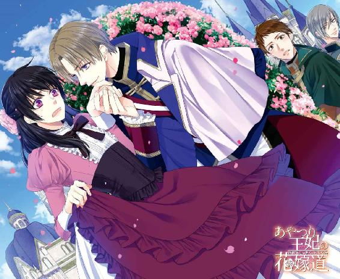
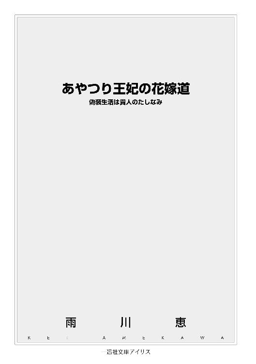
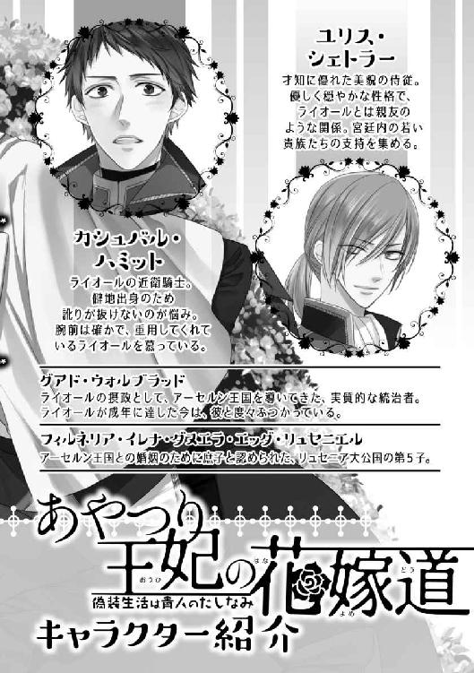
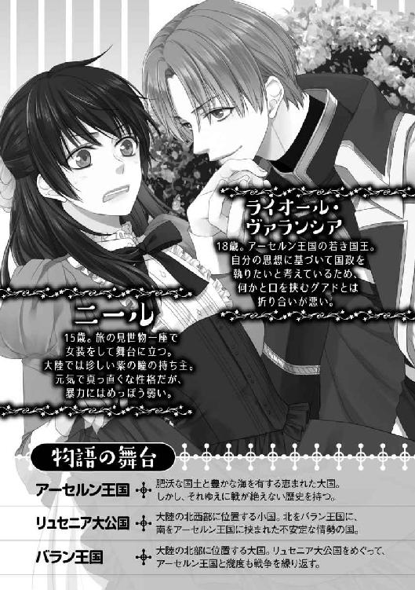
イラストレーション ◆ キリシマソウ
「――............」
夢現の意識に、誰かの話し声が聞こえる。押し殺した、低い男たちの声。
ああ、頼むからもう少し寝かせてくれ。声を振り払うように、ニールは頭を抱え込んだ。一座の男たちがひしめき合って雑魚寝する天幕の中では、耳障りな話し声などご法度なのだ。そのうち、不機嫌に目を覚ました誰かに殴りかかられるに違いないのに、一体何を話しているのだろう......。
――いや......。
違う。わずかに身動ぎすると、身体の下で何かが柔らかくたわむ。薄いボロ布を敷き詰めただけの、野営の寝床とは違う。これは、寝台だ――旅暮らしの貧乏一座で暮らしていては、滅多に味わうことのできない感覚。
だが、急速に浮上してきた意識とともに、別の感覚も戻ってくる。鳩尾の辺りが強く痛んで、知らずニールは呻き声を漏らした。
薄目を開けると、見えたのは薄汚れた天幕ではなかった。幾何学模様が描かれた淡い色の天井に、見覚えなど欠片もない。狭い空間に詰め込まれているはずの、仲間たちの気配もない。
「............!?」
そんな馬鹿な。異常事態を認識して、ニールは寝台の上に跳ね起きた。その動きのせいで、またしても腹が痛んだが、しかしそれを気にしている余裕はない。
――どこだ、ここ。
「お目覚めか」
不意に、近くで声がする。ぎょっとして視線を向けた先に、見知らぬ男がいた。扉の向こうに何か断るような仕草をすると、そのまま扉を閉めて、こちらへ向かってくる。
男の顔は見えなかった。目深に帽子を被り、その上口元を布で隠している。明らかに顔を見られたくないらしいその風体に、ニールは本能的な不審を感じて身を固くしたが、続く男の行動には呆気に取られてしまう。正体不明の男は、恭しく彼に一礼したのだ。
「ご機嫌麗しゅう――リュセニア大公女、フィルネリア・エッダ・リュセニエル殿下」
「......へ？」
間抜けた声を発して、ニールは呆然と男を見上げた。何と言われたのか、とっさに理解できなかったのだ。
だが次の瞬間、思わぬ衝撃に舌を噛みそうになる。男は前触れもなく手を伸ばすと、ニールの顎を無遠慮に掴んで上向かせた。
「ッ！」
「ああ、確かにこの色だ。紫の瞳――『本物』と同じ」
「ほん、もの......？」
「これからおまえが、演じる役だ」
男は放り捨てるように、ニールの顎から手を放した。顔をしかめる彼には構わず、一方的に告げる。
「これから、迎えの馬車が来る。おまえはリュセニア大公女フィルネリア姫として、それに乗り込むんだ。決して、身代わりだと明かしてはならない。ばれたなら、必ず死をもって償わされるだろう」
「えっ......ちょ、ちょっと待てよ！ 何の話だよ！」
意味が解らない。声を上げながら、ニールは起き抜けのぼんやりする頭を慌てて巡らせた。
リュセニア、というのは、リュセニア大公国のことだろう。大陸の北西部に位置する小国で、ニールの属する旅の見世物一座が、一月ほど前に通り過ぎた国だ。北をバラン王国、南をアーセルン王国という大国二つに挟まれて、国家間では常に不安定な情勢だと聞くが、実際の市井の暮らしは思うほど悪くなかった。舞台に上がる傍ら、一座の帳簿係もしているニールにとっては、実入りを確かめた座長に、これだけかと八つ当たりで叩かれることがなくてありがたかったものだ。
リュセニアはいい。問題は、その後に続く言葉だ。
「た、大公女って、何？ 誰!?」
「大公女フィルネリア殿下、現リュセニア大公の第五子。と言っても、寵姫に生ませた庶子だがな。この結婚のために、大公女の称号を許されたのだ。でなくば、アーセルン側は納得するまい」
「それが、おれに何の関係があるんだよ！」
「おまえには、彼女の代わりを務めてもらう」
「何でおれがそんなことしなきゃなんないんだ！」
「おまえが適任だからだ。天涯孤独で、縁者もないのは、秘密を守るのに向いている」
「！ どうしてそんなこと、知ってんだよ！」
「身寄りのある人間が、わざわざあんな一座で暮らすまい。あの座長、おまえを買いたいと言ったら、間髪容れずに値を吹っ掛けてきたからな。普段から慣れた態度だ、あれは」
「............」
では、自分は金で売られたのだ。事態を把握して、ニールは黙り込んだが、それはあり得ないことと思ったからではない。むしろ、そうだったのかと腑に落ちさえした。あの座長なら、そういうこともあるだろう――幼い頃から、彼を厄介者扱いしてきたあの男なら、少し金を積まれただけで、大喜びで雑役の少年を手放してしまうだろう。
「それにその容姿――紫の瞳」
紫の瞳というものが珍しい色だということは、ニールも自分で知っている。土地によっては妖眼と言われて忌避されることもあるが、逆に珍しいと好意的に見られるところもある。大陸中を巡業して回る見世物一座に暮らしていたニールにとっては、ときどき話の種になる自分の容姿の特徴、という以上の何物でもないが......それが一体、どうしたというのか。
「アーセルンには、大公女の肖像画がある。多少の人相の違いは誤魔化せても、瞳の色が違っていてはまずい」
リュセニアの隣国、大陸の中南部に広がるのがアーセルン王国だ。肥沃な国土と豊かな海を有する恵まれた大国だが、それだけに歴史的には戦乱の絶えない国でもある。しかしこの数年は、大きな戦争の話は聞かない。
「おまえは、大公女フィルネリアとして、アーセルンに嫁ぐ。アーセルン国王ライオール・ヴァランシアに」
だが、男が口にした言葉は、またしてもニールの理解を超えている。
――......嫁ぐ？
「な......な、あ、あんた、何言ってんだよ。そんなこと、できるわけねえじゃん――おれは男なのに！」
言いながら、ニールはようやく己の姿に気付いた。長く裾を引く、光沢のある鮮やかなドレスは、確かに男の着るものではない。
が、今までその異常を無視していられたのは、実際のところ、その衣装は彼のものだったからである。厳密には、彼が身を寄せていた見世物一座のものだ。こうした恰好をして舞台に上がり、他の芸人の技を手伝ったり、劇を演じて見せるのが彼の生業であった。決して好んでいたわけではないが、背も低ければ力もないおまえに他に何ができると座長に押し付けられては、断ることはできない。やがて十六になろうという年齢の割に線の細い容姿のせいか、妙に評判を取ったせいで、止めるに止められなくなってしまった。
だがまさか、本当に彼を女だと思っているわけではないだろうに。ニールは、ここで目覚める前、意識を失う前のことを思い出した。舞台を下りたところで、一座の男に呼ばれて、道具置き場の裏へ行ったのだ。そこで誰かに、強かに鳩尾を殴られた。もし、目の前のこの男が、座長に話をつけて彼を買ったのだとしたら、ニールの性別くらい当然聞き及んでいるはずだ。
「そ、その王様って、男なんだろ！ おれも男で、相手も男で、どうやってその......結婚するんだよ！」
まだ結婚などしたこともないし、考えたこともないニールだが、それでもそれが、ただ綺麗な衣装を身につけて皆の祝福を受けるだけのことではないということは知っている。美しい飾りも身を隠す衣もなくなれば、誤魔化しおおせるはずがない。
しかし、顔の見えない男は、感情を悟らせない声で言うばかりだ。
「何百もの観衆の前で、女を演じていたのだろう。寝室では、一人の男の目を眩ませればいいだけのことだ」
「しっ、寝室って......！ 無理だ、無理無理！ 絶対無理！ だ、大体、本物のお姫様はどうしたんだよ？ 何でおれが偽者なんかに――」
最後まで言い切ることはできなかった。不意に、目の前の男が一歩踏み込んでくる。その動きを見極める暇もない、男の腕が上がったと思った瞬間、鋭い音とともに衝撃が走る。
頬を叩かれたと悟ったときには、ニールは床に這いつくばっていた。張り飛ばされた頬が、熱を持って痛む。が、すぐに立ち上がれないのは、その痛みのせいではない。手足に力が入らない――痙攣するように激しく震えて、全身に冷たい汗が滲む。
――くそ......。
胸中に毒づく声も、しかし身体中を支配する恐怖の衝動に打ち勝つことができない。手を上げられると抵抗できない、ちょっと小突かれただけでも、もう恐ろしくて身体が動かない。
それは、いつの頃からか身に染みついた彼の悪癖だった。親も身寄りもない子供を引き取った見世物一座の座長は、気紛れに怒りを発散させて、彼を打ち据えたものだ。抵抗する術がない以上、後は身を固くして、ただ暴力の嵐が去ってくれるよう祈るしかない。
「本物のことなど、詮索するな」
頭上から聞こえる冷たい声には、慈悲の響きなど欠片もなかった。綺麗に磨かれた靴が、震えるニールを無情に蹴り飛ばす。
「言われたことを果たせ。おまえが生き残る道は、それしかない。王族を騙ったと他に知られれば、死罪は避けられないのだから」
「............」
「この部屋を出れば、おまえはリュセニアの大公女だ。死にたくなければ、よく考えて行動するんだな。助けを求めようとしても無駄だ、おまえには見張りが付いている」
「............」
「――しくじれば、殺す」
ぐいと腕を引かれて、立ち上がらされる。膝の震えを抑えるのに精一杯のニールには、男の言葉の理不尽さに憤ることもできなかった。望んで王族を騙るわけではないのに、死罪だなんて馬鹿げている。こんなことはしたくない、嫌だ――なのに、恐ろしさに喉が詰まって、声さえも上げられない。
そのまま、引きずられるように部屋を出る。廊下を通って、整然とした玄関ホールに出たことで、ニールははじめてここが、立派そうな屋敷であると気が付いた。目が眩むように豪奢というわけではないが、部屋数があって小綺麗な建物だ。豊かな商人や貴族が人目を忍んで暮らす別邸のような佇まいである。
そして同時に、外の物音にも気付く。人々の話し声、物が触れ合う音、馬の嘶き、地を踏みしめる足音――大勢の人間が待ち構えている気配。
「............」
扉が開かれる。途端、辺りからざわめきが消え、ニールは目に入ってきた光景に息を呑んだ。
数段の階段の下に、揃いの制服に身を包んだ男たちが並んでいる。一様に剣を帯び、一糸乱れぬ敬礼でニールを迎えた彼らは、間違いなく訓練された兵士に違いない。彼らの奥には、何台もの馬車が連なっている。街で見かけるような荷馬車ではない、黒塗りの車体は曇りなく陽光に輝き、その威風を見せつけているかのようだ。
人々の列から、一人が進み出てくる。頭に白いものの混じる年配の男で、旅装らしく目立たない外套を羽織ってはいるが、随分と身なりがいい。新たな男はニールをちらりと見ると、今度は探るような視線を、未だニールの腕を掴んでいる顔を隠した男に向けた。
「この者が......？」
背後で、頷く気配がする。目の前の年輩の男は、まるで何かのお墨付きをもらったかのように肩の力を抜くと、今度こそニールに向かって一礼した。恭しく、最大限の敬意を払った――高貴な姫に対するにふさわしい礼。
「お迎えにあがりました、フィルネリア大公女殿下。どうぞこちらへ」
既に、手配は整っておりますと言われたが、とっさに動けるものではない。ニールは返事もできないまま、その場に立ち尽くす。不意に、先刻聞いた言葉が蘇る。
――王族を騙ったと他に知られれば、死罪は避けられない。
「さあ、行け――仕事のはじまりだ」
背後で、押し殺した声がした。ニールだけにしか聞こえない、骨の髄まで凍えさせるその声が、逃げなければと思う気持ちを押し潰してしまう。恐怖に逆らえず、言われるまま、貴婦人に差し出される支えの手を取って、ニールはふらふらと目の前の階段を下りた――まるで、悪い夢の中にいるかのように。
＊ ＊ ＊
リュセニア大公国のフィルネリア姫、というのが、彼の演じる役どころであった。正確には、大公女フィルネリア・イレナ・ダヌエラ・エッダ・リュセニエルという。何という長ったらしい名前かと思うが、『自分の名前』であるからには覚えるよりない。
乗り込まされた馬車は、アーセルンへ向かう大公女の婚礼の一行のものだった。中でも、ニールが乗る馬車は、一際贅を尽くした作りである。黒塗りに黄金の装飾が施された外装に劣らず、内側にも採光のための窓と、絹張りの椅子を備える豪奢さで、貴人の長旅のために特別に使われるものだと一目で解る。
だが、その馬車に備えられていたのは、快適なものばかりではない。
「フィルネリア殿下は、リュセニア現大公ツィリル・リュセニエルの五人目の御子、姫としては三番目に当たられます。ですが庶出の姫でございますから、臣下を後見とされて、都を離れてお育ちでした」
そう教えてくれたのは、厳めしい顔の『大公女付き』侍女だった。常にニールの側にいて、馬車の中では二人きりで過ごすこの女は、しかしただ姫君の身の回りの世話をするためにいるのではない。
「ですから、アーセルンでは、『大公女殿下』のお姿を直に知る者はおりません。王宮に、肖像画があるとは伺っておりますが......振舞いにさえお気を付けていらっしゃれば、不都合は起きないものかと」
この女は、ニールが何者かを知っている。いや、『何者でないか』を知っているのだ。この奇怪な入れ替え劇を企んだ者も、さすがに市井に育った少年が、そのまま他人、しかも見ず知らずの高貴な姫君になる無理は承知だったらしい。彼女は、ニールを大公女に仕立て上げるために送り込まれた『教師』であった。
「あ、あんた、あの男の仲間かよ！」
一体何故こんなことをしているのか、どうして彼をこんな目に遭わせるのか。しかしどれだけニールが問い質しても、女の鉄面皮は微動だにしなかった。
「私はただ、命令に従っているだけです。『大公女殿下』をお守りするようにと」
「守るだって！」
「『大公女殿下』が、無事アーセルンの王宮へお入りになれるようにするのが、私の務めです。そのためには、『秘密』は決して漏れてはなりません」
この馬車の外には、と女は言った。既にニールは、リュセニアの婚礼の使節に対して『フィルネリア大公女』だと名乗っている。今、偽者であることが一行に知れれば、大公女を騙る不埒者として拘束されるか、運が悪ければその場で斬り捨てられるだろう。
「......本物のお姫様は、どこにいるんだよ。どうなってんの？」
「それは、私の知るところではございません。私はただ、『殿下』の御身をお守りすることだけが使命です」
「............」
「身の回りで起こることは何事でも、この私にお知らせください。できるだけ他の人間と顔を合わさないようにして、御用には私を使っていただければ、どのようなことでも危険のないよう対処いたします。ですが、私が侍女としてお側に付けない場合だけは――たとえば会食のときや舞踏などは、どうしてもご自分でこなせるようになっていただかなくては」
女はアンゼと名乗り、以降、片時もニールの側から離れなかった。まるで親鳥が雛を庇うような甲斐甲斐しいその態度は、ニールをいくらか安心させはしたが、しかし完全に気を許せるものでないこともまた解っていた。
――だって、彼女は、剣を持ってる。
夜、眠るときも手放さないその武器は、決して護衛のためだけではない。彼女は庇護者であったが、同時に監視者でもあった。アンゼが側に張り付いている限り、逃げ出すこともままならない。
とにかく、今は様子を窺うしかない、とニールは思い決めた。迂闊に動いても、どうにもなりそうにない。身を守りたいと思うなら、今はできることをするべきだ――さしあたっては『大公女』をうまく演じて、逃げ出す機会を待つしかない。
アーセルンまでの旅程は、こうして過ぎた。見世物を演じて回る一座の下っ端として、これまで大陸のあちこちへ旅をしたニールにとって、これほど安楽な馬車旅ははじめてだったが、それを堪能している余裕はとてもなかった。リュセニア大公国の歴史、地理、宮廷の有力者や諸侯の名を覚える。話し方、姿勢、相手との距離の取り方や食器の扱い方に至るまで、無意識のうちにでもこなせるように、身体に染み込ませる。本物の大公女は、長くリュセニアの宮廷から離れて暮らしていたというから、多少の心得のなさは誤魔化せるにしても、ニールは土台が平民の孤児なのだ。どれだけ必死で学んでも、学びすぎるということはない。
だが、転機は意外な形でやってきた。
「大公女殿下」
外から声がかかったのは、馬車が止まって半刻もしてからだった。大公女の婚礼行列は大所帯で、何台もの馬車が連なっているため、これまでの道中でも渋滞を引き起こすことはしばしばあった。しかし、これほど長く待たされたのははじめてだ。アーセルンの王都ベクトラに、これほど近付いた今になって。
「私が」
言って、席を立ったのは侍女のアンゼだった。ニールに、そのまま馬車に留まるように合図をして、さっと外へ出ていく。突然、一人きりになって、ニールはすかさず辺りを見回したが、当然のことながら脱走を図れる状況ではなかった。採光窓から見える範囲だけでも、武装した護衛兵が何人も見える。
そもそも、彼の監視役は馬車を離れたわけではない。扉の向こうから切れ切れに聞こえてくる声は、間違いなく彼の侍女のもので、ニールは少し驚いた。あの、いつでも冷静そのもののような女が、何事か声を荒らげているようなのだ。一体、何があったのか......。
だが、それを聞き取ることはできなかった。少しでもはっきり聞き取ろうと、そうっと馬車の扉に耳をくっつけた途端に、扉が叩かれたのだ。
「いっ......！」
「失礼致します、大公女殿下」
突然の轟音に見舞われた耳を押さえて呻いたニールだが、続いてかけられた言葉を聞いて、辛うじて体裁を繕った。声の主は男、おそらくは馬車を護衛している兵の一人だろう。
「謹んで、殿下にご報告申し上げます。――アーセルンから、使者殿がお見えです。殿下にお目通りを願い出ております」
「使者？」
そんな話は聞いていない。ニールは思わず問い返した。アーセルンの人間に会うのは、この馬車で王城に乗り入れてからではないのだろうか。
けれどそれを質す暇はなかった。彼の返事を待つのもそこそこに、外から開け放たれた馬車の扉の向こうから、見慣れない者が声をかけてきたのだ。
「はじめて御意を得ますことを、光栄に存じます、大公女殿下。アーセルン国王ライオール陛下の御下命により、御身をお預かりし、つつがなく我が王の下へお連れします――ここからは、我々と御同道くださいますよう」
「そんな話は聞いておりません」
言ったのはニールではない、先程から、馬車の外で何事か声を上げていたアンゼである。その表情を見た瞬間、ニールは密かに息を詰めた。血の気の引いた、強張った顔は、これまでに見たこともない深刻さを表している。彼女にとっても、これは不測の事態なのだ。
「この方は、リュセニアの大公女です。アーセルンへ嫁がれるにせよ、そのことは変わりないはず。私たちは大公女殿下をお守りして......」
「ここからは、お守りするのは我が方の務めです。必ずや遺漏なくお守り申し上げましょう。それとも、リュセニアは我々の備えに何かご不満か」
「そのようなことは......！」
「それに、大公女殿下にもよくお心得いただきたい。我らが王妃となられる御方だ――その一身で我々の忠誠を受けられるのに、ふさわしくあっていただかなくては」
「こんなことはあんまりです！ 私はこの方の侍女です、侍女は貴婦人に認められる当然の」
「侍女はこちらで用意してある。馬車も、身の回りのものも。何一つ、ご不自由をおかけすることはありません。それが、我が王家のしきたりですので。国王の妻となる方は、ご実家から何物をも持ち込むことはできないのです」
ニールは密かに息を呑んだ。ようやく事態を理解したのだ。つまりアーセルンは、大公女に身一つで来いと言っているのか。身を守る兵士も、側仕えの者も連れず、ただ一人で。
「使節の方、お付きの者どもには、王城の外に別の宿舎を用意しておりますので、そちらへ向かっていただきます。この王都は国王陛下の御座所、我が王妃に、王家の馬車以外のものに乗ってお入りいただくわけには参りません」
口調こそ丁重なものだが、しかしその響きには有無を言わせぬものがある。
密やかな身震いが、ニールの内側から湧き上がってきた。他の者はともかく、アンゼがいなければどうなるのか。とにもかくにも、彼女は庇護者だ。その目的はともかく、これから入る王宮で、ニールの正体がばれないよう守ってくれるはずの――。
――いや、そうじゃない。
「解りました」
判断は、一瞬のこと。答えて、ニールは立ち上がった。すかさず、使者が支えの手を差し出してくる。強く掴まず、かといって恐る恐るには見えないよう、当たり前のようにその手を取ると、ニールは背筋を伸ばして危なげなく馬車を降りた。何度か練習した通りに。
「あなたの話は理解しました、使者殿。ご配慮に感謝します。あなたと一緒に行きましょう」
「殿下！」
「アンゼ、もういい。今までありがとう」
側に立つ、アンゼを見やる。依然、堅い表情は崩さないながら、瞳の奥に揺れる光は、内心の恐慌を示している。彼女の任は、王宮の中でも常にニールの側にいることだったはずだ。彼の側にいて、当たり障りない会話以外の『大公女殿下』の務めを陰でこなし――おそらくは、その全てを、誰かに報告するはずだっただろう。
彼女は味方ではない。彼にこんなことをさせるよう仕向けたあの男に通じる、彼の監視者である。その彼女が、ようやく彼の側から離れようというのだ。
――監視されてなきゃ、逃げる機会だってある。
「あなたの教えてくれた通りにやる。――わたしを気にかけてくれてる人達にも、よろしく伝えて」
最後は、半分は厭味、半分は反応を見るために付け加える。アンゼはきつく唇を閉ざすと、やがて跪くように深く一礼した。大公女の命に従う、従順な侍女――しかし本当は、俯くことでその表情を隠したのだとニールは察した。
アンゼは、彼女の主人に何と伝えるだろうか。彼らが別の企みで、ニールの身を絡め取ろうとする前に、何としても逃げ出さなくては。
「どうぞこちらへ、大公女殿下。馬車がお待ちしております」
使者に導かれ、ニールは顔を上げてそれに従った。踵の高い靴はひどく歩きにくいが、足が震えるのはそのせいばかりではないだろう。ついに、彼は一人になったのだ。誰も自分を知らない――偽者の大公女として、知らない人々を一人で欺かなければならない。
こんなとき、ドレスは便利なものだとはじめて思う。足の震えを、誰にも気付かれないで済む。
大きな車輪の四輪馬車が、リュセニアの馬車から少し離れて停まっていた。車輪に比べて車体が小ぶりなのは、この馬車が多人数の長距離移動を想定されていないからだろう。優雅な曲線が強調された軽快な作り、開放的な窓、汚れ一つなく磨きあげられた扉に、黄金で紋章が嵌められている。翼を持った跳ね馬と王冠――アーセルン王家の紋章。
馬車に乗り込むのは、ニールだけだった。手を借りて腰を落ち着けると、外から扉が閉められる。少し離れて、警護の騎士たちが隙なく馬車を取り囲む。先刻まで周囲にいた、リュセニアの兵士とは違う。毛並みが良く逞しい、揃いの馬具をつけた軍馬に跨り、傷一つない鎧を身につけた男たちは、アーセルンの王城から派遣された騎士たちだ。
ほどなくして出発した馬車の窓から、ニールは外を眺めた。考えてみれば、こうして景色を眺めるのは随分と久しぶりだ。リュセニアの馬車の中では、学ぶべきことを覚えるのに必死で、周りの景色を見る余裕はなかった。
街道には、他に馬車や旅人の姿はなかった。おそらく、大公女の婚礼行列のために、今だけ通行を禁じているのだろう。道沿いに、等間隔に植えられた背の高い木々の向こうに、なだらかな緑の丘が広がっている。穏やかな太陽に照らされた濃い緑は、豊穣の地の証だ。
ぽつりぽつりと、民家が現れはじめる。と、それはすぐに小さな家々がひしめきあう眺めに変わった。馬車の先に、大きな石壁が見える。古い時代に、都市を守っていた城壁だ。どこかで鐘が鳴っている――民に、新たな来訪者を告げる鐘の音。
「――――！」
壁に穿たれた門をくぐった瞬間、あらゆる音が一気に押し寄せてきた。
大通り沿いの路地には人が溢れ、こちらを見て口々に何かを叫んでいる。しかし、何を言っているのか、ニールにはよく聞き取ることができない。大人に子供、男に女、種々雑多な人々を、兵士と思しき制服を着た男たちが怒鳴りながら、通りに入らないよう押さえているが、それがいつまで持つかは心許なく思える。人々は狭い場所で互いに押し合い、あるいは身を乗り出して腕を振る。
呆気に取られて固まっていたニールだが、しかし事情を悟るのにそれほど時間はかからなかった。人々の顔は決して敵意あるものではなく、むしろ穏やかなものだったからだ。ある者は笑顔で手を振り、ある者はこちらを指さして、連れに何か言っている。肩車をしてもらっている子供が、目を丸くして父親の頭にしがみついている――彼らの王妃となる異国の姫に向ける、好奇の眼差し。
――一応、歓迎されて......んのかな。
「大公女殿下」
一人の騎士が、ニールの側に馬を寄せてきた。歓声にかき消されないよう、しっかりとした声で告げる。
「窓をお閉めください！ 群衆が近付いてきます」
「何か危険があるのですか」
「万一のことがあっては困ります。どのような輩が紛れているとも限りません。――ご心配なく、すぐに追い散らしましょう」
「！ 待って！」
そのまま離れていきそうな騎士を、ニールは慌てて呼び止めた。振り向く彼の身に纏った武装が、馬体の動きに合わせて、ガシャガシャと物騒な音を立てる。立派な体格の軍馬は、どれだけの人波が押し寄せようと、容易く蹴散らせてしまえるだろう。
そんな恐ろしいことを、どうしてさせられるものか。
「構いません」
「殿下」
「あの人たちは、悪いことなんかしやしない。わたしの姿を見たいだけなんです。見たいというなら、見せておけばいい。恐ろしいことではありません」
「しかし、それではよからぬ者がお近くに......」
「あなたたちより近くには誰も寄せないようにしてくれたら、問題ないでしょう？ あんな風に遠ざけて押さえつけるから、騒ぎになる。彼らを通りに入れなさい。馬や馬車に巻き込まれて誰か怪我をしないように、それだけはよく注意して」
「ですが......」
「早く」
瞬間、相手と目を合わせて、ニールは密かにぎくりとした。馬上の騎士は貫禄のある男で、相対すれば到底敵う相手とは思えない。こんな男が、彼の言うことなど聞くだろうか......。
だが、心配する必要はなかった。一瞬だけ、騎士は驚きの表情を浮かべたものの、それはすぐにかき消える。それ以上、ニールが何か言う前に、彼は敬意を込めた目礼をすると、馬を巧みに駆けさせて馬車から離れていった。
ほどなくして、左右の街路から人々が大通りに流れ込んできた。馬車と付かず離れずの距離に群衆を留め置いて、ニールの指示を正確に実行していることが窺える。押し込められていた路地から解放された人々は、尚更に声を上げ、大公女の乗る馬車を見上げる。
無数の視線を浴びせかけられ、ニールは反射的に笑みを浮かべる。歓呼に応じて、窓の外に手を振りさえした。嘘をつくときには、決して隠そうとしてはならない。むしろ堂々とさらけ出しているべきだと、ニールは身体で知っていた。人々には、真実を見抜く力はない。ただ、役者の振舞いに恐ろしく鋭敏なのだ。役者が隠そうとすれば、必ず勘付く。けれど一方で、あからさまにその目に見せつけられたことは、真実だと信じて疑いもしない。
――これは、舞台だ。
だから、大丈夫。どうすればいいかは、ちゃんと心得ている。皆が見たい幻を――『フィルネリア大公女』を演じ切ってみせればいいのだ。舞台を下りる、そのときまで。
――どこであっても、同じ。
急に一際強い風が吹きつけてくる。川面を吹き渡る風だ。川にかかる橋の向こうに、尖塔が幾つも見えた。さざ波の立つ水面に、どっしりとした城壁が映り込んでいる。
見る者に思わず息を呑ませる、堂々たる威容を見せるのは、この国の王宮――ニールの立つべき真の舞台に違いなかった。
＊ ＊ ＊
「ようこそお越しくださいました。無事のご到着、まことに重畳に存じます、大公女殿下」
「ありがとうございます、ダストン伯爵。心遣いに感謝します」
宮廷の典礼長官と名乗る男の出迎えに返事をしながら、ニールは半ば上の空だった。首を振って、辺りを見回したい衝動を何とか抑え込む。しかし、目の前に見える光景だけで、圧倒されるにはもう十分だ。馬車から降りた途端に目に入った巨大な石柱は、立体的な彫刻が施されていることもあって、王宮に足を踏み入れる者を冷然と睨み下ろしているように感じられる。
――てか、こんなごちゃごちゃ飾り立てて、目がちかちかしねえの？ 偉い人って、こういうのがいいのか？
「ご到着早々大変恐縮ですが、まずはこちらへ。我が国王が、お越しをお待ちしております」
だが、先に立って案内する典礼長官にそう言われ、ニールは逃避気味の意識をはっと引き戻された。そう、王宮の内装について埒もないことを考えている場合ではない。街の群衆も宮廷の高官も、『彼』の前座に過ぎないのだ。細心の注意を払って演じてみせなければならない相手、最も恐ろしい観客――彼の新たな夫となる、アーセルンの国王の。
――うう......『夫』とか、冗談じゃねえんだけど......。
とはいえ、心ならずといえども、ニールは騙す側だ。騙される側のアーセルン国王は、もっと冗談ではないことだろう。高貴で可憐なはずの花嫁の中身が、小汚い平民の、しかも男だとばれたらどうなるか。とりあえず生命がないのは確かだろうが、その前にどんな苦しい刑に処されるか、考えるだけで身体が強張る。
そのアーセルン国王ライオールについては、ニールは通り一遍のことしか知らなかった。はっきりと解っているのは、先代の国王である父親の急死によって、幼い頃に王位に就いた少年王だということくらいである。当然のことながら、これまで彼自身が政治を主導してきたわけではなく、また表舞台に立つことも少ないため、正確に彼の性質を知るのは困難なのだ。
幼い子供を王として立てながら、それでもアーセルンのような大国が混乱をきたさず存続してこられたのは、ひとえに摂政公グアド・ウォルブラッドの手腕と言われる。若い頃は軍人として名を成した将軍であったというこの男は、先王の信任厚く、その遺詔によって幼王の後見人となった。以降、彼は与えられた権力と己の手腕を存分に発揮してアーセルンを動かしてきたのだ。二度の内乱を収め、内政に強権を振るって体制を作り変えた。アーセルンの実質的な統治者で、『摂政公陛下』などと揶揄されることさえあったが、しかし現在は少し事情が変わっている。国王ライオールが成年に達し親政をはじめ、摂政位は廃止されたからだ。
そしてこの結婚も、王の親政の開始に伴って行われるものだ。幼少であった者が一人前の大人になったことを衆目に示すのに、結婚ほど解りやすいこともない。
――くそ、馬鹿なんじゃねえの。
半ば八つ当たり気味に、ニールは内心で毒づいた。その国王とやらが、とりあえず妻でも娶って体裁を整えようなどと思わなければ、彼がこんなことに巻き込まれたりはしなかったはずなのだ。一国を預かる人間として、そんな形式ばかり考えるよりも先に、他にやることがいくらでもあるだろうに......。
「――ふざけるな！」
しかし次の瞬間、耳に飛び込んできた怒声に、ニールは思わず足を止めた。といっても、彼に向けられた言葉でないことは解っている。声は少し離れたところから聞こえたのだ。
いつの間にか、大きな扉の前に案内されていた。美しい装飾の彫られた扉板に、跳ね馬に王冠の紋章が輝いている。左右を守る衛兵が、近付いてきた典礼長官とニールの姿を認めて敬礼をするのに、小さく会釈を返しながら、ニールはしげしげと扉を眺めた。どうやら声は、この向こうから聞こえるらしい。
「私は、こんな話を受けるつもりはないと言ったはずだ。勝手なことを！」
「そのことは、何度も申し上げて、お解りいただいたかと思っておりました」
憤る声とは対照的に、応じる声は落ち着いた響きだった。ゆったりと低い声、それでいてきっぱりとした話し方は、独特の威厳を感じさせる。
「それに、既に先方はこちらへ向かっておられる。まもなく、ここへ到着なさるでしょう。今更、そのような勝手を仰るものではない。どうぞ、お立場をお考えください。何がご不満か存じませんが、あなたに他の選択は許されない」
「......『おまえに都合のいい選択以外は』許されないの間違いだろう」
「『王国に都合のいい選択以外は』です、陛下」
「よく言う。その都合を、勝手に決めているのは誰だ？ もう、おまえにそんな権限はない――現状、リュセニアの大公女がそれほど必要な都合があるとは、私は思わない」
ニールはぎょっとして、目を瞬いてしまう。どうやら揉め事の原因は、自分であるらしい。しかも話から察するに、中にいるのは......。
「............」
ちらりと傍らに目をやると、やはり同じ推測に辿り着いたのであろう典礼長官が、動揺した様子で顔を引きつらせている。ニールの視線に気付くと、さりげなさを装って顔を逸らしたが、これ以上、大公女に中の言い合いを漏れ聞かせておくことはできないと判断したのだろう。すぐに目の前の扉を叩く。
「典礼長官ダストン伯が、謹んで申し上げます！ リュセニア大公女フィルネリア殿下を、ただいまお連れ致しました」
殊更に大きな音を立てて扉を叩き、声を張ったのは、中の人物に注意を喚起するためだろうか。宮仕えも大変だな、と、ニールは皮肉っぽく考えたが、しかしそんな意識も、襲い来る緊張の波に洗い流されて消えてしまった。左右に立つ衛兵が、素早く扉を開ける。典礼長官が恭しい仕草で一歩退き、彼の前に道を空ける。
室内は、想像していたほど広くはなかった。さすがに優雅な作りだが、目につく調度は椅子と長卓くらいしかないところを見ると、あまり形式ばらない応接室か、小さい会議室といったところだろうか。
中にいたのは、男が三人。真っ先に目に入ったのは、その中心に立っている青年だ。すらりとした身体に、仕立ての良さそうな服をきっちり着込んでいる。淡い金の髪が、直接光が当たらない室内にあっても、きらきらと輝いて目を引いた。
――これが......王様？
一瞬、呆然と相手を眺めてしまったのは、彼が想像と違ったからだ。幼い頃に即位した王だなんて聞いていたから、無意識に、もう少し子供っぽい姿と思い込んでいたのだ。
――ああ、でも、大人になったから結婚するんだっけ。王族の成年って、ええと......十八？
ニール自身より、三つ上ということになる。意識した途端、ニールは苛立ちとも羨望ともつかない気持ちを味わった。たった三年の差のはずなのに、向こうはずっと大人に見える。堂々としていて、背が高くて......多分、頭一つ分はゆうに違う。
――......まあ、王様だから、偉そうにしてるのは当たり前か......。
「ようこそおいでくださった」
歓迎の言葉を述べたのは、目の前の青年ではない。彼と向かい合って立つ男、歳は五十を超えているだろうか。しかし、ところどころ色が抜けたようになっている髪の他には、老齢を感じさせるところはどこにもなかった。背丈は青年と同じくらいだが、身体の厚みは倍ほども違うように見える。肥満ではない、長く鍛錬を重ねた強靭な体躯だ。
「遠路はるばる、さぞ御苦労であったろう。お身体に応えてなければ良いが」
穏やかな口調、しかしこちらに向けられる男の鋭い視線は、必ずしも気遣いではないと気付き、ニールは背筋が強張るのを感じる。まるで値踏みするような目だ――でなければ、何もかもを見透かそうとするような。先刻、国王と言い争っていた声は確かにこの声だ。強く、力のある――何者をも従わせる声。
「お気遣い、ありがとうございます。出迎えにいらしてくださった皆様にも、大変よくしていただきました」
密かに湧き上がる恐怖を慌てて押さえつけ、ニールは平静な表情を保った。こういう人種は苦手なのだ。あの岩のような拳で殴られたら、手も足も出ない。
だが、苦手でも何でも、今は取り繕わなければならない。ニールは役を思い出し、金の髪の青年へ向き直った。ドレスに手を掛け、膝を曲げて深々と一礼する。これまで教わってきた通り、正確に。
「――はじめてお目にかかります、国王陛下。リュセニア大公国より参りました、フィルネリア・エッダ・リュセニエルと申します。近く御意を得ますことを、光栄に......」
「あなたに会うつもりはなかった」
突然、形式的な挨拶を遮られ、ニールは驚いて顔を上げる。見えたのは、冷たくこちらを見下ろす青年の瞳だ。海の色だ、と、ニールは埒もなく思った。明るい南洋ではない、その奥に氷を閉じ込める、深く底知れない北の海の色。
「ご足労をかけたことは申し訳なく思う。しかし、あなたには、このまま国へ帰ってもらいたい」
「えっ？」
「陛下」
ニールの漏らした困惑の声は、それに倍する叱責の声にかき消される。大きな男は、傍で見ているニールが震え上がるような目つきで、国王を睨む。
「いつまでそのように、弁えないことを仰るおつもりか。大公女殿下は、あなたの花嫁となられるために、ここまで長く旅していらっしゃったのです」
「来てくれと頼んだ覚えはない！」
「私がお願いしたのです。あなたの摂政として」
「もうおまえは摂政などではないぞ、グアド。私は、おまえの言いなりにはならない」
「もちろんです、陛下。しかし、この縁談をまとめたときには、私はあなたの摂政であった。先王陛下の命により、王国とあなたをお守りするために、どのようなことでもする権利があったのです。遡って覆すことは、あなたにも許されない」
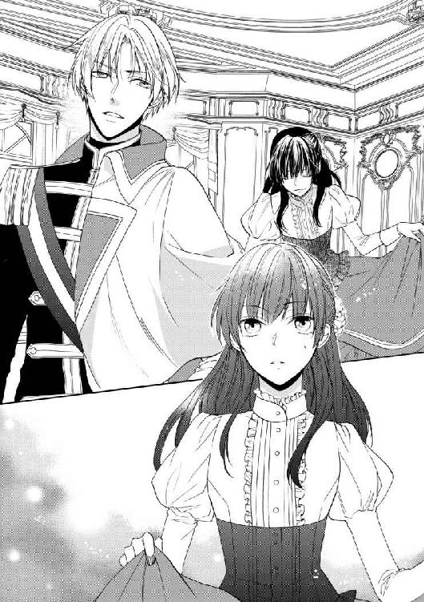
「謀ったな！」
「どのようにでも仰るがいい。だがこの件に関しては、もはやあなたにも受け入れていただく他はない。大公女殿下は、既にお着きになったのだ、今更戻っていただくわけにはいかないと、少しお考えになればお解りのはず」
「............」
「......これは、あなたのためにしたことです。よくお考えなさい、陛下。この先、あなたの浅慮は、この国そのものを傾けることになる」
瞬間、目の前の若い国王の瞳に、怒りの光が閃くのをニールは見た。思わず身構えたのは、怒鳴り声が響くと想像がついたからだ。
しかし、意外なことに、予想した声は降ってこなかった。国王は憤りに任せて何か言いかけたが、それが発される前に口を閉ざす。何かを噛み殺すように、きつく唇を引き結んでいる。
やがて、静寂が息苦しくなるほどの間の後で、彼はようやく言った。
「......おまえの招いたことだ、好きにけりをつけたらいい。大公女殿下のことは任せる、ウォルブラッド公。不足なく歓待申し上げろ――我が王宮の客人として」
「陛下！」
今度は、声を上げたのは『元』摂政公の方だ。『王宮の客人として』歓待する――つまり国王は、リュセニア大公女を結婚相手と認めたわけではないのだ。
呼び止める声に答えもせず、国王は背を向けた。未だどうしていいか解らず、中途半端な礼のまま固まってしまっているニールの横を、一瞥もせずに通り過ぎる。
そのまま扉を開け放って出て行ってしまった国王に、摂政公は舌打ちと思しき音を立てる。厳しい顔のままその後を追いかけるが、しかし別の人物がその足を止めた。
「閣下、お待ちください」
それは、これまで一言も口を利かなかった、三人目の男だった。摂政公と相対していた国王の、少し後ろに控えていた若い男だ。歳の頃は二十六、七くらいか。穏やかな柔らかい口調で、凶悪な表情をしている摂政公に告げる。
「今、閣下が後を追われて説得されても逆効果でしょう。少しお時間を置かれては」
「ユリス・シェトラー！ 貴様のような侍従風情が出る幕ではない！」
ニールがびくびくしてしまうような大喝を浴びせられても、しかしユリスと呼ばれた青年は小揺るぎもしなかった。どころかその顔に微笑さえ浮かべて、丁寧に頭を下げる。
「出過ぎたことを申し上げますのは、深くお詫び致します。ですが、ここであの方を追い詰めて責め立てても、何も得るところはありません。少しお時間を差し上げてください。ライオール様は賢明なお方です。考える時間さえいただければ、必ず閣下のお考えもご理解なさいます」
「......貴様がそれをやるというのか。たいした自信だな」
「お任せいただけるのでしたら」
唸るような摂政公の言葉の獰猛な気配にもかかわらず、ユリスはますます笑みを深くする。やがて優雅な一礼をして、彼もまた、音もなく主を追って扉の向こうへ消えた。
少しの間、摂政公は二人が消えた扉を見つめていた。しかしその表情は、国王を見送ったときのものとは少し違う。眉間の皺は、深い憂慮を示している。苛立たしげな、焦るような、それでいて一歩が踏み出せないというような――懊悩。
「......ああ、これは失礼しました」
しかし、そうして観察していたニールの視線を感じたらしい。摂政公は振り向くと、慇懃な口調で言った。
「お見苦しいところをお目にかけ、大変申し訳ない。主の無礼、幾重にもお詫び申し上げる。ですが、どうかご心配なきよう――ウォルブラッド公グアドの名にかけて、必ずやこの婚儀は完全に執り行いましょう」
「えっ、あ、いや、あの......はい」
いやむしろ止めてほしい、もういっそなかったことにしてほしい、と切実に思ったが、もちろん口に出せはしない。厳つい老人の力のこもった宣言に、ニールは曖昧な笑みを浮かべるより他に為す術がなかった。
かつての王国摂政であるウォルブラッド公爵直々に案内された客室は、これまでにニールが夢に思い描くことさえできなかったような場所だった。
「ご結婚の暁には、陛下がお住まいの棟に越していただくことになりましょうから、ここは仮住まいということになりますな。ご不便をおかけしますが、今しばらく御辛抱されたい」
公爵は真面目にそう言ったが、この『辛抱』は、彼とニールの間では意味がまるで違っているだろう。アーセルン側の要請に従って、身一つでやってきたフィルネリア大公女に対し、王宮は能う限りの準備を整えていたようだった。豪華な天井画、磨き抜かれた優雅な調度。どの部屋にも、それ自体が美術品に違いない凝った細工の陶器に、溢れんばかりに生花が活けられている。寝室、居間、応接間に、侍女の控室などというものまである。素晴らしく豪奢で――ニールにとっては素晴らしく『辛抱』を要求される様相だ。正直、この空間にいなければならないと思うだけで、もう逃げ出したくなる。
だが、そう簡単に逃げ出すこともできない。
「これから殿下の身の回りのお世話をさせていただきます。どうぞ何事でもお申し付けください」
怖気を振るいながら部屋に足を踏み入れたニールを待ち構えていたのは、ずらりと並んだ女たちだった。似たような衣装に身を包み、彼を見るなり一斉に深々と礼をしたのだ。
――ばれる前に、早く逃げ出さねえと！
到着したその夜、ニールはあてがわれた寝室で息を潜めるようにして、一晩をまんじりともせず過ごした。大公女の眠りを妨げることこそないが、寝室の扉の側近くには侍女の控えの間があって、常に誰かが待機しているからである。いついかなるときも、貴人の要求に応えられるようにするための王宮の慣習であるらしいが、ニールにとっては不都合この上ない。見張られていると思うと、おちおち眠ることもできない。
その上、寝不足のまま迎えた朝には、更に恐ろしい知らせが彼を待っていた。
「――え!? お客......様、ですか？」
恭しく一礼した侍女から聞かされた言葉に、ニールは目を瞬いた。広い窓から差し込む光が、目には刺さるように感じられるが、その点は懸命に素知らぬ顔を作っておく。
「大公女殿下に、ご挨拶とご結婚のお祝いを申し上げたいと、お目通りを願っております。ハンゼルカ侯爵とご令嬢、マツァーク伯ご夫妻、ガイムス伯、イゴル・ベルブール卿は外務卿を務めておられて、リュセニア大公国にも縁が深く......」
「ちょ、ちょっと待って！」
しかし、侍女の告げる内容には、到底平然としてはいられない。先刻口にしたばかりの朝食が、早速胃にもたれてきた。大勢の召使いに囲まれて、慣れない作法をやり損なわないようびくびくしながら食べた朝食は、味も解らなければろくに喉を越しもしなかったが、この上更に彼を苦しめようとは。
「あの、どうしてそんな......皆様、えーと、ご身分の高い方々なのでしょう。それがわざわざ、ご挨拶にいらっしゃるなんて......」
本当は「なんかすげえ偉い人」と言いたかったが、慌てて言い換える。が、そもそもその質問自体がふさわしくなかったらしい。侍女はわずかに怪訝な顔をすると、もちろんです、と応じた。
「これから王妃となられる殿下の御許に、臣下の方から参上するのは当然のことです。どのようなご身分であろうとも」
「あっ、で、でも、わたし、まだ王妃ではありません。それに......国王陛下が、本当にわたしと結婚してくださるのかも解らないんです」
昨日の対面を思い出して、ニールは素早く反論した。はじめて顔を合わせたアーセルン国王は、どうやらこの結婚に乗り気ではないようだ。花嫁として現れた大公女を、いかにも気に食わなそうに冷たく見下ろした。挨拶に応えもせず、会うつもりはなかったと口にし、このまま国に帰ってほしいと言いさえした。
――てか......よく考えると、ひどくねえ？ 最低じゃねえ？
それきり国王は部屋を出て行ってしまって、彼に対してしなければならなかったはずの数々の儀礼的会話は、結局されないままだった。難関が一つ、とりあえず目の前から消えてくれたことに、ニールは心底安堵して幸運だと喜んでいたが、考えてみれば随分と失礼な話だ。
――おれだから良かったけど、これ本当に嫁入りに来たお姫様だったら可哀想すぎるだろ。初対面で「帰れ」なんてさあ......泣くって普通。王様だか何だか知らねえけど、偉そうに。
とはいえ、そこまで嫌がられているのなら、この結婚が本当に挙行されるか解らない。何せ当事者の国王が言うことだ、もしかすると、このままなし崩しに破談なんてこともあるかもしれない。政略のことなどは良く解らないが、きっと本物のフィルネリア姫にとっても、あんな男を夫にしないで済むならば、その方がいいに違いない。
「国王陛下は、わたしのことがお気に召さないようなのです。わたしは王妃にはなれないかもしれませんし、ご挨拶なんていただくわけには......」
「まあ！ そんなことはございませんわ」
内心の仄かな期待を押し隠し、昨日の体験を控えめに語ってみたニールだが、反応は予想外のものだった。目の前の侍女は驚きに目を丸くすると、それまでの冷静な口調とは打って変わって、柔らかい声音で慰めるように告げる。
「殿下は、間違いなく王妃となられます。陛下も、何も本気で仰っておられるわけではありませんわ。ご結婚の前に不安定な気持ちになるのは、女だけでなく殿方にもよくあることですし、ましてはじめてお会いする方が相手だなんて、どうしても緊張なさいますもの。殿下があまりにお美しい姫君だったから、きっとびっくりして、つい思ってもいないことを言われてしまったのですよ」
「そーかなあ......あ、いや、違......違います。わたしが言っているのはそういうことではなくて、その」
「どうぞご案じなさいませんように。殿下のお輿入れは、ウォルブラッド公爵がリュセニア大公国に申し入れて叶ったものと聞いております。公爵は、長く陛下のお側近くでお仕えされてこられた方です。きっと、陛下によろしく説いてくださいますよ」
ウォルブラッド公爵――先の摂政公。昨日、挨拶で顔を合わせたその人物を思い出し、ニールは期待が打ち砕かれるのを悟った。どうやらこの政略結婚は、あの威風堂々とした摂政公の肝煎りであるらしい。一度こうすると決めたなら、彼は必ずそうするだろう。昨日、散々に彼と言い合っていたあの若い国王にしても、それを妨げることはできない――少なくとも、妨げることはできないと侍女は思っている。
――ああくそ！ 何だよ、感じ悪くて偉そうな割に、全然役に立たねーな、あの王様！
「それで、いかがいたしましょう」
「え？」
昨日の非礼の分も手伝って、心の中で国王を刺々しく罵るのに忙しかったニールは、とっさに侍女の言を掴み損ねた。が、すぐに目下の問題を思い出す。
「あ、ああ、ご挨拶の件ですね......」
「どなたにお会いになられますか。順番は一応序列通りに伝えてありますが、お知り合いの方がいらっしゃれば、そちらを先になさることもできます」
「知り合い!?」
ニールは半ば悲鳴を上げそうになった。そんなものが現れてくれては困るのだ。
しかし、その可能性は否定できない。王侯貴族の間には、国を越えて様々な繋がりがあるものである。本物のフィルネリア姫は、王宮ではなくリュセニアの田舎で暮らしていたと聞いてはいるが、どこでどう繋がりがあって偽者と見破られるか解らない。
――冗談じゃない！
「......少し、考えさせてもらえますか」
即座に方針を決めて、ニールは『フィルネリア大公女』の仮面を被り直した。作ったのは、思いきり沈痛な表情だ――誰もが触れることをためらうような、深く傷ついて懊悩する姫君。
「わたしは、まだ『王宮の客人』にすぎません。そのような立場で、皆様からご挨拶を受けることは難しく思えます」
「そのようなことは、お気になさいませんよう。皆様、殿下を歓迎しておいでです」
「ありがとう。そう言ってくださることは、大変嬉しく思っています。けれど......一番に歓迎されたい方のお言葉をいただくまでは、勝手なことはしたくないのです」
「殿下......」
「申し訳ないけれど、いらっしゃる皆様には、お会いできないとお伝えして、お詫びしていただけないでしょうか」
丁寧な物言いに、断固とした命令の響きをくるませるやり方は、付け焼刃の貴婦人教育で得たものの一つだ。貴婦人はどんなことも、侍女に強制されはしない。反感を抱かれないよう、優しい物言いを心がけるのは大事なことだが、それ以上に大事なのは、彼女たちに仕事をさせることだ。貴婦人の面倒を片付けるために存在する侍女たちは、その仕事によって、誰に仕えているかを深く認識することになる。
まだ何か言いかける相手に、ニールは小さく微笑んでみせる。傷心の姫君が無理に浮かべる、儚い笑み。
「......それに、少し疲れているのです。ずっと、長く旅をしてきたから」
目の前の侍女が、言葉に詰まったように彼を見つめた。それが困惑ではない、心からの同情であることに気付いて、ニールは胸に小さな痛みを覚えた。わざとらしい演技で同情を買うなんて、何と恥知らずなことをしているのか。人の心を、こんな風に利用するなんて。
「解りました。そのようにお伝えいたします」
やがて侍女が、恭しくそう答える。深々と一礼した彼女が、主の命を果たすのに扉を出て行ってしまっても、ニールはしばらく顔に微笑を貼りつけたままでいた。
うんざりする、こんなことは嫌だと思う――それでも、嘘をついて得た彼女の答えに確かにほっとしたことを、認めないわけにはいかなかった。
＊ ＊ ＊
何とか日中をやり過ごすと、再び夜がやってくる。
王宮にやってきて二度目の夜も、ニールは密かに目を覚ましていた。暗闇の中、息を殺して、寝室の前の気配を探る。時々、眩暈にも似た浮遊感に襲われたり、目の奥がジンジンと痛んだりしたが、そうした不快も黙ってやり過ごす。おそらく寝不足なのだということは、自分で薄々予想はついたが、しかしぐっすり眠ることなどとてもできそうにない。
――こんなとこ、もういられるかよ！
多くの側仕えに傅かれる生活は、多くの人間に監視される生活だと、たった一日で骨身に染みた。今日のところは強引に、貴族の挨拶を断ったが、これもそう長く続けられるとは思えない。侍女たちの視線にどぎまぎし、それを避けるために引きこもって過ごしたら、心配そうに「お医者様をお呼びしましょうか」などと言われる始末だ。そんなものを呼ばれては、もう隠しおおせなくなるではないか。
とにかく、逃げ出さなければならない。時間がかかればかかるほど、危険は増大するばかりなのだ。
だから、夜を待った。警備の厳しい王宮と言えど、昼よりは夜の方が人は少ないし、夜陰に紛れることもできる。大公女の身辺にしたところで、注意すべきは控えの間の一人だけだ。様子を窺っているのは、侍女が時間ごとに入れ替わっていることに気付いたからである。上手く交代を見計らえば、とりあえず部屋の外には出られる。
深夜近く、ニールが耳を澄ませていると、カタンという小さな音が聞こえた。次いでささやかな衣擦れの音――足音がほとんど聞こえないのは、主の眠りを妨げないように注意しているからだろうが、それでもニールには扉の向こうの動きが手に取るように解った。交代の者はまだ来ていない――おそらく、呼びに行ったのだろう。ほんの数分の空白。
だが、それで十分だ。
わずかに扉を押し開けて、様子を窺う。そこに誰の気配もないことを確かめて、ニールは部屋を飛び出した。
廊下にも、人気はなかった。出ていった侍女の姿も、既に見えない。明かりは灯っていないが、ぼんやりと物の形が解るのは、窓から差し込む星明かりのせいだ。光とも言えない仄かな光、しかしニールはほっとして息をついた。これなら、歩き回るのに苦労はしない。
――確か、連れてこられたのはこっちからだったよな......。
記憶を頼りに、方向を探る。廊下から庭園に下りて、闇に隠れることも考えたが、王宮に来たときのことを思い出して止めた。馬車は、濠に渡された跳ね橋を通った記憶がある。
王宮が濠に囲まれているのなら、決まった場所からしか外に出られない。とにかく、まずは門を探さなければ......。
「――どこへ行く」
「！」
突然、耳元で押し殺した声がした。と同時に、強い力に背後から羽交い締めにされ、ニールは思わず悲鳴を上げる。しかし、自分の耳に届いたその声は、弱々しく掠れて消えてしまった――背後の誰かが、彼の喉をきつく絞めたからだ。
「あ......あ......」
「苦しいか。だが、こんなものでは済ませない。裏切り者がどうなるか、その身に教えてやるべきか？」
首を絞める力が、ますます強まる。ニールは全身から汗が噴き出すのを感じた。何が起きているのか、とっさに理解できない。これは何だ――背後に感じる、この恐ろしい気配は何なのだ。
「離っ......苦し......」
「逃がすものか。裏切り者には、当然の報いだ」
だが、続く言葉が、ニールをはっとさせる。裏切り者とは、どういうことか――彼に、秘密を守ることを強制し、従わせようとするのは。
「あ......あんた......」
まさか、と思う。まさか、あの男なのか。あの見知らぬ屋敷で、ニールに大公女の偽者となることを強いたあの男。
――助けを求めようとしても無駄だ、おまえには見張りが付いている。
あのとき、男は確かにそう言っていた。だが、こんなことがあるだろうか。監視役だった侍女のアンゼは、王宮に入る前に遠ざけられて、その後会ってもいない。もう、監視の目は逃れたと思っていたのに。
ここは王宮だ、誰でも容易く入れる場所ではない――どうして、この男がここにいるのか。
「違......！ そんな......こと、してな......」
苦しい息で、ニールは必死で言い訳をする。これまでずっと、必死で大公女の偽者を務めているではないか。それに、逃げようなどとはしていない。こんな勝手の解らない場所で、大勢の人々の目があっては、逃げられはしないと解っている。大体、今更逃げたところで、もう彼は大公女を騙った後なのだ......。
脳裏に閃いた数々の抗弁の、どの程度がはっきりと言葉になったかは解らない。しかし、やがて首を締める力が少し緩んで、ニールは懸命に空気を肺に取り込んだ。喉がぜいぜいと音を立てる横で、男の囁き声が聞こえる。
「......解っていればいい。しかし、忘れるな。いつでも、おまえを見ている――疑いを招くようなことをしでかせば、早々に用済みにする」
「し......しねえよ。どうして、そんなこと......言う......」
「目立つことはするな。医者などにかかってみろ、その身体を見られたら終わりだ」
その答えに、ニールは思わず目を瞬いた。声が言うのは、もしかして、今日の侍女との会話のことか。もうそんなことまで知っているのか、一体どうやって......。
「もし、しくじれば――」
しかし、それを尋ねることはできない。喉にかけられた手が離れたかと思うと、すぐに冷たいものが首に触れる。鞘走る音、視界の端に映る微かな輝きから、その正体を悟るのは難しくなかった。銀色の刃――その刀身に刻まれた紋様さえ磨き抜かれて、曇り一つない。
その輝きから逃れるように、ニールはきつく目を閉じる。全身が痙攣のように震えるのを、たまらなく情けないと思ったが、どうすることもできないということも、自分でよく知っていた。こうなると、もう駄目なのだ――痛い思いをすると思うと、それだけで身が竦んで抵抗できない。暴力の気配が、恐ろしくて仕方がない。目を閉じて耳を塞いで、やり過ごすことしかできなかった子供の頃から。
「な、何でもする......から......。逃げない......お、お姫様の振りだって、ちゃんと」
だが次の瞬間、彼が皆まで言わないうちに、身体に衝撃が走る。突き飛ばされたのだと気付いたときには、ニールは廊下に転がっていた。とっさに姿勢を保てずに、ガツンと頭が床にぶつかる。
「痛ッ......！」
たまらず目を開けると、薄闇に消えていく後ろ姿が見えた。足音もなく、振り向くこともなく、人影は彼を振り捨てて遠ざかっていく。足早に、何かに急き立てられるように。
――逃げ、た......？
反射的に身体を起こして、ニールは立ち上がろうとした。すぐには状況が把握できないが、とにかく自由になったことだけは解る。逃げなければ、急いで逃げなければ、あの男が追って来ないところまで......。
「そこで、何をしている」
不意に、廊下に鋭い声が響き渡る。去っていった男とは逆、背後からだ。予期せぬ新手の出現に、ニールは息を呑み、弾かれたように振り返る。
真っ先に見えたのは、眩しい光だ。暗闇に慣れた目を焼くような炎は、しかし何度か瞬きすれば、ぼんやりとした角灯の明かりに過ぎなかった。角灯を持っているのは男――片手を油断なく剣にかけた青年は、ニールに気付くと、驚いたように目を見開く。
しかし驚いたというなら、ニールの方がずっとそうだ。呆気に取られて、ニールはまじまじと相手を見上げる。灯に照らされる金の髪、暗がりで、記憶にあるよりは暗く見える藍色の瞳。会ったのは一度だけだが、それでも彼を忘れられるわけがない。
「......国王、陛下？」
「フィルネリア姫。あなたは――一体、何をしていたんだ」
呼びかけは質問ではない。鋭く詰る声の響きに、ニールは思わず退きかけたが、しかしそれは叶わなかった。青年はあっという間に彼に近付くと、いきなり腕をきつく掴んだのだ。
「！ な、何......！」
「今、誰かと話していただろう。こんな夜中に、暗がりで、こそこそしなければならない理由は？」
「こ、こそこそなんてしてない......」
「相手は誰だ？ リュセニアの人間が、城に入り込んでいるのか」
「知らね......し、知らない、です。わたしは、何も......」
掴まれたところが痛い。その上、逃がすまいとするように壁に押し付けられて、ニールは再び、骨の髄から震えが湧き上がってくるのを感じた。前に相対したときは、すらりとした体格の若い国王に圧倒されるような感じはしなかったが、こうして押さえ込まれる形になると、頭一つ分の身長差は大きい。力では敵わない。
震えるニールの頭上から、藍色の瞳が見下ろしてくる。射抜くようなその視線の強さに、ニールは無意識に寝間着の前をきつく合わせた。絶対に知られてはいけない。絶対に、彼にだけは――。
「......今、何を隠したんだ？」
「！ 隠してなんか！」
慌てて声を上げても、もう遅い。青年の瞳がきらりと光ったかと思うと、寝間着の襟首をぐいと引っ掴まれる。たまらず悲鳴を上げると、一瞬、ためらうような間があったが、しかしそれも逃げ出せるような隙ではなかった。国王は再びニールの腕を掴むと、強引に引きずる。
「一緒に来てもらおうか。ここでは都合が悪いだろう......お互いに」
「や、嫌だ、放せっ......放して、ください！ 何で、こんな......っ」
懸命にもがいてみるが、腕を掴む手が外れる気配はない。ニールの抵抗などものともせず、青年は廊下を進んでいった。やがて辿り着いたのは、ニールにも見覚えのある扉だ。大公女にあてがわれた客室の扉。
「............！ 陛下！」
いつの間にか、控えの番についていた侍女が、突然外から入ってきた二人の姿に驚いて立ち上がる。慌てて膝を折る侍女の困惑には答えず、青年は短く告げるだけだ。
「下がっていい。大公女殿下に重要な話がある」
侍女の目が、一瞬、引きずられているニールのそれと合った。どう見ても、穏やかな『話』とは思えなかったからに違いない。しかし一介の侍女が、国王の命に逆らえるはずがない。素早く一礼して彼女は姿を消し、ニールは乱暴に奥の間へと引きずり込まれた。先刻、飛び出してきた寝室だ。
あのときは、闇に呑み込まれそうで息苦しかったその空間は、角灯の明かりに照らされた今は、ただの部屋に過ぎなかった。何があれほど恐ろしかったのか、もう思い出せない。
だが、恐怖が去ったわけではない。閉めた扉の前に陣取った青年は、逃げ場もなく追い詰められたニールを、刺すような視線で睨みつける。
「さあ、白状してもらおうか。隠したものを正直に示すなら、手荒な真似はしない」
「白状って......そんな。わたしは何も......」
「――女の身体なら、遠慮してもらえるとでも思っているのか？」
その瞳に、苛立ちの光が煌めく。青年の大きな手が、再び彼を捕らえようとした瞬間、ニールの中で恐慌が弾けた。もはや大公女の振りなどしている余裕はない。
――捕まったら、殺される。
「......触んな！ 離せ！ 嫌だ、あっち行けよ！」
「!? この......！」
腕を掴んだ瞬間、形振り構わない全力の抵抗を受けた青年が、戸惑った声を上げる。滅茶苦茶に暴れて、彼から逃れようとしたニールだが、次の瞬間、視界が回る感覚に悲鳴を上げた。叩きつけるように寝台に放り出されたと悟ったときには、強く背中を打ち付けている。
衝撃に、一瞬息が詰まる。その隙に、青年はいとも容易く彼を押さえ込んでしまった。
「......っ、何すんだよ、馬鹿、離せよ......！ 変態！」
「誰が変態だ！ グアドが選んできた女になんか、手を出すものか。隠したものを出せと言っているだけだ」
「隠してなんか......や、止め......やだ！ やだって言ってる......！」
だが、最後まで言うことはできなかった。何かひやりとしたものが、首筋に触れる――ほんのついさっき、やはり同じ感覚が、同じ場所に触れたものだ。
冴え冴えと輝く、銀色の刃。いつの間にか帯剣を抜いて、ニールの動きを止めた青年は、刃と同じく鋭く目を光らせる。
「私は本気だ――甘く見るな」
「............」
青年の手が、寝間着にかかる。身をよじらせるニールの抵抗など意にも介さず、乱暴にその前を開いてしまう。
ひやりと冷たい、夜気の感覚。ニールは全身の力が抜けていくのを感じた。頭の芯に真っ白な火花が炸裂して、何も考えられなくなる。
――知られた......！
「おまえ......」
どこか遠くで、息を呑むような気配がした。途切れた呟きは、何を言おうとしていたのだろう。驚愕か、憤りか――それとも嘲笑だろうか。そうだ、真実を知ったら誰だってそうするだろう。女の恰好をして、女のように振舞って――情けない、みっともない、男とも言えないような男だと。
どこかから、奇妙な音が聞こえてくる。何かが軋むような、掠れて耳障りな音。それが、自分の喉から発された嗚咽だと気付いた瞬間、一気に現実の感覚が戻ってきた。身体の奥から湧き上がってくる、吐き気にも似た不快感。瞬きもしないのに、目から大粒の涙が勝手に零れ落ちていく。
「......い。おい、泣くな」
今度は、声は随分近くから聞こえた。誰かが上から覗き込んでいる。涙でぼやけた視界の中で、その顔がひどく困惑した表情を浮かべているのに気付いたとき、ニールはかっと頭が熱くなるのを感じた。羞恥、怒り、悲嘆――絶望。
跳ね起きて、目の前の青年を突き飛ばす。その勢いにというよりは、突然の行動にぎょっとしたように、青年は慌てた様子で彼の上から退いた。
「だから......っ、やだって言った......！」
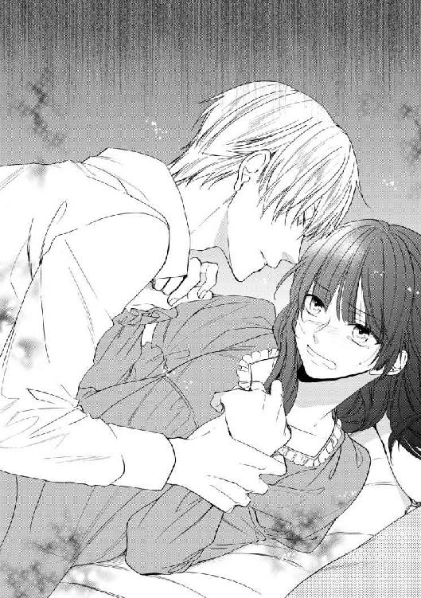
「え、な、何を」
「やだって......あんなにやだって、おれは......！ 何で......こんなの......嫌だって、誰も......。おれなんか、どうでもいいって......死んだっていいって......みんな......！」
空転する思考が、幾つもの記憶をばらばらと引っ張り出す。何の芸もできないグズを拾ったと怒鳴る座長の声、女の恰好をするたびに、誰もが小馬鹿にして囃し立てた。力の強い男たちは、すぐに彼を殴る。どんなに嫌がっても、誰も耳を貸してくれない。臆病で、非力で、弱虫だからだ――どんなに懸命に抵抗しても、あんなに簡単に組み伏せられて、正体を暴かれてしまうくらいに。
「もう嫌だ！ もう嫌なんだ！ どうしてこんなことばっかり......どうして......」
一体何を言おうとしているのか、自分でも解らない。頭のどこか冷静な部分が、泣き喚くなんてみっともない、と他人事のように嘲笑うが、一度堰を切って溢れ出したものを止めることはできなかった。できるのはただ、きつく歯を食いしばることだけだ。側にあった枕に顔を押し付けて、身体を震わせる嗚咽を押し殺す。
――泣いたって、駄目なんだ。
何も変わらない、何もできない。既に運命は決まってしまった。この上、情けない奴だと、他人に馬鹿にされたくない。
いつの間にか、青年は姿を消していた。ようやく涙だけは止まり、ニールは枕から顔を上げる。あの青年はどこへ行ったのだろう――人を呼びに行ったのだ。大公女を騙る偽者を捕らえて、牢に入れるために......。
そう思った途端、ガチャリと扉が音を立てる。ニールはびくっと身を竦ませた。もうやってきたのだ、屈強な兵士たちが彼を引きずって、どこか暗く冷たいところに――。
「............」
しかし、扉の向こうから現れたのは、あの青年一人だけだった。恐ろしげな兵士も、他の誰もいない。手に、小さな盆を持っている。寝台の上に固まったまま座っているニールの方へ歩いてくると、立ったまま、ほら、と何かを差し出した。
「少し落ち着いたなら、これでも飲め」
差し出されたのは、丈夫そうな陶器だ。中には、湯気を立てる液体がなみなみと入っている。王宮で何度か口にした茶というものに似ているが、微かに妙な匂いがする。花のような、薬のような、変な香りだ。
どうして、こんなものを飲めと言うのだろう。ニールは当惑したが、すぐその理由に思い至る。急かすように押し付けられた器を受け取ると、知らず手が震えた。
「あっこら、零すな。しっかり持っていないと......」
「どう、なるの？ 苦しい......？」
「どうって、熱いから火傷す......うん？ 何が苦しいって？」
「どのくらい、かかる......？ その......死ぬまで」
こうなるしかなかったのだ。最初から解っていた。王族を騙って、しかも国王の結婚相手になり済まして王宮に入り込んだ。こうしてそれが、当の国王にばれた以上、生命があるはずはない。
濃い色の液体の表面を覗き込む。首を斬られたり、晒しものにして刺し殺されたりするのでないのはありがたいが、毒で死ぬのはどういう感じなのだろう。できればすぐにこと切れて、長く苦しむのでなければいいが......。
「な......馬鹿！ 誰が毒なんか飲ませるか！」
しかしニールがそう言うと、相手はひどく驚いたようだ。驚愕に目を見開くと、怒りと呆れが半々の声を上げる。
「これはただの茶だ。少し薬草が入っているから、変な香りがするだけだ。人が死ぬようなものは入っていない。......飲んで、大人しく休んでいれば、気が楽になるから」
最後は何だか諭すように言われた。とっさに意図が理解できず、ニールはぽかんと相手を見上げたが、向こうはそれを、まだ毒を疑っているせいだと思ったらしい。青年はため息をつくと、ニールの手から器を取り上げ、自分で中身を一口飲んだ。
「ほら、何ともないだろう。心配しなくていい――誰も、おまえを殺したりしない」
「............」
「......私に毒見をさせた奴なんか、はじめてだぞ。いいから飲め」
再び手の中に戻された茶を、ニールは急いで飲んだ。積極的に飲みたかったわけではないが、青年が強制する目つきでじっと見つめてくるので、逆らうことができなかったのだ。
茶の味はよくなかった。吐き出すほどにまずいというわけではないが、舌に奇妙な苦みが残る。けれど、飲み込むと腹の中が温かくなって、その感触が心地良い。まだ止まらない嗚咽のせいで、時折手が震えたが、隣に腰掛けた青年が手を添えてくれる。
器の中身を飲み干して、ニールは思わず息をついた。身体から力が抜けて、手足が温かくなってくる。頭は依然ぼうっとしているが、それはここ数日の吐き気を伴うような不快なものではなく、奇妙な心地良さがあった。
ニールの背に枕を当てて、寝台に寄り掛からせて座らせると、青年もまた寝台に腰を下ろした。
「だから言っただろう、毒なんか入ってないって」
「う、うん。あの、あ......ありがとう」
ようやく正気を取り戻し、ニールはもつれる舌で何とか礼の言葉を言った。理由はよく解らないが、この青年は親切にしてくれているらしい。ついさっきまで、彼を力ずくで押さえつけて脅していた人間と同じとは思えない。
ニールの礼に、相手は微かに笑みを閃かせた。その表情が、これまで彼の顔に見たことのないもので、ニールは一瞬目を奪われる。思えばはじめて会ったときから、この国王陛下は常に不機嫌な顔しか見せなかったのだ。こんな風に笑えるとは知らなかった。
――これなら、あんまり、怖くない、かも......？
だが、今になってそう思うとは、何と皮肉なことだろう。彼の名目上の花嫁候補ではなく――彼に罪を問われる、今になって。
「幾つか、訊きたいことがある」
笑みを消して、青年が真顔でそう切り出してきても、ニールは表情を変えなかった。遠からず、そう言われると思っていた。けれど、話すことなどあるだろうか。自分が偽者の大公女で、後は死罪になるだろうということの他には、何も知らないままなのに。
しかし青年の質問は、ニールの想像しないものだった。
「――その怪我は、一体どうしたんだ」
「......えぁ？」
「その、腹のところ。ひどい痣になってる」
ああ、とニールはようやくそれを思い出した。忘れていられるほどに、よくなっていたからだ。人買いの男に殴られて数日の間は、息をするだけでじくじくと痛み続けたものだが、今はそれほどでもない。青黒く残った痣を押したりしなければ、痛みはない。
それにしても、と、ニールは呆気に取られて青年を見返した。この状況で、真っ先に訊くことがそれなのか。
「えっと......そんなことが、訊きてえの？ もっと他に、あるじゃん？ いろいろ......」
「他に？」
「その......おれが......男、だとか......」
恐る恐る言ってみる。まさか、今になってもばれていないということはあるまい。上半身だけとはいえ、服まで脱がされたのだし。
ニールの問いに、青年は眉を顰めた。何を言っているのか、という顔だ。
「そんな、見て解ったことを訊いてどうする。まさか、まだ隠しおおせているかもしれないとでも思っているのか？ 安心しろ、いくらおまえの身体が貧弱でも、服を脱げばさすがに女じゃないことくらいは解る」
「貧弱って言うな！ それ、慰めてるようで貶してる......あ、じゃなくて！ その......何で、とか......訊かなくていいのかよ」
「もちろん訊く。訊きたいことは、幾つかあると言っただろう。単に、順番に質問しただけだ」
「順番？」
「怪我や病気のことが一番だ。後回しにして手当てが遅れたら、取り返しがつかないことになる」
「............」
まあ、それは今すぐどうにかなるって怪我じゃなさそうだが、と、呟く青年を、ニールはびっくりして見つめた。いよいよ、この青年は変わっている。
これまで、こんなことを言う人物には会ったことがない。怪我をするのは運が悪いから、病気になるのは弱いから――どちらにしろ、生き延びる力が欠けているのが悪いのだ。彼の生きてきた世界の人々は、皆当たり前のようにそう言っていた。
だから、弱いのは嫌だ。それは悪であり、恥でもある。他人に殴られたなどということを、知られるわけにはいかない。まして、抵抗もできずに言いなりになったなんて、絶対に言えるはずがない。
絶対に――けれど今、ニールはふと、それを告白してみたい衝動に駆られる。何もかも、洗いざらい喋ってしまいたいと思った。何だかもう、疲れてしまった――恐ろしい目に遭うのも、屈辱に耐えるのも、自分を恥じるのも嘘をつき続けるのも、もう何もかも、たくさんだ。
「これは......殴られた。人買いに。言うこと聞けって」
「......人買い？」
「おれみたいな見た目の奴を、探したって言ってた。フィルネリア大公女の代わりにするためには、髪と目の色は同じじゃないといけないからって」
一度口を切ってしまうと、続く言葉は驚くほどすんなり出てきた。ぼんやりしている頭から懸命に記憶を引き出して、ニールはこれまでのことを話す。元は旅の一座で暮らしていたこと、突然見知らぬ男たちのところへ連れて行かれたこと、リュセニアの大公女の代役としてアーセルンの国王へ嫁げと命じられたこと。彼らが怖くて、逃げ出せなくて、今夜まで必死に大公女の振りをしていたこと......。
ニールが説明している間、青年は時折相づちを打って先を促す他は、ほとんど黙って耳を傾けていた。やがて、一通り話が終わってしまうと、考え込む表情で呟く。
「......身代わりで結婚、か。本物の大公女はどうしたんだ？」
「解んねえ。詮索するな、って言われた......」
身代わりを立てるからには、何か彼女の身に不都合なことが起きたのだろうと、想像はつく。とはいえ、その身代わりが男であることを考えれば、リュセニア側も実際の結婚まで代理で進めようとは思っていなかったはずだ。どこかの時点で、本物の大公女が現れるに違いない。
ということは、ニールに期待されている役割は、当面、彼女の出番までの時間を稼ぐこと、なのだろう。国同士の結婚に際して、花嫁を送り出す側の国に求められることの中には、予め取り決められた手続き通りに、花嫁を花婿の国へ引き渡すことも含まれる。もし、本物の大公女の身に何かあって、アーセルン側の要求を満たせないとなれば、これを理由に一転、両国の関係がこじれることも考えられないことではない。
「つまり、どうあっても、この縁談がまとまってほしいと思っている奴の仕業ということか。......しかし正直、リュセニアがそれほどこの話に乗り気とは思えないんだがな」
「え、どうして」
「こちらにばかり、いい顔をしているわけにはいかないからだ。リュセニアの向こうにはバランがある」
北の大国バラン王国は、リュセニア大公国のすぐ北に位置している。バラン王国と、やはり大国のアーセルンに挟まれて、リュセニアは常に双方と等しく距離を保つことを国是としてきた。どちらかに肩入れすれば、どちらかに攻められる。そうでなくとも、大国に呑み込まれれば、リュセニアのような小国が現状の独立を保ち続けるのは難しい。
そんな考えのリュセニアが、大公女をアーセルン国王に嫁がせることにしたのは、ひとえにアーセルン側からの圧力に屈したからだ。
「この話を進めたのは、グアド......ウォルブラッド公爵だ。あの男なら......目的のためには、手段を選ばないだろう」
ウォルブラッド公爵――先の摂政公。そういえば、とニールは思い出した。はじめて彼がこの王宮に着いたとき、国王は彼とこの結婚のことについて言い争っていたはずだ。話に乗り気でない、むしろ拒否する構えの国王に、公爵は多少強引に、この結婚を受け入れるべきだと説いていた。
「あのおっさん......ええと、公爵が、一枚噛んでるってことか？ 偽者を使ってでも、結婚に漕ぎつけたいって」
青年は答えなかった。はっとニールを見返したが、すぐさま、何かの考えを胸中に折り畳むように、その表情を消した。代わりに、別のことを尋ねてくる。
「その男たちに、見覚えはなかったか？ どこの誰か、解るような手がかりは」
「男たち？」
「おまえをさらって、大公女に仕立て上げた連中だ」
見覚えなどあるわけがない。彼らは顔を隠していたのだ。衣装も、ボロではないが豪奢というのでもない、目立った特徴のあるものではなかった。手がかりなんて――。
「――――！」
しかしそう思った瞬間、脳裏に閃く光景がある。喉を握り潰される感覚が、まざまざと蘇ってきた。暗がりに紛れて襲いかかってくる、正体の知れない影。銀の刃を突きつけて、凍るような響きの押し殺した声が告げたのだ。
――いつでも、おまえを見ている。
「おい、どうした。大丈夫か？」
突然、喉元に手をやって身体を強張らせたニールに、青年は怪訝な顔をした。落ち着かせるような仕草で腕に触れられて、ニールは自分が震えていることに気付いたが、止められるものでもない。
「い......いるんだ、ここに......」
「何だって？」
「さ、さっき......あんたが、来る前」
顔は見えなかった。声も小さすぎて、あのときの男と同じだったかどうかは解らない。しかし一味であることは間違いない――ニールが偽者の大公女だと知っている者が、確かにこの城の中にいる。
一旦は治まっていたはずの動悸が、再び忙しなく音を立てる。背筋に冷たい汗が滲むのが解った。王宮の警備さえもかいくぐって、奴らはここにも入り込んできた。どこからでも彼を殺しにくる。今、こうしている間にもどこかに潜んでいて、この会話を聞いているだろう。どうしよう、何もかも話してしまった......！
「――おい！ あー......おまえ！」
鋭い声と同時に、軽く身体を揺さぶられて、ニールは我に返った。彼の両肩に手をかけて、瞳を覗き込んできた青年は、ニールがはっきりと見返してきたことを確かめると小さく息をついて、名前は、と問うた。
「え？」
「そういえば訊いてなかった。おまえ、名前は？」
『フィルネリア』は違うんだろう、と尋ねられ、ニールは一瞬口ごもる。自分の名前を明らかにするのは心許なかった。彼がここにいるのは、『フィルネリア大公女』だからだ。大公女の名を名乗れないのは、戦場で鎧を失ったようなものだ。
しかし今となっては、彼に隠しても仕方がない。
「......ニール」
「よし、ニール。今日はここまでだ。他のことは明日にするから――だからもう、寝ていい」
断固とした口調は、許可というよりは、唐突な命令に聞こえる。ニールは目を瞬いた。どうしていきなりそんなことを言われるのか、意味が解らない。
「さっきから、だいぶ様子がおかしいぞ。自分で気付かないのか？ ......具合がよくないってことを忘れてたのは私が悪かったが、おまえもよくないならよくないとはっきり言え。これ以上悪化させて、また私のせいにされても困るからな」
「あんたのせい......？」
「......おまえの世話につけた侍女らが、言いに来たんだ。『大公女殿下』が......自分は王妃にふさわしくないとひどくふさぎこんで、食事も取れないようだと」
今夜の夕食時の話が、まさか国王の下まで届いていたとは。しかし侍女たちは大いに勘違いをしている。別に、王妃になどなりたいわけではない、むしろ絶対に回避したいと悩んでいるくらいなのに......と思った瞬間、ニールはようやく思い出した。彼女たちに勘違いさせておいたのは自分だ。
と同時に、もう一つの事情にも思い至る。――目の前の青年と、ここからそれほど離れていない廊下で行き合った理由。
「もしかして......それでここまで来たのか？」
――あなたには、このまま国へ帰ってもらいたい。
はじめての対面で、『フィルネリア公女』の『夫』となる予定の青年は、開口一番そう言ったものだった。内心ほっとした偽大公女のニールはともかく、深窓の姫君ならさぞ傷つくだろう。それこそ、衝撃のあまり体調を崩すくらいに。
「別に、そういうわけじゃない」
ニールの問いに、青年は怒ったように答えた。
「あれは、グアドが勝手に話を進めるのが気に入らなかっただけだ。大公女がどうだというつもりで言ったんじゃない。その場にいて聞いていれば解るだろうに、いなかった者が勝手に解釈して文句を言ってくるのだから始末に負えない。ただ......まあ、何か誤解を招いたなら、それはお互いためにならないと」
「やっぱ気にしてんじゃん......」
「うるさい。おまえこそ、どういうつもりなんだ。偽者の大公女なんだから、私に結婚を拒否されたところで、痛くもかゆくもないだろう。大公女になりきって演じるのが肝心なのは解るが、身体を壊してみせるまでするのはやりすぎだぞ。おかげですっかり......」
「そ、そんな演技なんかしてねえし。ただ......眠れなくて......」
目の奥に、鈍い痛みが続いている。ニールは目を閉じて、ぶるっと身体を震わせた。長く目覚めている頭は痛くて熱いのに、他の部分は冷たい。自分の身体が、ばらばら勝手に動いているような感覚。
「だって......寝てる間に、誰か、来たらさ......」
「侍女たちは、特別な事情がない限り、寝室の外で控えているものだ。おまえが呼ばない限りは、無断で入ってきたりはしない」
「それは......そうかも、だけど......。でも......他に、忍び込んでくる奴がいたら」
「王宮は、常に警護されている。夜通し衛兵が、あらゆるところに交代で立つし、この辺りは近衛騎士の巡回もある。忍び込んでくる者などいるはずがない」
「でも、来たじゃないか！」
闇の中に閃いた、刃の禍々しい銀色。喉をきつく絞めあげる、無慈悲な手。あの男は、闇から現れたのだ。闇そのものが固まって、人の形を取るならば、どんな見張りも鍵も、何の備えになるだろう。暗闇はどこにでもある、どこからでも忍び寄ってくる、今、この瞬間にも――。
「ニール」
名を呼ぶ声と同時に、手に手が触れる。はっとして目の前に意識を集中すると、藍色の瞳が見えた。注意深くこちらを観察する目――しかし、それは決して冷たいものではない。
「......そんなに疑われていると知ったら、王宮警備の担当者はさぞ憤慨するだろうな」
やがて、ため息をついて青年は言った。
「だが、仕方がない。この国で、一番厳重な警備をしてやる――それなら、眠れるか？」
「え？ ......うわっ！」
どういうことか、訊き返す暇はなかった。突然、ぐいと身体を引き寄せられる。背に腕を回されて、気が付けば、ニールは寄り掛かるようにして青年に抱きしめられていた。
「！ ちょ、何すんだよ......！」
「何って、おまえが安全だと信じられるようにしてやっているだけだ。この国で、私以上に厳重に警備されている対象があるわけないだろう」
さも当然のように言われ、ニールは一瞬面食らう。それはそうだ、この青年は国王なのだ。大国アーセルンの統治者、誰もが彼の前に跪く――本来なら、ニールが触れるどころか、遠目に見ることも叶わない相手。
そのことを、忘れていたつもりはない。けれど今それを意識すると、どうにも戸惑わざるを得なかった。『偉い人』のはずなのに、青年は少しもそういう態度を取らない。一座の座長のように、鞭で叩いたりしない。力自慢の男たちのように殴ったりも、舞台に金を払う裕福な人々のように、蔑んだり憐れんだりもしない。
どうしたらいいんだろう、とニールは思った。本当に、こんな人間と出会うのははじめてだ。どう振舞っていいのか、まるで見当がつかない。
「眠れ」
相手の答えは簡潔だった。ニールの背中を軽く叩いて、青年は低く呟く。
「少しの間、目を閉じてじっとしていろ。すぐに眠れる。おまえは疲れ果てていて、眠れないと思い込んでいるだけだ」
言われた通りにしてみると、世界がぐらぐらと揺れている感じがした。たまらず呻き声を漏らして、それでも懸命にニールは答える。
「うぅ......うん。やってみ......や、やってみます、陛下」
「おまえそれ、今やっと思い出したんだな」
呆れた言葉は、しかし咎める響きではなかった。堪え切れなかったらしく、小さく笑い声を上げた青年は、やがて呟くように言った。
「ライオール」
「え......？」
「まさか、私の名も知らないで来たってことはないだろうな？ 『陛下』じゃなくて、そう呼んでいい。そっちの方が、少しは婚約者らしいだろう......これからしばらくの間、それらしくしてなきゃいけないみたいだし」
その言葉が何を意味するか、そのときのニールにはよく解らなかった。ぼんやりする意識の中で、ただ闇雲に口を動かす。
「う......ん......ライ......？」
「......ちょっと待て。勝手に省略して呼んでいいとは言ってないぞ」
不服そうな声が、辛うじて意識できた最後のものだ。揺れがいよいよ激しくなる。寝台から滑り落ちそうな感覚に襲われ、思わず目の前の支えにぎゅっと抱きついて、ニールは意識を手放した。
目が覚めたとき、既に辺りは明るかった。窓にはカーテンがかかったままだが、合間から漏れる光は、見慣れないほど強い。
――朝......？ いや、昼......昼!?
焦燥感に駆られて、ニールはがばと跳ね起きる。しまった、寝過ごした。すっかり、ぐっすり寝入ってしまったらしい。こんなことは、ここへ来てから、いやその前にも滅多になかったのに。旅の一座では、朝早くから誰かに蹴飛ばされて寝坊どころではなかったし、そこからさらわれて以降は、常に周囲の動向が気になって、神経を尖らせていたものだ。
しかし今、室内は静かだった。誰もいない、気配もない――昨夜は確かに側にいてくれたはずの相手さえも。
――......夢？
意識がはっきりしてくるにつれ、記憶も鮮明になってくる。が、はっきりと思い出せば思い出すほど、その記憶は現実味を欠いてくる。本当に、彼はここにいたのだろうか――アーセルン国王ライオール・ヴァランシアその人が。
――夢......だったら、いいんだけど......。
蘇りついでに、改めて昨夜の自分の振舞いも思い出してしまい、ニールは思わず頭を抱えた。実のところ、今となっては他人の記憶のようにさえ思えるのだが、多分そんな都合のいいことはないだろう。確かに、自分でしたことだ。追い詰められて混乱して、正常な判断ができなくなっていたにしても。
――あんな......泣いたりして、みっともなさすぎる......。
普段は、決してそんなことはしないのに――だがあの瞬間は、もう本当に終わりだと思ったのだ。わけの解らないことに巻き込まれて、わけの解らないまま死ぬしかないのだと思った。いや、それでなくとも、女の恰好をして女のように振舞っているということが知られただけでも、恥ずかしくていたたまれなくて死ねそうな気分になったものだ。
だが、ライオールはどうやら彼を殺すつもりはないらしい。もしそのつもりなら、ニールが眠り込んでいる間に、縛り上げるなり牢に送るなりしているだろう。毒ではなく、温かい飲み物をくれた。彼が眠ってしまうまで側にいて、危険なことはないと言ってくれた。
――どういうつもりなんだ？
とにかく、彼に会わなければならない。正体を知られてしまった以上、ニールの身の上は彼の心づもりにかかっているのだ。昨日は動転していて、何を言われてもまともには考えられなかっただろうが、今ならあんな醜態は晒さずに済むだろう。ちゃんと眠ったおかげか、気分もいい。
寝台を下りて、ニールは身支度を整えることにした。国王に会うためにはどうしたらいいのかは解らなかったが、とりあえず動き出さなければならない。それにしても、こんなに日が高くなるまで、どうして誰も起こしには来なかったのだろう......。
だが、ニールがそう考えるのを待っていたかのような間合いで、寝室の扉が叩かれる。ぎょっとしたニールが返事をする間もあらばこそ、扉が勢いよく開けられて、侍女たちが姿を現した。
「まあ、大公女殿下、お目覚めでございますね！ おはようございます！ ご気分はいかがですか？」
「あ、お、おはようございます......？」
勢いよく挨拶をされて、ニールはついたじろいで応じてしまった。寝室に踏み込んできた侍女たちは、皆が皆、一様に明るい表情をしていたからだ。単に快活というのではない、何か途方もなくいいことがあって、笑みを隠しきれないという様子だ。
「な、何......何かあった......んですか」
「あら、そんな！ お許しくださいませ、決してご無礼を働くつもりではございません。ですが......私どもは、大公女殿下付きの侍女でございます。あなた様のお幸せが、何より嬉しいのでございます」
「し、幸せ......？」
話が見えない。困惑するニールを、侍女は奇妙な目つきで見やった。わずかに声を抑えて、内緒話でもするように言う。
「――朝方、陛下がここからお帰りになるときに、仰っていかれたのですよ。大公女殿下はひどくお疲れだから、目を覚まされるまでそっとしておくように、と。ですが、そろそろお目覚めにならないと、逆にお身体によろしくないかと思いまして、こうしてお伺いしたのです」
では、ライオールは朝方までここにいたのか。ニールの記憶が途切れたのは、まだ夜中のうちだったが......多分、それからもずっと、彼の面倒を見てくれていたのだろう。気恥ずかしさ九割、しかし残りの一割はそれとは違う、何とも言葉にならない感情が胸に湧いて、ニールはわけもなく頭を掻いたが、しかし侍女の言葉はそこで終わりではなかった。
「ようございましたね。これで、陛下の御心がどこにあるか、はっきりしましたわ。もし陛下が、大公女殿下をお気に召さずに、お国へ帰すつもりであれば、こんなことはなさいませんもの――本気で妻とする覚悟がなければ、敢えて婚儀の前に、高貴の姫を手折ったりはなさらないでしょう」
「............」
一瞬、ニールは何を言われているのか解らなかった。だが、女たちのにこやかな表情を輝かせているのが喜びだけではなく、幾許かの好奇心が含まれていると気付いたとき、思わず声を上げそうになる。まさか――まさか！
「なっ、そっ、そんなことはしてません！」
「ああ、申し訳ございません。つまり私たちは、とやかく申し上げるつもりは一切ございませんとお伝えしたかったのです。婚礼の儀式や手順は、それは大切ですけれど、何より大切なのは、陛下と殿下が仲良くなさって、早くお世継ぎを儲けていただくことですもの。国中、それを望まぬ者はおりません」
「だから、違うって!!」
自分でもはっきりとそれと解るほど顔を真っ赤にして、ニールは必死で反論したが、女たちは笑みを崩す様子もない。「何もかもちゃんと解っておりますよ」と言わんばかりの慈愛と共感を示されて、ニールは絶望的な気分になった。何を言っても、聞く耳は持ってくれなそうだ。
――世継ぎって......子供なんか産めるわけねえだろ！
だが、そんなことを大声で言うわけにもいかない。彼はまだ、リュセニアの大公女なのだ。この先どうなるかは解らないにしても、今ここで、真実をぶちまけるべきではない。ニールにできるのはただ、羞恥のあまりこの場から走り去りたくなる衝動を、何とか抑え込むことだけだった。
「――ですから、殿下。これで、もうお気遣いは無用です」
しかし、すぐにその衝動も抑えきれなくなる。笑顔を貼りつけたまま、そう言う侍女に、ニールは目を瞬いた。お気遣い、とは何のことか。
「殿下は間違いなく、我が国の王妃となられます。もう私たちにも、ご遠慮いただくことはないのですよ」
「今度こそ、私たちに務めを果たさせてくださいませ。王妃陛下となられる方は、誰よりも格調高く、誰もが仰ぎ見るお姿でなくてはなりません――そのお手伝いをすることこそ、私たちの誉れなのですわ」
じり、と距離を詰められて、ニールはようやく彼女たちの意図を察した。よく見れば、皆それぞれ手に何かを抱えている。豪奢だが、一人では脱ぎ着できないドレスに、裸にならなければ着けられない胴衣、下穿き、脚を露わにして付ける靴下止め......これまで彼が全力で避けてきたものの数々。
当たり前だ、こんなものを彼女たちの手で着せつけられたら、一発で男だとばれる。これまでは、王妃となると決まったわけではないのだから、彼女たちに世話をしてもらう必要はない、とか、肌を見せるのは夫となる者にだけ、とか、適当な言い訳で凌いできたが、この様子ではもうそれも通じなさそうだ。何せ彼女たちに言わせれば、彼は国王陛下と朝まで『仲良く』過ごしてしまったのだから。
「ちょ、待って......や、止め......止めてください！ わたしは今まで通り、一人で着替えを......」
「それでは、どうしてもこういったドレスは着られませんでしょう。やはり人の手がなくては」
「だ、だから、要らないって......！」
「そのようなことを仰ってはいけませんわ。――せっかくそのように美しくいらっしゃるのに、着飾らせてもいただけないなんて、私たちがどれほど歯噛みしたことか！」
「何も失礼なことは致しません。どうぞ楽にされて、私どもにお任せください」
――冗談じゃない！
にじり寄ってくる彼女たちの間に、ニールは必死で逃げ場を探した。とにかく、彼女たちの手から逃れて、寝室を出なければならない。衣装部屋まで辿り着ければ、そこに籠って彼女たちをやり過ごせるだろう。
「さあ、こちらへいらしてくださいませ」
「嫌だ！」
答えと同時に、侍女たちの隙をついて駆け出す。突然の動きに反応できない女たちの間をすり抜けて、ニールは扉に手を伸ばした。
「――申し上げます」
だが、彼の手がかかる前に、扉が勝手に開く。新たに現れた侍女に、ニールは舌打ちしかけたが、続く彼女の言葉に、その舌打ちを呑み込んだ。新たな侍女はこの上なく恭しく、来訪者を告げたのだ。
「大公女殿下――国王陛下がお越しです。殿下にお目にかかりたいと」
息を呑んだのは、ニールではなかった。少し慌てたような彼女の言葉が終わらないうちに、当の本人が現れたのだ。誰かが囁くような悲鳴を上げる。
「陛下......！」
室内の返事を待つこともなく、無遠慮に寝室に足を踏み入れた彼を、しかし責める者は一人もなかった。室内の侍女たちは、一斉にそれまでの動きを止めて、皆、深々と頭を垂れる。
本当はそれに倣うべきだったのかもしれないが、しかしニールは構わなかった。最初の驚きからいち早く立ち直ると、急いで来訪者の背後に回り込む。
「？ 何をやってるんだ」
「ちょうど良かった！ ライ......陛下、この人たちに言ってやって！ お......わたしは一人で着替えられるからって！」
「着替え？」
「まあ、大公女殿下！ 陛下にそのような仰り方はいけません」
すかさず、侍女の注意が飛ぶ。ニールは肩を竦めると、急いで言い直した。
「ええ......？ えっと、陛下においてはご機嫌麗しく、願わくはご慈悲を！」
「いや、それも何かおかしいだろう」
何故だ、精一杯下手に出ているのに。困惑するニールを、しかし構わず、ライオールは侍女たちに視線を転じた。どういうことかと問いかける目で見つめられ、侍女の一人が恐縮しつつ答える。
「大公女殿下に、ふさわしい姿にお召し替えをお願いしているのです。ですが、殿下が......」
「い、今まで通りで構わないじゃないですか。そんな......は、裸になって締め上げるような下着なんて！」
「苦しいのがお嫌なようでしたら、強く締めたりは致しませんわ。とにかく、これはお一人で身に着けられるものではないのですから、そこはお任せいただかないと」
「嫌だよ！」
「殿下！」
ニールは縋るように、ライオールを見上げた。とにかく、彼女たちを何とかしてほしい。このままでは、寄って集って服を剥ぎ取られかねない。
視線で訴えられて、ライオールはようやく、ニールの窮地の事情を悟ったようだった。背に隠れたニールの矢面に立つ形で、侍女たちに向き直る。
「......服くらい、好きにさせておけばいい。こんなに嫌だと言っているんだから」
「恐れながら陛下、王宮のしきたりというものがございます。私どもも、殿下がお部屋でお寛ぎのときにまで、形式ばった恰好をなさるよう申し上げるつもりはございませんが、たとえば貴賓の方々に会うときにまで胴衣を拒否されるようでは、殿下ご自身のためになりません。陛下のお心遣いは素晴らしいものと存じますが、アーセルンの王宮に嫁いで、陛下の伴侶となられる以上、大公女殿下には常にお立場にふさわしいお振舞いを心がけていただかなければ」
――貴賓って何だよ、そんなの会わねえし、いいんだよ！
滔々と道理を述べる侍女の言に、ニールは心中密かに毒づく。が、どういうわけかライオールは、その言に何か思うところがあったようだ。一笑に付すことはなく、どころか真面目な顔になると、発言した侍女に答える。
「なるほど、それは、おまえの言う通りだ。誰もが、このやり方に従わなければならない――王宮にいる限り、誰であろうと」
――うわ、何言ってくれてんだ！ 止めろよ！
「それで、この大公女殿下は、どういう恰好をすればいい？」
愕然としているニールには目も向けないまま、ライオールは続けて尋ねる。だが一方で、問われた侍女の方も災難だった。男性に、しかも国王相手に、貴婦人の衣装の説明をさせられるのだ。正式なドレスや上衣の型くらいならまだしも、肌に身につける胴衣や靴下、下着のことについて口にさせられるなど、経験を重ねた侍女でも滅多にないはずだ。
それでも、陛下直々の御下問とあれば答えないわけにはいかない。気まずそうな様子を懸命に押し殺して、細かく説明した侍女の言葉を、ライオールは黙って聞いていたが、やがてそれが終わると、一つ頷いて言った。
「解った。――それならできそうだ」
「はい？」
「その厄介な衣装を着るために必要な手は、つまるところ、紐を結んだりベルトをきつく締めたりするくらいの技量があればいいんだろう。だったら、私にもできる――彼女にドレスを着せつけるのは、私が引き受けよう」
「はあ!?」
「陛下！ それは、陛下がそのようなことをなさっては......」
声を上げたのは、ニールと侍女がほとんど同時だ。しかし、悲鳴めいたその声に、ライオールは少しも動じなかった。それきり絶句してしまったニールを引き寄せ、更に何か言いかける侍女を遮るように言葉を続ける。
「おまえたちの献身に不満があるわけじゃない。しかしおまえたちは、大公女殿下がこうも嫌がることを、無理に押し付けることはできない。彼女はこの国の王妃となる身だ」
「それは......はい、陛下」
「大公女殿下の許しなく、その身に触れることは許さない。どんな理由があっても――この者を見て、触れていいのは私だけだ」
「............」
「以後、心せよ」
侍女たちは一斉に腰をかがめ、従順にその命を受け入れたようだ。女たちの圧力から解放されたことにはほっとしたものの、しかしニールは完全に安堵するというわけにはいかなかった。わずかに面を伏せた侍女たちの目が、抑えきれない好奇心に輝くのを見てしまったからだ――ちょうど先刻、寝室の扉を開けて、昨夜の主たちの『仲の良い』過ごし方に言及したときと同じ。
――この者を見て、触れていいのは......。
侍女たちが何を考えたか、即座に想像がついてしまい、ニールは大声で喚きたくなった。だが、もちろんそんなことはできない――リュセニアの大公女殿下は実は男で、彼女たちが思うようなことは決して起こり得るはずがないのだと主張することなど、できるはずがない。
内心の衝動に耐えて沈黙を守りながら、ニールは恨みがましくライオールを見上げた。何てことを言ってくれるのだ、彼は侍女たちの反応に気付いているのだろうか。
侍女たちを、衣装だけ部屋に残して出て行かせると、ライオールはようやくニールを見た。その表情には、ニールの感じているようないたたまれなさや羞恥の気色はまるでない。どころか、興味深そうに彼の姿を上から下まで眺めると、感心したように言った。
「ふうん、女の恰好をしているのは、なかなか大変なんだな。よく、あれだけ取り巻かれていてばれないな」
「ひっ、必死なんだよこっちは！」
「だから、うまく追い払ってやっただろう」
何だか得意げに言われた。ニールは胡乱な目つきで、面白そうな顔をしているライオールを睨む。追い払ってくれたのは確かだし、ありがたいとは思っているが、『うまく』かどうかは議論の余地がありはしないか。
「......何で、あんなこと言うんだよ。ますます誤解されたじゃん！」
「あんなこと？」
「お、おれに触れていいのは自分だけ、みたいに言っただろ。あれはさ......ああいうのは......良くねえだろ」
「何か問題でもあるのか？」
「大ありだよ！ おれたち、そういう関係だと思われるじゃん、本気で！」
「そういう関係って？」
「だから......だから、そういう......」
言葉に詰まって、ニールは顔を赤らめた。侍女たちが何を想像したかは十分に理解できているが、それを口に出せるかはまた別問題だ。
「あー、だからその......夫婦、みたいな感じだって......。おれもおまえも、男なのに！」
懸命に無難な表現を探したが、やはり恥ずかしいものは恥ずかしい。何が悲しくて、同性相手にそんなことを勘ぐられなければならないのか。ニールは心底げんなりした。可愛い娘相手にそういう噂を立てられるのなら、恥ずかしいのは同じにしても、まだ耐えられるのに。
「だって、おまえは『女』じゃないか」
だが、ライオールは表情を変えはしなかった。ニールの動揺に、どうということはなさそうな様子で小首を傾げる。
「少なくとも、侍女たちはそう思ってる。それで、おまえは私の婚約者としてここにいる。まあ、夫婦みたいなもので間違ってはいない」
「間違ってるよ！ 本当はそんなんじゃ......」
「――本当のことを知らない者のことを、気にすることはない。彼女たちが何を思おうと、本当のことではないんだから」
至極冷静な口調で、ライオールは言った。まだ不満そうな顔をしているニールを見やって、逆に不思議そうに尋ねてくる。
「大体、どうして侍女の言うことなんか、そんなに気にするんだ？ さっきのことだってそうだ。おまえが一言うるさいと言って、彼女たちを追い払えば、連中は必ずそれに従っただろうに。人は馬と同じだ――正しく命令しなければ、正しくは動かないものだ。放って好きにさせていたら、何の役にも立たない」
当たり前のように、ライオールはそう言った。だが、ニールの方はとても、それを当たり前と受け取ることはできない。その冷静さにどきりとするのは、彼が馬と同じ側の人間だからだ。命令されて、奉仕を要求される方の人間だからだ。
だが、ライオールはもちろんそうではない。何気ない言い方に、彼我の違いをまざまざと感じて、ニールは返す言葉を失う。彼は王だ、彼にとってはあらゆる人間が、彼の意志に従うものなのだ。そう考えることに、まるで疑問など覚えないくらいに。
彼の冷静さは、冷酷さと根を同じくするものだ。ライオールにとって、侍女などは同じ人間ではない。同じ立場に立ってはいないから、何と思われても平然と無視できる。家畜に憎まれていることを気にする人間がほとんどいないように、彼もまた、使用人の内心など気にも留めない。
こういう人間と、どう相対せばいいのだろう。目の前の国王が急に恐ろしく思えてきて、ニールは密かに身構えたが、しかし続くライオールの反応には更に困惑することになった。表情を硬くした相手に気付いたのかどうか、彼はわずかに眉を顰めると、手を伸ばしてニールの頬に触れたのだ。
「............っ!? 何」
「いや、熱でもあるのかと思って。まだ、昨日みたいに具合が悪いのか？」
大丈夫か、と心配そうに尋ねられ、ニールは驚いて相手を見返した。どうして彼はそんなことを訊くのか。たった今、侍女たちの存在を切り捨てた同じ人間が、何故、ニールの身など気にかけるのだろう。彼女たちと同じ、いや、大公女を騙った素性の知れない偽者など、彼女たちよりもっと、彼にとって意味のない人間ではないか。
けれど実際に目の前にいるライオールには、何か含むところなどはなさそうだ。そういえば昨日もそうだった、と、ニールは改めて思い返した。彼が男で、大公女の偽者だと解っても、すぐに牢屋に叩き込んだりはしなかった。何よりもまず、こちらの身を心配してくれて――そんな人間ははじめてだとも思った。優しい人間だと。
――......よく、解んねえ。
優しいのか、冷たいのか。傲岸なのか親切なのか――信じていいのか、悪いのか。
「......いや、どこも悪くねえよ。もう平気」
だがとりあえず、彼と話してみないことにははじまらない。答えて向き直ったニールに、ライオールはちらりと満足そうな笑みを見せると、それはよかった、と言った。
「なら、話を聞かせてもらおうか」
「話？」
「昨日の話の続きだ。私はまだ、全部を聞いていないんだ。昨日の夜、おまえは言っていたな――おまえを脅して、こんなことをさせた人間が、この王宮の中にいると」
瞬間、ニールの脳裏に、あの光景が浮かび上がる。闇の中から現れた男、彼の喉元に突きつけられた刃の冷たさ、彼を脅した囁きの、酷薄な掠れ方まで。
とっさにニールが顔色を変えたことに気付いたのか、ライオールは彼を促すと、寝台の端に座らせた。彼自身は、窓際に置かれていた椅子を一脚持ってきて、ニールの正面に腰を下ろす。落ち着いて耳を傾けようという態勢だ。
見つめる、というよりは、見守るに近い目を向けられて、ニールは記憶から恐怖を追い払った。
「昨日......ライがおれと会うすぐ前に、会ったんだ。おれが偽者だってばれるようなことをしたら......用済みにするって」
会ったと言うよりは、遭遇したとか、待ち伏せられていたという方が正しい気がするが。あの男が――確かに男だった――首謀者かどうかはともかく、彼が偽者の大公女であることを知っていたのは事実だ。
「......そいつは、おまえをさらって、偽者をやれと言った奴と同じか？」
「わ、解んねえ。どっちのときも顔は見えなかったし......声も、男の声ってことしか。すごく訛ってるとか、そんなこともなかった」
大陸では大きく分けて四つの言語が使われているが、アーセルンとリュセニアに関しては、どちらも同じ古王国起源だ。もちろん地方によっては、かなり発音が違ってはいるが、少なくとも教育を受けた層では、どちらの国でもそれほど話し方に大きな違いはない。古王国語は発音に厳格で、そうした教育の名残が現在まで引き継がれているのだ。
ということは、あの男は身分の高い、とまでは言わずとも、相応の地位にある人間らしい、とニールは遅まきながら気が付いた。といっても、話し言葉を鍛えるのは何も上流階級の特権ではない。ニールも舞台上で高貴な姫などを演じるために、ある程度は身につけさせられたくらいだから、必ずしもその点だけで身分があると判断できるわけではない。
「――でも、そいつは、この王宮に入り込むことができたんだ」
だが、ライオールの指摘を考え合わせれば、相手はこの王宮に関係のある人物に間違いなさそうだ。でなければ、夜の王宮で明かりも持たずに、あれほど素早く姿を眩ませるはずがない。
「王宮って、いつも、どのくらいの人が出入りできんの？」
「昼間は、誰でも入ろうと思えば入れる。もちろん門衛に、名と用件を質されるが。門衛がふさわしくないと判断すれば追い返されるし、中に入れるときには必ず記録を残す。昨日の出入りももちろん控えられていたが......ざっと見たところ、不審な名前はなかった」
「もう調べたの？」
そういえば、ライオールは、朝方にはニールの寝室を後にしたと聞いた。夜明け前から活動を開始する、市井の労働者ならともかく、飢えて金を求めているでもない国王陛下にしては、随分と勤勉なことだとしか思わなかったが、もしかしたら常の仕事の他に、そういうことを調べるためだったのかもしれない。
そう思うと、何もせずに眠りこけていた自分が何となく恥ずかしい。ニールは気まずく身動ぎしたが、ライオールは彼を責めたりはしなかった。
「朝のうちに、門衛の当番記録を見てみた。夜間は、よほど緊急のことでもない限り門は開けないことになっていて、昨夜は開けた記録がない。つまり、昨夜おまえを脅すことができた人間は......当たり前のように、王宮の中にいられる人間に限られる」
「外から、こっそり入ってきたかもしれないぜ。泥棒は、家主に挨拶もせず忍び込んでくるものだろ」
だが言いながら、ニールもそれが意味のない仮定であることには気が付いていた。完全に外部からの賊であったなら、ニールを待ち伏せなどできない。この巨大な建物の中で、リュセニアの大公女殿下の滞在する客室を正確に突き止め、夜闇に紛れているとはいえ、いつ誰の目に留まるか解らない状況でニールとの接触を待ち続けるなどということが、外部の人間だけでできるはずがない。あの男は、王宮に知悉した人間、あるいは知悉した人間に手引きされていたはずだ。
となると、状況は少しはっきりしてくる。
「ライはさ......偽者を仕立てたのは、リュセニアの仕業じゃないって思ってんの？」
これまでニールは、自分を偽大公女としてアーセルンに送り込んだのは、リュセニア大公国の陰謀だと何となく思っていた。大公女の身代わりを立てたいというのは、大公女を嫁がせる側の都合であるし、道中彼につけられた教育係たちも、随分とリュセニアの宮廷の事情に通じているようだった。小国リュセニアの姫君が、大国アーセルンの王妃になるのだから、当然リュセニアにとって、より利のある結婚に違いないと自然に考えていた。
「そうじゃない。前にも言ったが、リュセニアはこの話にそれほど乗り気ではなかったはずだ。もし......話を持って行ったのがグアドでなかったら、体よく断っただろう」
「ええと......ウォルブラッド公爵、だっけ」
だが、大国アーセルン随一の権臣の強い意向を、断りおおせることはできなかった。先の摂政、長くこの国の政治を司ってきた男には、未だに目には見えない権威が備わっているのだ。
「えーでも、セッショウってつまり、王様の代わりに王様の仕事をする人間なんだろ。もう今は、ライが王様やってるんだから、何の力もないんじゃねえの」
「グアドがこの縁談を取りつけたときは、私はまだ十七で、彼は正式に私の摂政だった。摂政が私の名においてすることは、私自身がすることと同じだ――たとえ、それが私の望まないことであったとしても」
「......ライは、この結婚が嫌だった？」
「積極的に反対する理由はない。でも......」
言いかけて、ライオールは言い澱むように口を閉ざす。その表情に微かに影が兆すのを、ニールは息を詰めて見守った。話の続きは気になるが、先を促していいのかどうかは解らなかった。ライオールが、それを話したいと思っているのかどうかも――おそらくは本人も、解っていないに違いない。他人の前で言葉にすることで、現実として立ち現れるそれを、直視したいと思っているかどうか。
「......私が王に即位したのは、七歳のときだ」
だが、やがてライオールは話す方を選んだようだった。抑えた声音は淡々として、感情を窺わせない。
「グアドを摂政にしたのは、父の遺言だった。グアドは若い頃に近衛騎士として王宮に勤めたことがあって、そのときから父はあの男を高く買っていたらしい。一介の軍人として地方に赴任していた彼を呼び戻して、畑違いの摂政なんて仕事をやらせようと思うくらいに」
結果として、父親が正しかったことは認めなければならない、とライオールは言った。戦場のこと以外何も解らない摂政と、高をくくっていた貴族たちは、ほどなく痛い目を見ることになった。グアド・ウォルブラッドは、戦場での指揮権と同じように巧みに、国王の大権を振るうことを知っていたのだ。
ときには強引なやり方で反感を買い、争いを招くこともあったが、とにもかくにも彼はやり遂げた。幼い国王を守って、十一年の間、この国を保ってきたのだ。
歴史上、幼王を戴く国が維持される例はそう多くない。周辺国は付け入る好機だと、虎視眈々と領土を狙うし、国内の有力者たちもそれは同様だ。誰もが無力な王を排除して、自分が権力を握ろうと考える。王を守るはずの摂政も例外ではない、むしろその欲求は人一倍強くなるだろう――王が幼い間は、彼の権力を全て独り占めできるのだ。その味が忘れられず、いつまでもそうしていたいと――その権力を自分のものにしたいと、願わずにいられるだろうか。
グアド・ウォルブラッドは、欲求に勝利した稀有な人物だ。十一年、この国の頂点に君臨していた彼は、全てを本来の主に返し、その座を下りた。
「でも、本当にそうだろうか。あの男があっさり退いたのは、勝算があったからだ」
「勝算？」
「摂政という身分がなくても、十分に権力を持てるという勝算だ――私が、お飾りの国王であり続ける限り」
そのための、リュセニアの大公女との結婚だ。ライオールが国内の貴族の娘と結婚すれば、必然的にその家は新たな有力者となり得る。やがては元摂政の経歴や肩書も脅かされることだろう。
王妃を、国外の王族から迎えれば、対外的な関係はどうあれ、国内の権力均衡は保たれる。ウォルブラッド公爵はこれまで通り、国王に最も影響力のある人物として、この国に君臨できるのだ。
「えーと、その話から考えると、つまり......ウォルブラッド公爵が、他の貴族の娘なんかライの嫁にしたくなくて、外国のお姫様をお迎えしようとしたってことだよな。それが、お姫様の病気で駄目になりそうだから、慌ててお姫様の偽者を立てて、とりあえず結婚だけはさせておきたいと」
「......一応、それで筋は通る。身代わりを立ててまで、リュセニアの姫を私の王妃に迎えようとしたがる者は、グアドの他に思い当たらない」
一般的に、アーセルン国内では、国王とリュセニアの大公女との結婚は、諸手を挙げて歓迎されているというわけではない。有力貴族たちの中には、自分の娘こそを王妃に、という野心を抱いていた者が少なくなかったから、この決定は当然、落胆と不満をもたらすものだった。もう少し下の身分の者たちは、リュセニア大公国の富や重要性は理解しているものの、大国アーセルンの国王が妻として迎える相手としては、いささか物足りないと思っている。我らが国王陛下であれば、もっと大きな、力のある国の姫だって娶れるはずだ。悪くはないが、もっと良い相手がいるのではないか、というのが、口さがない下々の者の評である。
そういう評判の縁談が、こうして実現に至ったのは、やはりウォルブラッド公爵の手腕によるものだろう。
「うーん、でもさあ......やっぱり、何か、おかしくね？」
「何が？」
「ウォルブラッド公爵が、何としてでもライとリュセニアのお姫様を結婚させたかったとしたらさ、何でおれなんか偽者に仕立てんの？ そのうち本物と入れ替わるにしても、それまでは偽者だってばれたくないわけだろ――女の子にしとくんじゃねえ、普通？」
現に、ライオールにはあっさりばれてしまったではないか。土台が無茶な話なのだと、ニールは改めて嘆息した。どれだけ見た目を誤魔化しても、服を脱がされるだけでもう、偽者であることは明らかなのだ。こんな危ない橋を、敢えて渡ることがあるだろうか。
しかしライオールには、別の意見があるらしい。
「......それほど、危ない橋でもないと思うけどな。少なくとも見た目だけでは、おまえを男と疑う者はまずいないぞ。疑うには、あまりにもドレスが似合いすぎる」
「ものっすごい冷静な顔で突然貶してくんの止めてくれる!?」
「貶してなんかいない、事実を指摘しているだけだ。それに、その瞳の色のこともある」
黒髪に紫の瞳。世に珍しいその組み合わせが、ニールを大公女の身代わりに選んだ理由だと、彼をさらった男が言っていた。アーセルンの王宮には、昔の大公女の肖像画があって、顔立ちはともかく生まれ持ったその色だけは偽れないのだと。
「髪は黒く染める手段がないでもないが、瞳は無理だろう。同じ年頃の少女なら、誰でもいいってわけにはいかない。条件に合う娘を探す手間暇を考えたら、たとえ男でも、見た目でばれる心配はないおまえで間に合わせようというのも、十分考えられる範囲だ」
「んー......」
何となく、釈然としない。しないがしかし、ニールの方にも、これといって反論できる材料があるわけでもなかった。そういえば、噂の大公女の肖像画とやらはどこにあるのだろう、と、ニールははじめて思う。髪と瞳の色以外にも、少しは彼と似ているのだろうか。こんな目に遭わせてくれた元凶の顔だ、一度くらいは拝んでみなければ......。
「だが――何にせよ、証拠がない」
弄んでいた話題を放り出すようにライオールが言って、ニールは再び彼に注意を戻した。
「今、話したことも、結局はただの推論に過ぎない。何が起きているのか、本当のことは何一つ解らない。確かに何かが起きているのに――ここは、私の王宮なのに」
「............」
「本当のことが、知りたいんだ」
低く呟かれた言葉には、決して感情的なところはなかったが、しかしニールにはどこか差し迫った響きが聞き取れた。彼はこの国の王だ、この王宮は彼のもの、王宮に仕える何百もの人々も、更に多くの民衆も、全部彼のもの――だが本当には、そうではないのだ。結婚相手でさえ、意のままにはならない。その上、それを偽者にすり替えて送り込むような人間が身近にいるのに、それが誰かも解らない。
誰を信じていいのか解らないなら、誰も信じられない。それは王宮の主と言うよりは、ニール自身の立場に近い。彼らは同じく、虜囚なのだ――一方は文字通り、もう一方は高貴という装飾で飾り立てられた、だがどちらにも自由はない。
胸に湧き上がってきたのは、不思議な同情かもしれなかった。無力な平民が、大国の国王に同情だなんて、おかしいのは解っている。だがたった今、これほど近しい状況にある者が、互いにあるだろうか。同じ建物の中で、ニールは生命を、そしてライオールは玉座の権威を、目に見えない何者かに脅かされている。
リュセニアのためにしろアーセルンのためにしろ、少なくともその人間は、『ライオールのため』にものを考えていないことは確かだ。ふと、ニールは、これまでとは違う考えを思いついた。ニールの生命を何とも思っていないのと同じように、陰謀者はその姿を隠したまま、アーセルン国王をも貶めようとしているのではないか。もっとも、大公女を偽者にすることが、その目的にどう適うのかは解らないが......。
「――ところで」
しかし、ニールがその考えを突きつめる前に、ライオールが再び口を開いた。話題を転じる声音で、一つ訊きたいんだが、と問うてくる。
「おれに？ 何」
「もし、この件が片付いたら......おまえはどうする気なんだ」
「どうするって？」
「この王宮を出たら、どこへ戻るつもりなんだ？ 帰る家はあるのか」
何故か思いつめたような真顔で言われて、ニールはきょとんと目を瞬いた。一瞬、その問いが理解できなかったのは、彼自身がそのことについて考えたことがなかったからだ。まずは、このわけの解らない生命の危機を回避することが先決だと、そればかりで頭がいっぱいだったのだ。
しかし、改めて考えてみれば、由々しき事態ではある。元いた一座には戻れない――し、実際のところ、戻るつもりもなかった。おそらくは座長の仕業だろうが、一座はニールを素性の知れない相手に売ったのである。こうした、旅の興行をして歩く一座では、芸人や俳優が金で別の座に融通されるようなことはしばしばあるのだが、こんな騙し討ちのような形で、本人に何も知らせずに取引するということは、普通考えられない。よほど相手を疎んじていてどこかへ追い払いたいか、さもなければ金に目が眩んだかで、おそらくは後者だろうとニールは見当をつけていた。となれば、今更ニールが戻っても決して歓迎はされない、どころか、取引相手に金を取り返されることを恐れて、またどこかへ放り出すに違いない。
「......帰る家とかは、ねえけど」
幼い頃に拾われたから、そこにいた。けれどこうして離れてみれば、驚くほど未練はない。ずっと本当は、こうしたかったのだとニールは気付いた。あんな場所を離れて、どこか遠くで――自由になりたい。
「でも、多分何とかなる。おれはもうガキじゃねえし、健康だから働ける。ちょっと見ただけだけど、アーセルンの都は大きくて賑やかだな。あれだけ人がいるってことは、働き口だってあるってことだ」
何かの口にありつけるだろうと、ニールは思っている。とにかく働けさえすれば、生きていけるのだ。旅の一座というのは何でも屋で、興行に訪れた街で様々な使い走りを頼まれたり、興行の実入りが振るわないときは、店や農場で雑用させられたりすることもしばしばあった。ちょっと目端を利かせさえすれば、ああいう仕事をいくらでも見つけられるだろう。
「でも、何でそんなこと訊くの......てか、何でそっちがそんな顔すんのさ」
しかし、その点はあまり悲観していないニールとは裏腹に、ライオールは考え込む表情を崩さなかった。
「......おまえを、どうしたらいいかと思って」
「どうしたら、って何だよ？」
「王族の僭称は反逆だ」
重々しい口調に、ニールは思わずぎょっと目を見開く。今になって、いきなり気を変えて彼を罰するつもりなのかと震えたが、しかしライオールはそういう意味で言っているのではなさそうだった。
「おまえを、捕らえるつもりはないんだ。おまえが、望んで大公女になり済ましたんじゃないことは解ってる。王族の僭称は重罪だが、強いられた者にその罪を問うのは間違っていると思う。できれば、そんなことはしたくないが......でもこのままだと、私以外の誰かにばれたときに、いろいろと困ったことになる」
「............」
「本当は、王宮の外に出した方がいいんだろう。ただ......敵がこっちの動向に詳しいんだとしたら、それもやっぱり危ない」
ニールがライオールの側を離れ、ひっそり王宮の外へ出されたと知れば、陰謀者はこの偽者大公女の件が国王にばれたということを悟るに違いない。となれば、次に彼がすることは何か――陰謀の生きた証拠であるニールの口を封じておこうと考えるのではないか。
「ニール、外に誰か頼れそうな知り合いはいないのか。おまえを匿ってくれそうな」
「い、いねえよ。いるわけねえじゃん」
いたらそもそも、こんなことになっていない。顔も知らない両親を亡くした後、引き取った親戚は口減らしに、彼を旅の一座に売り、そして一座も彼を陰謀者に差し出したのだ。はっきり言って、彼の長くもない人生には、ろくな大人が登場しない。
「ライはどうなんだよ？ 誰か、心当たりはいねえの？ 王宮の外に......」
だが言いかけて、ニールは口を閉ざした。尋ねる前から、愚問だと知っていたからだ。ニールの場合と同じ――いたらそもそも、こんなことになっていない。
「いると思うのか？ おまえよりずっと前から、王宮に囚われの身の私に？」
藍色の瞳に一瞬、燃えるような光が輝く。唇を歪め、捨て鉢に言い捨てたライオールは、しかしすぐに気を取り直すように、ため息をついて言った。
「......まあ、王宮の外に、心当たりのある者がまるでいないってわけじゃない。だが、彼らも結局は、王宮と繋がりのある者だ。もし、この企みを抱いた者が、王宮に出入りできるほどの立場なら、私の数少ない伝手なんかお見通しだろう。駄目だ、これはという当てはない」
静かに告げた彼の表情は、ひどく暗くなっていた。一生懸命考えているのに、どうしても良い答えが見つからないという顔だ。
しかし一方で、ニールは密かにほっとしていた。どうやらライオールは、本気で彼の身を考えてくれているらしいと解ったからだ。昨日までの孤独からすれば、これは劇的な状況の改善に思われた。身の回りの人間が全て敵なのではない、たった一人だが、味方がいるのだ――たとえニールと同じくらいに不自由で、願いを叶える魔法の杖など持たない相手でも。
――もし、彼がいてくれるなら。
他の道が選べるかもしれない。姿の見えない脅迫者に怯えて、一矢報いることさえなく逃げ出す以外の道が。
「なあ、ライ。――捕まえようぜ」
「え？」
「おれたちで、そいつを捕まえるんだよ。おれにこんなことさせて、知らん顔しておまえん家に出入りしてる奴をさ。だってもう、それしかない――ここから逃げ出せないんなら、そいつを捕まえて口を割らせるしかねえよ」
そうすれば、ニールが王族を騙ったと罪を問われることはなくなる。ばれないうちに逃げ出すことができないのなら、これが濡れ衣を避ける唯一のやり方だ。
「大体、むかつくんだよ、やられっ放しで逃げるなんて。おれ一人じゃどうにもなんないけど、でも、あんたが手を貸してくれるなら、逃げるより他のやり方があるよ」
「他のやり方って？」
「たとえば......たとえば、あいつは、少なくとも絶対にもう一度は、おれの前に現れるはずなんだ。そこを捕まえる」
どれほどニールが上手に大公女を演じたとしても、必ず正体がばれる日が来る。ライオールと婚儀を挙げて、初夜を迎えることになれば、絶対に隠しおおせるはずはないと、陰謀者にも当然に解っているはずだ。だからその前に、彼は何らかの手を打つだろう。それが、どういうものかは解らないが――本物の大公女を連れてくるのか、ニールの処遇はどうするのか――とにかく偽者であるニールをどうにかしなければならない。
ニールの提案に、ライオールは目を見開いた。一瞬、その瞳に明るい輝きが宿るものの、しかしすぐに頭を振る。
「......駄目だ。それは......危なすぎる。つまり、おまえが囮になるってことじゃないか」
「どの道、おれは危ないんだよ。王宮から出られねえんなら、どこにも逃げようがねえし。黙って言いなりになるか、相手を突き止めて殴るか、どっちかしか選べないなら、おれは殴りてえよ！」
「......乱暴事が苦手なくせに、よく言うな」
「殴られるのが嫌いなだけだよ、敵を殴るのが嫌だなんて言ってねえ。――ライ、あんたはどうするんだよ。このまま、黙って見てるつもりかよ」
「解った。――一人、護衛をつけてやる。昨日の男がまた接触してくるようなことがあっても、彼を側においておけば捕まえられる」
「......強いの、その人」
しかし、ライオールから詳しい話を聞き出す前に、突然物音がした。誰かが扉を叩く音――次いで、くぐもった声が、外から控えめに告げる。
「......恐れ入ります。ライオール様、そろそろ、次のご予定のお時間になりますが」
「あ、しまった、ユリスだ」
姿の見えない声の主の名を呟いて、ライオールははっとしたようだった。立ち上がった彼は、そこで突然の来訪者の気配に身構えているニールに気付くと、安心させるように微かに笑った。
「何だ、そう構えなくても大丈夫。ユリスは私の侍従だ、こっちでいいと言わない限り、勝手に入ってきたりはしない」
言われて、ニールははじめて王宮に来た日のことを思い出した。公爵と言い争っていたライオールの側に、影のように静かに付き従っていた男。
「次の会議がはじまるまで、って約束でここに来たんだ。もう行かないと」
また夜にでも、と言いおいて出ていこうとするライオールを、ニールは慌てて呼び止める。
「ちょ、ちょっと待った！ まだあんたの仕事終わってないって」
「仕事？」
「......そこのドレスを着るの、手伝ってくれると大変助かるんですけど、婚約者殿」
「――いいぞ、ユリス。今行く」
ライオールが扉の外に向かってそう声をかけたとき、ニールは何とか偽装を済ませて、精一杯愛想の良い微笑みを顔に貼りつけていた。手を貸すと堂々と宣言して侍女を追い払ってくれたライオールは、胴衣の背中の紐をきつく結ぶくらいの役にしか立たなかったが、まあそれを責めはするまい。
一応、まともな体裁が整った以上、ライオール一人を追い出すわけにはいかなかった。もったいなくも自分を訪ねて来てくださった国王陛下を見送りもせず、などと悪い評判を取ってはたまらない。扉を開けた彼に従って、再び寝室から居室へと戻ったニールは、そこに先刻まではいなかった人間を見つけた。見覚えのある青年は、主とその婚約者の姿を見ると、恭しく頭を下げる。
「ライオール様。それに、大公女殿下――突然、お騒がせしましたことをお許しください」
その仕草は洗練されていて、実に丁重そのものだ。穏和な中にも、思慮深そうな雰囲気を持つその青年をちらりと見ると、ライオールはニールの方を振り返って言った。『国王陛下』の言い方で。
「大公女殿下にご紹介しよう。この男はユリス・シェトラー、私の侍従を務めている。私に用があるときは、この男に言ってくれ。要望でも文句でも、大概のことは何とかするはずだ」
「お気遣い、ありがとうございます。今のところ、文句など申し上げる予定はございませんが、そうしたくなったときには、覚悟なさってくださいね。――はじめまして、ユリス様......はじめましてというのは、おかしいかもしれませんが、でも改めて、お会いできて嬉しいです」
こちらもまた『大公女殿下』仕様で、ニールはできる限り自然に、にっこり笑みを浮かべてみた。口調は少しゆっくりにすること。その方が落ち着いて聞こえるし、彼自身も言い慣れない言葉を使うのに余裕ができて、どちらにしてもちょうどいい。
ユリスと呼ばれた青年が顔を上げた。薄い緑の瞳が、真っ直ぐに向けられ――そのまま何も言わず、彼はじっとニールを見つめる。まるではじめて見るものにするような凝視。好意とも――観察とも、判断がつかない。
「............？」
「ユリス、どうかしたのか」
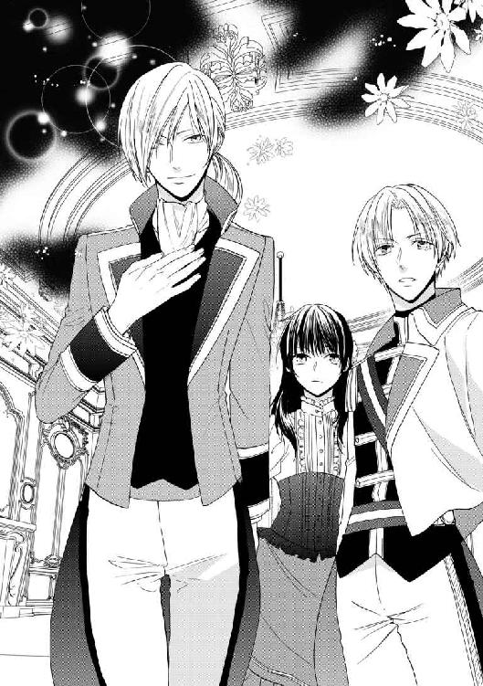
不自然な沈黙はほんの数瞬のことだったが、対象のニールだけではなく、側にいたライオールにも解るものだったらしい。怪訝そうに主が声をかけると、ユリスははっと我に返ったようだ。侍従らしい、滑らかな挙措には違いないが、それでも少しぎこちない様子で、失礼を、と頭を下げた。
「ご挨拶が遅れまして、申し訳ございません。私のことは、ユリスと呼び捨てになさってください。御意を得ますことを、光栄に存じます、フィルネリア大公女殿下」
礼儀正しい、丁重な挨拶は、どこにも礼を失したところはなかったが、しかし多少面白味には欠けるかもしれない。同じことを感じたのか、見ていたライオールが揶揄するように口を挟む。
「珍しいな、おまえがぼうっとしてるなんて。大公女殿下に見惚れでもしてたのか」
「す、すみません。ええ......その、お美しい方ですから」
「よく言うな。前は、リュセニアの大公女なんか、我が国の王妃に迎えることはないと言っていたのに」
「そんなことを申し上げた覚えはありませんよ！ 何てことを仰るんです」
素知らぬ顔で暴露され、ユリスは慌てて訂正の声を上げる。とはいえ、まるで事実無根というわけでもないらしく、彼は恨みがましい視線を主に注ぐと、深くため息をついた。
「私は、ただ......ライオール様は、ご自身で花嫁を選ばれるべきだと思っただけです。幸福な結婚とは、そういうものでしょう」
「おまえはたまに、驚くほど夢見がちなことを言うな。だから結婚できないのか」
「できないのではなく、していないだけです。いちいちあげつらうのはお止めください。......ですが」
そこまで言って、ユリスは再びニールに向き直った。今度は、さっきまでの控えめな無表情ではない。優しげな表情で微笑みかけると、嬉しそうに告げる。
「こうしてお二人が出会われた上で、互いに好ましく思われてご結婚されるとなれば、それは素晴らしいことです。少なくとも、ライオール様の方に異存はないでしょうね。あなたにお会いしたいばかりに、他の予定は繰り下げてでもこの時間だけは空けろと、仰せになるくらいですから」
「ユリス。余計なことは言わなくていい」
「大公女殿下にも、我が君を気に入っていただけるとよろしいのですが。先にはいろいろと失礼を致しましたが、決して悪気があってのことではないのです。本当は心のお優しい方で――」
「ユリス！ 何か用があって来たんじゃないのか！」
そのまま真剣に主の美点を並べ立てそうになるユリスに、今度はライオールが慌てる番だ。怒ったように侍従の言葉を遮るが、彼の本心がそうでないことはニールにもよく解った。
「ええ、そうです。そろそろ、次の会議の時間になります。出席者に変更はありません。皆様、既に議場に集まって、ライオール様のお越しをお待ちですよ」
「解った。すぐ行く」
答えて、ライオールは立ち上がった。ニールの方を振り向くと、改めて暇を告げる。
「急なことですまないが、これで失礼しなければならないようだ。――有意義な時間を過ごせたことを感謝する」
「こちらこそ、お忙しいところ来てくださってありがとうございました。是非またいらしてくださいね。今度は、ユリス......も」
呼び捨てでいいと言われたものの、慣れないと何となく気後れする。しかし、そう感じる必要はなかったようだ。ユリスはにっこり笑うと、ありがとうございます、と礼を言った。
「ですが、そのお気遣いだけで十分です。大公女殿下のお志とはいえ、せっかく二人きりになれる機会に私などが同席しては、我が君は面白くは思われないでしょうから......」
「早くしろって言いに来たのはどこの誰だ！」
皆まで言わないうちに、先に歩き去りかけたライオールが振り返って声を上げる。口を噤んだユリスは、再びニールに向かって深々と頭を下げるが、しかし主の許へ行く前に、真っ直ぐにニールを見つめる。
「ですが、大公女殿下。私でお役に立てることがありましたら、何でも仰ってください。あなたには、常にライオール様のお側にあってほしいのです――あの方の、かけがえのない伴侶として」
労わるように穏やかな声音、真剣な眼差しに、ニールは思わず頷いた。
やがて、ユリスも踵を返し、主のために扉を開けて出て行った。後ろ姿を見送ったニールの耳に、二人が遠ざかる足音が聞こえる。内容までは聞こえないが、何事か話しているらしい声も――遠慮のない、明け透けな文句。
――ふうん......そっか。
急に静かになった室内で、ニールは何とも言えない気分を味わっていた。感じているもののほとんどは、安堵である。あのユリスという侍従は、ライオールとは随分気心の知れた間柄のようだ。君臣の礼儀を守った付き合いには違いない、けれどそれだけではない繋がりがある。軽口を叩いたり、文句を言ったり――そうできるほどに、信じられる相手。
ライオールの側には、そういう人間だっているのだ。自分の王宮のことなのに、何も解らないと彼は言ったが、少なくとも一人ではない。......この王宮の中で、ライオールの他には本当に誰一人、頼る相手のないニールとはやはり違うのだ。
だから、一抹の寂しさは、一つ息をついて忘れてしまうことにする。何にせよ、これは良い兆候なのだ。王宮の中で、味方は一人でも多い方がいい。早く陰謀者を捕らえることができたら、その分ニールも早くここから解放されることになるのだから。
そしてそのためには、与えられた役を十分にこなし、かつ利用しなければならない。ニールは立ち上がり、室内を歩くともなく歩き回りながら、この先の行動について考えを巡らせた。
＊ ＊ ＊
「王宮の中を、少し見て回りたいんです」
文句を言われないよう、用意された正式のドレスをしっかりと身につけて、ニールは侍女たちにそう告げた。
「わたしも、ここに慣れていかなきゃって思って」
これまでははじめての場所で戸惑ってばかりだったが、こうして嫁いでくる以上、いつまでも客人のようでいてはならない。やがてはここで暮らす者として、最低限のことは学んでいかなければならないと思っている、と話すと、侍女たちは大きく頷いて納得してくれたようだった。未来の王妃がこの王宮に馴染もうとするのを、咎める道理はない。
口実は完璧――しかし、問題はその後だったのだ。
ニールは、扉の前に立っていた。王宮の一室、おそらくは数ある応接室の一つだろうと想像はつく。王宮にはこうした部屋が幾つもあって、集まる人間の数や身分、会合の目的などによって、通される場所が決まってくる......らしい。らしいというのは、ここへ来るまでの間に断片的に聞いた、説明とも言えない説明から、ニールが推測したことであるからだ。
だがきっと、これ以上の知識は得られまい。ニールが扉を開けようとすると、傍らで即座に気配が動いた。大きな身体が、彼と扉の間に滑り込むように現れる。音もなく――一言も発することなく。
「あっ......ごめん、なさい。勝手に開けては、いけなかった、ですね......」
「............」
思わず二、三歩退いて場所を空けながら、ニールは気まずく謝った。しかし、相手からの返事はない。振り向きもせず、扉周りの様子を確かめる。扉を開け、ニールを背後に置いて、先に中へ入る。室内を素早く一巡し、不審なものが存在しないことを確かめてから、ようやく扉を大きく開けて、ニールを中へ促した。
「............」
「あ、ありがとう......」
丁重な仕草ではあるので、決して無礼な感じはしないが、それにしても気詰まりだ。ニールは一応礼を言ったが、やはりこれまた反応はなかった。寡黙な同行者は足音一つ立てずに退いて、扉のすぐ脇に納まる。そしてニールがこの部屋に満足して立ち去るまで、そこで黙ってじっとしているつもりなのだ。
――うう......ライの奴、何でこんな愛想のないの寄越すんだよ......。
「――近衛騎士カシュバル・ハミット、我が国王陛下より、大公女殿下の御身をお守りするよう任を承りました」
目の前に現れた大男は、抑揚を欠いた低い声でそう名乗った。例文を丸暗記して読み上げるような、感情の見えない言い方のこの大柄な近衛騎士こそ、ライオールが彼に付けてくれた護衛である。
彼が信用できると言うからには、きっと腕は立つのだろう。先刻からの身のこなしを見ていても、それは窺える。ニールの行き先に危険がないか、常に確かめる手際は実に慣れたものだ。少し無人の室内を覗くのにいちいちそこまでされるのは、心苦しいようなまどろっこしいような気がして、どうにも落ち着かないニールだが、要人の警護という点では申し分ない働きである。何一つ手を抜かず、正確で、無駄口の一つも叩かず控えていて......。
――ちょっとくらい、叩いてくれてもいいんだけど......。
扉の中は、やはり何の変哲もない応接室だった。辺りを見回している振りをしながら、ニールは目の端で、密かに騎士を観察する。背が高い――高いだけでなく、がっしりした体格で、近衛騎士の軍服に長剣を帯びているのが大層様になっている。短く刈り込んだ髪、精悍な顔立ちは鋭い印象で、ニールはいよいよ気詰まりになった。大きい男は苦手だ、剣を振りまわす男も、強面の男も――力では敵わないと思うだけで、何となく心許ない。もちろん、国王の近衛騎士ともあろう立場の人間が、白昼の王宮で、自分に危害を加えたりするわけはないと解ってはいるが。
――どうしよっかなあ......。
これからの行き先を考える。政務が行われている棟をはじめ、幾つかの立ち入り禁止場所を除けば、大体のところは歩いて回った。建物内の配置を全て覚えるには、何度か足を運ばなければならないだろうが、どうせなら彼の疑問に答えてくれるような親切な案内人と一緒がいい。今日は、これくらいにしておこうか......。
――あ、待てよ。
だが、そう思いかけたとき、ニールはふと思い出したことがあった。そうだ、せっかくだから、この機会に確認してみよう。
「あの......騎士様。お尋ねしたいことがあるんですけど」
向き直って、ニールは問うた。突然、話しかけられた騎士は、驚いたかもしれないが、少なくとも表情は変わらなかった。にこりともせず、ただ頷く。
「......この王宮に、わたしの肖像画があると聞きました。どこにあるか、ご存じではないですか？ どのようなものか、見てみたいのです」
絵姿とはいえ、『本物』を見られるのなら見たい。彼女を演じるに当たって、何か得るところがあるかもしれない......というのは口実で、実際のところは興味があっただけである。とはいえ、これは正当な興味だとニールは思う。一体、自分が何者の身代わりになっているのか、気になるのは当然ではないか。
答えは返ってこなかった。が、無視されたわけではないらしい。少しの間があって、騎士は一つ頷くと、再び扉を開ける。
――えーと......ついてこいって、ことかな。
屋根付きの渡り廊下を通って、別の建物へと向かう。既に先刻通ってきた棟で、そのときは吹き抜けの大広間を覗いただけだった。しかし騎士が足を向けたのは、その上の階だ。ゆったりとした螺旋階段を上った先には、ところどころに椅子の置かれた広い通路があった。扉を守る衛兵はいない。休憩所を兼ねているのだろう、王宮を訪れた者なら、誰でも入れそうだ。
そしてその突き当たりの扉が、目指す場所であるらしい。
「『絵画の間』です」
相変わらず身も蓋もない紹介だが、どういう部屋かは解りやすい。またしても手際よく、決して飽きる様子も見せず律儀に、室内の不審物の捜索をこなしてから、騎士はニールを扉の中へ招き入れる。
『絵画の間』という名ではあるが、そこにあるのは絵画ばかりではなかった。高い天井には、採光用の窓がついていて、室内はひどく明るい。古代の装束を纏った神々の立像、宝玉で作られた果実をつけた黄金の木、絹張りの台座に置かれた透き通るように淡い色付きの飾り壺や、奇妙な形だが引き込まれるような刀身の剣など、ありとあらゆる美術品が詰め込まれている。どれも美しいものだが、どこか雑多な印象が拭えないのは、鑑賞のために配置されてはいないからだろう。倉庫というわけではないが、置き場の決まらないものたちを、とりあえず集めて置いているという様子だ。
その奥、壁にかけられた幾つもの額の中に、その絵はあった。
「......え!? これ、が？」
騎士に、その絵を指し示されたとき、ニールは思わず声を上げてしまった。
絵の中には、一人の少女が収まっている。優美な曲線の脚を持つ椅子にちょこんと腰かけて、緊張したような、はにかんだような表情でこちらを見ている――幼い、少女だ。歳は五つか、六つくらいだろうか。
――子供じゃん！
似ている似ていないを判断する以前の問題だ。ニールはあんぐりと口を開けそうになったが、すんでのところで気が付いて、慌てて顎を引き締めた。間抜け面で呆気に取られているのを近衛騎士に見られて、不審に思われてはまずい。
「これは......この絵はいつの......いつから、ここにあるのですか？」
代わりにそう訊きながら、しかしニールはすぐに状況を把握した。本物のフィルネリア大公女が、今、この年齢のはずはない。もしそうなら、たとえ紫の瞳がどうでも、ニールが身代わりに選ばれるわけはないし、第一、この絵を知っているアーセルン側の誰かが何か言うだろう。この絵は多分、ずっと昔に描かれたものなのだ。
「解りません」
案の定、騎士から返ってきた答えは素っ気ないものだった。まあ、たいして期待はしていない、とニールは内心で舌打ちしたが、さすがに相手もそれではあまりだと思ったのだろう、珍しく更に一言付け加えた。
「......この一年の間では、ありません。そういう話は、聞いていません。もっと、前です」
口を開くことに慣れていないような、たどたどしい言い方、だがニールが微かに落胆したのはそれらのせいではない。だとすれば、この絵は結婚のために、最近持ち込まれたものではないのだ。長くここにあったもので、特に厳重に警備されているわけでもない――長年の間、王宮に出入りしたことのある者なら、誰でも見ることができたはずだ。
ニールは改めて、絵姿の大公女をじっと眺めた。陰謀者は、この絵がここにあることを知っていた。だからこの絵は、彼らに通じる数少ない手掛かりのはずなのだが、それをたぐっていくのは難しそうだ......。
――ん？
ふと、微かな違和感を覚えて、ニールは目を瞬いた。画布に描かれた、あどけない少女の姿――黒髪に紫の瞳は、驚くほどニール自身のものとよく似た色合いだ。リボンとレースで飾られた青いドレスを着て、艶やかな黒髪を控えめな髪飾りで装っている。
何の変哲もない、ただの肖像画。けれど何かが引っかかる。ニールは目を凝らしたが、それ以上はっきりと見ることはできなかった。絵は、壁の上の方にかかっている。背伸びをしても、手さえ届かない位置だ。
――ああ、くそ！
まったく、背が低いというのはろくなことがない。歯がゆいが、しかし慣れたことでもあるので、ニールはとっさに周囲に目を走らせた。必要なものは......どうやらありそうだ。
「あの、騎士様」
振り返り、ニールは急いで口を開いた。騎士はいつの間にか、定位置の扉の側へ退いている。
「すみません。ちょっとだけ......一人にしてもらえませんか」
「............」
「す、少しの間で構わないんです！ どうか、お願いします」
騎士の厳めしい顔がわずかにしかめられるのに気付き、ニールはどぎまぎしながら慌てて言葉を継いだ。身体が竦みそうになるのを、何とか堪える。気を悪くしただろうか、怒鳴られたらどうしよう......。
だが、そんな心配は杞憂にすぎなかった。騎士は何も言わず、折り目正しく敬礼をする。そのまま踵を返し、音を立てずに扉の向こうへ姿を消した。
――助かった。
これで心おきなく、やりたいことができるというものだ。ニールは素早く取って返すと、まずは先刻目を付けておいた茶卓のところへ向かった。優美な猫足を持つそれを、壁際に引きずっていく。次いで持ってきた椅子を、その上に乗せる。まだ高さが足りない気がしたので、壺を飾る台座を持ってきて、更に椅子の上に置いた。
――傷とかついたら、怒られるだろうけど......。
だが、今は構ってはいられない。何としても、あの絵をよく見なくては。
「よい、しょっと......」
不恰好な足場によじ登る。壁に手をついて身体を支えながら、ニールはじりじりと伸び上がった。しまった、足場を積む場所が少しずれている。もう少し、右――。
だが、そう思って、身を乗り出したのがまずかった。
「！」
ガタン、と下で音がすると同時に、視界がぐらつく。とっさに壁にかかった絵画を掴んでしまったのが、また失敗だった。体勢を崩した身体の上に、重い額が何枚も落ちかかってくる。
できるのは、頭を庇うことくらいだ。きつく目を閉じて身体を固くし、数瞬後の衝撃に備える。床に叩きつけられ、絵画が降ってくる――。
「――――」
くぐもった鈍い音、派手に響く鋭い音......しかし、予想された身体の痛みはどこからも感じられない。何かが自分に覆い被さっていると、ニールはようやく気付いた。自分の腕ではない腕が、ぎゅっと頭を押さえている。床ではない、何か弾力のあるものに包まれている――人の、身体だ。
ぎょっとして、目を開ける。顔を上げて真っ先に見えたのは、鋭い面差しの、見覚えのある顔だ。さっきまでははるか頭上にあったはずのそれは、今はすぐ側に見える――床に伏せるようにして、きつく抱きかかえられていれば、当然に身長差はなくなる。
「............！」
ニールは息を呑み、呑んだ瞬間に喉が詰まるのを感じた。どうしてこの男がここにいるのか、こんなことをしているのか......こんなに近くにいられては困る、身体に触られるのはまずいのに！
「ちょ......あ、わ......」
反射的に、相手を押しのけようとする。が、それよりも相手が動く方が早かった。腕の中でニールが動いたことで我に返ったのか、男はぱっと身体を起こすと、ニールの肩を両手で掴む。その勢いと力の強さに、思わず身体を震わせる彼に、騎士は真剣な表情で問いかけてくる。
「怪我は!? どっかぶつけてねえですか！」
「えっ？ あ、だ、大丈夫......」
――あれ？
困惑するニールの表情に、しかし相手は気付かないようだった。大きな手で彼の肩を掴むと、上から下まで目を走らせる。秘密を見抜かれそうで、ニールは身を固くしたが、続く相手の反応には思わずその力も抜けた。
「――良かった！」
心底嬉しそうに、騎士は声を上げた。鋭く、厳めしいばかりだったその表情が、一転して明け透けな笑顔に変わる。大事な宝物を抱えた子供のような、純朴な笑顔。
と、そこで彼も、ニールの呆気に取られた様子に気付いたらしい。一瞬、きょとんとした顔で腕の中の大公女を見返したが、次の瞬間、弾かれたように飛び退った。
「............！ あ、うわ、すまね......あっ、じゃねえ、ええと、もう......申し訳......」
「ああ、いや、そんな慌ててくれなくていいんだけど」
慌てているのは、ニールの方も同じなのだが、しかし人間、自分より混乱している者を目の当たりにすると、何故か冷静になるものだ。ニールは一つ深呼吸をすると、いきなり距離を置いた相手を真っ直ぐ見つめて、ありがとう、と言った。
「あなたが謝ることなんてない、助けてくれてありがとう。おかげで、どこも痛くない」
「............」
「でも、そっちは大丈夫だった？ いろいろ落ちてきたから、ぶつかったりとか......」
「............」
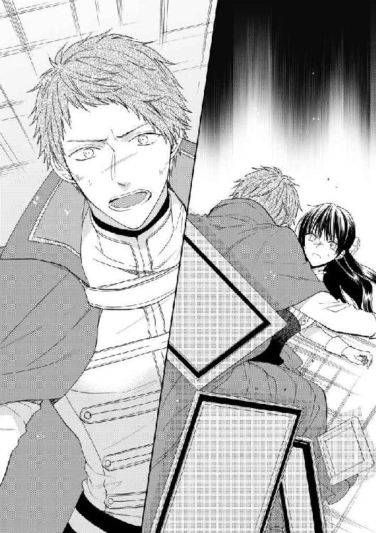
少し前なら、答えが返ってこないことを不安に思っただろう。どこから見ても立派で強そうな近衛騎士に、すげなく扱われるのは、どうにも気詰まりで仕方がなかった。
しかし、今はそうではないとはっきり解る。顔を真っ赤にして、困り果てた表情で唇を引き結んでいる騎士は、ニールの問いかけに応える言葉を持っていないように見えた。気持ちは解る、とニールは密かに思う。そう、よく解るのだ――同じ、『他所者』として。
「――あのさあ」
足に絡まるドレスの裾を払いながら、ニールは立ち上がった。ほんの数歩――先刻、空けられた距離を再び詰めて、騎士の目の前に座り込む。ぎょっとして、またしても身を引きかける騎士に、ニールは急いで告げる。
「待って、逃げないでいいから。別に『王宮式』じゃなくてもいいから。怒ったりからかったりしないから、普通に話してよ。お......わたし、も、そうするから」
果たして、効果は覿面だった。突然、高貴な姫君の口から飛び出た、似つかわしくない言葉の響きに、今度は騎士が呆気に取られたようだ。まじまじとニールを見返すが、しかしそれは決して奇異なものを蔑む視線ではなかった。追い詰められた瞳に、微かに煌めく――小さな、安堵。
「あ、あの......すみ......ませんでした。失礼をしたのは解ってんだけど、何つったらいいか、よく解んなくて......」
「失礼なんかされてないから大丈夫だって。慣れてないと、王宮で使う敬語って、すぐ出てこないね。相手によってちょいちょい変わるし。こっちだって、『大公女殿下』って呼ばれても、とっさにぴんとこなかったりするもの」
もっとも、ニールが『大公女殿下』に馴染めないのは、決して敬称のせいだけではないが、そこは黙って棚上げしておく。にっこり笑ってそう言った彼に、騎士は意外そうに目を瞬いた。
「......大公女殿下にも、そんなことがあん......あるんですか」
「あるある、余裕である。くっそ面倒って思ってる」
「............」
「あ、あら失礼、わたしとしたことが......ええと、カシュバル、だっけ。あなたも、どこか遠いところから来たの？」
少なくとも、アーセルンの王宮に出入りして育ったわけではないだろう。彼の言葉には、聞き慣れない訛りがある。他国の使者を迎え入れることの多い王宮では、古い時代の言葉や発音が未だに残って使われているから、はじめて別の地方からやってきた者は大いに戸惑うだろう。
長く国から国へと渡り歩く生活の中で育ってきたニールは、そうした差異に多少は対応する能力が備わっているが、それでもアーセルンの王宮言葉を完璧に流暢に話しているとは言えない。曲がりなりにも誤魔化せているのは、一応、舞台でなら高貴な姫君を演じることもあったという経験と、異国人だから仕方がない、という王宮の人々の思い込みのおかげである。アーセルンに辿り着くまでの道のりの間、彼をリュセニアの大公女に仕立て上げようとした教育係の尽力がなければ、それでも誤魔化し切れなかったに違いないが。
「そう......です。おれは、イリキスの出です。知ってますか？ 王都では、とんでもねえ山ん中の田舎だって思われてるみてえだけど」
そういうことも、都に出てくるまで知らなかったのだと、カシュバルは言った。
イリキス地方は、王都から見て北東に位置する。バシュラという小国との国境に近いが、交通の要衝などではない......どころか人の行き来があまりないのは、その面積の多くが山地であるからだ。多くの土地が耕作に不向きで、大きな街道も通っていないイリキス地方は、先祖代々同じ土地を守る人々が細々と暮らしている、貧しいが平和な土地であるらしい。
「だあれも都に行ったことなんかねえし、あんまり行きたいとも思わねえ、そういうとこです。都から来る他所者は大概、盗賊とか、何か後ろ暗いことのあるろくでなしばっかだから、皆よくは思ってねえんだ。......おれは、騎士の家に生まれたから、そういう奴らを捕まえてました」
何代も前、戦争で手柄を立てた先祖が、国王よりイリキスに領地を賜りそこに住みついたものらしいが、それがどのくらい前なのか、具体的にどういう手柄だったのかは、もう解らなくなってしまった。ともあれカシュバルのハミット家は、長くその土地の主であり、それを疑う者はどこにもいない。カシュバル自身にしてもそれは同様で、自分は生まれた土地で、そこの人々のために、悪党を捕らえたり力仕事をしたり、何か役に立つことをして生きていくのだと思っていた。
「でも......王都で、近衛軍の募集をしてるって聞いて。誰でも、合格しさえすれば、近衛騎士にだってなれるって、聞いたんです......おれみたいな、下級騎士の息子でも」
それはアーセルンの歴史上、はじめて開かれた扉だった。これまで、国王の近衛騎士といえば、有力諸侯の一族、あるいは代々その地位を占めている有名な騎士の家系の出身でなければなれないものと、暗黙のうちに決まっていたのだ。国王の側近くに仕え、場合によっては身命さえも左右する要職は、常に権力を望む者たちの関心の的である。
「それで、本当に近衛騎士になれたの？ すごいよ！」
「本当に、は、駄目だったです。おれみてえな田舎者が出る幕じゃねえって、追い返されるとこでした。おれは学がねえし、こんな風に......ちゃんと喋れもしねえし、王宮に置いとくのは、ええと......何が汚れるって言われたんだっけ？ とにかく、王宮に似合わねえから駄目だって」
どんなことを言われたのか、何となく想像がついて、ニールは顔をしかめる。発言者がどういう身分の人間かは知らないが、他人に対して『汚れる』などというのはまともな言辞ではない、誹謗中傷の類だ。
しかし、他人事ながらに腹を立てるニールとは対照的に、当の本人はそれを何とも思っていないようだ。嬉しそうな笑みを浮かべると、でも、と話を続ける。
「ライオール陛下は、おれをお側に置いてくださいました。おれが一番、剣が強かったんだから、おれを近衛騎士にするのが当たり前だって、言ってくだすったんです――生命を預ける相手として、信じているって」
それがこの上ない幸福であるかのように、カシュバルは言った。何となく自分まで誇らしいような気持ちがして、ニールも思わず微笑み返す。なるほど、ライオールならそう言うだろう。素性の知れない偽大公女に対してでさえ、責めたり一方的に詰ったりせず、ちゃんと話を聞いてくれた彼ならば、田舎の出だからというだけで、才覚ある人間を軽んじるようなことは決してしないだろう。
「ライは......あー、国王陛下は、あなたにとっても、いい王様？」
「おれがこうしてここにいるのも、あの方のおかげです。おれは身分もねえし、剣の他に取り柄もねえけど、陛下をお守りするためなら、どんなことでもするつもりです。一番お側にいて、真っ先にお守りできるように」
そう言ったカシュバルの口調は、決意と誇りに満ちている。が、頷くニールの顔を見た瞬間、何かを思い出したように、その表情が陰る。
「............？ 何、どうかした？」
「い、いえ。何でもねえ......です」
「何でもないってことないじゃないか、人の顔見てそんながっかりしといて。わたし、何かした？」
「ち、違います、そんなんじゃねえ......けど」
だが、彼の憂鬱に、ニールの存在がまるきり無関係というわけでもないらしい。それでもしばらく言い渋っていたカシュバルだが、答えを強いるようなニールの視線の圧力に耐えかねたように、しょぼんと肩を落として呟いた。
「......おれ、何かやっちまったんだろうかと思って」
「何かって、何を？」
「解んねえです。何にも思い当たる節はねえんだけど。でも......もしかしたら、もうおれには愛想が尽きたってことなのかも――いきなり、近衛から外す、だなんて」
「え？」
「しばらく、陛下のお側ではなくて、あなたのところにいるように言われました。昨日までは、そんなことは一言も仰らなかったのに......」
あっ、とニールはつい声を上げそうになった。どうしてそんな異動が起きたのか、彼こそはよく知っているからだ。なるほど、確かにライオールは、一番信用に足る近衛騎士をニールに付けてくれたのだろう......しかし、そうして付けられた当の本人を、思い悩ませているとは思っていないに違いない。
「ごめん！ それは、そういうことじゃないんだ。わたしのために、ライが自分の近衛騎士を付けてくれるって、言ってくれて」
「どうして、おれなんです？ 他にも騎士はいるのに......大公女殿下も、おれを知っちゃいなかったでしょう？」
「わたしがカシュバルを指名したわけじゃないよ。ライがそうしたんだ――『絶対に信用できる男だ。安心していい』って」
カシュバルは、はっとしたように顔を上げた。まじまじとニールを見つめる表情からは、彼の正直な驚きが伝わってくる。呆気に取られている様がおかしくて、ニールはにやりと笑ってしまう。
「考えてみたら、ひどい考えだ。あんたがライに信用されてないんだとしたら、そういう信用ならない騎士を寄越される、こっちの立場なさすぎだろ。――それとも近衛騎士殿は、わたしには、ライオール陛下の婚約者としてでも、守る価値はないとお思いで？」
「！ そんな、滅相もねえ！ ......です！」
答えを聞くまでもなく解る、本当に、この男はそんなことはちらりとも考えなかったのだろう。彼はただただ、主の側から遠ざけられたことが、悲しかっただけなのだ。飼い主にくっついて離れたがらない、大きな犬みたいだと思い、ニールは更にからかってやりたくなったが、結局は止めておいた。予想外の指摘に真っ青になったカシュバルが、その場に平伏しそうになったからだ。
「うわ、いや冗談だよ！ ちょっとからかっただけだって」
「申し訳......ありません。大公女殿下に、ご無礼、言うつもりは......」
「解ってるよ。だってもう、助けてくれたじゃない」
崩れた家具や落ちてきた絵画の中で、身を挺して庇ってくれた。もし彼がいなければ、死にはしないまでも、随分と痛い思いをしただろう。もっともそうなったとしても、ニールには自業自得なのだが――それでも彼は、ニールの無事を「良かった」と言ってくれたのだ。その不注意を、一言も責めることなく。
「こっちこそ、考えなしでごめん。あなたは国王陛下の近衛騎士だもんね、勝手に別のところに遣られたら、そりゃ嫌だよね。......ライに言って、元の任務に戻してもらおうか」
「い、いいえ！」
意外なことに、この提案は受け入れられなかった。カシュバルは、今度ははっきりとニールを見つめ返すと、真剣な顔で答える。
「大公女殿下のお側で、御身をお守りします。それが陛下から拝命したおれの任務です」
「でも、本当、無理しなくていいよ？ ライだって本当は、あなたが一緒にいてくれた方がいいんだと思うし」
「いいや、そうじゃねえ......です。あの方が、おれはここにいるべきだと仰るなら、おれはそうするべきなんです。近衛騎士は陛下をお守りするだけじゃ駄目なんだ――あの方の手足となって、あの方の御手の届かない仕事をするためにいるんです。おれ、頭よくねえから、すぐ忘れちまって......宣誓したときには、ちゃんと解ってたはずなのに」
「............」
「どうか、お側に置いてください。陛下のご命令を果たしてえんです。......もう二度と、こんな失礼な口を利いたりしません。ご迷惑、おかけしたりしませんから――どうか」
お願いです、と頭を下げられる。ニールは少し考えた。彼の申し出を受け入れるのは、吝かでない。だが......。
「――一つ、条件があるんだけど」
切り出すと、カシュバルはぱっと顔を上げてニールを見た。何を言われるのかと恐々としているらしい彼に、ニールは苦笑して告げる。
「もし......わたしの側にいるつもりなら、さっきまでみたいに口を利かないのは禁止だから。黙ってられると、怖いんだ」
「えっ？ あ、申し訳......でもおれ、上手く喋れねえから......」
「王宮式じゃなくても、怒ったりしないって言ったよ。何でもいいから、ちゃんと話して。まあ......お互い、この言葉遣いはおいおい何とかしなきゃなんないだろうけど、それもまず、口に出さなきゃはじまらない」
今なら解る。はじめて顔を合わせてから、カシュバルがずっと寡黙だったのは、決して無愛想だからではなかったのだ。訛りのきつい言葉を隠すために――彼の主にふさわしくないと思われないように、精一杯努めていたのだろう。
「もし、それで嫌じゃなかったら、しばらく一緒にいてほしい。わたしは、他の近衛騎士のことは知らないけど――今は、カシュバル、他の誰でもなく、あなたがいいと思うんだ」
王宮という異世界で、共に闘う同胞だ。もっともカシュバルの方は、そんなこととは知らないだろうが、それでも彼が側にいてくれれば心強い。真実を知っているライオールとは別の意味で、カシュバルはニールの『王宮式』でないところを見咎めはしないだろう。王宮の作法に通じていないからというだけではなくて、それ以上に信じられる――厄介払いされた先と信じたニールのことを、それでも懸命に庇ってくれた彼ならば、たとえニールがどこの誰でも同じように、接してくれると思うから。
「............」
答えは、すぐには返ってこなかった。カシュバルは放心したように言葉もなく、ただこちらを見つめるばかりだ。やっぱり嫌なのだろうか、とニールは不安になる。
「あの......駄目かな。そう、長い期間ってわけじゃないんだ。結婚式までには、元通り、ライの近衛の仕事に戻れるはずだから......」
アーセルン国王と、リュセニア大公女の結婚式。そのときまでには、本物の大公女が現れる。あの絵の中の、彼と同じ紫の瞳を持つ、幼い少女......。
「い、いえ！」
だが、ニールがそれを思い出すと同時に、動きを止めていたカシュバルが声を上げた。何故か耳まで真っ赤に染まっていたが、ニールがそれを質す前に、勢い込んで言葉を続ける。
「駄目じゃねえ......ないです。これより先、お側にお仕えさせてください」
「いいの？」
「――あなたをお守りします。何があっても、必ず」
言って、騎士は素早く立ち上がった。辺りのガラクタを除けて足下を確かにしてから、座り込んだままのニールへ手を差し出す――貴婦人に対する騎士として、非の打ちどころのない所作。
「！ あ、ありがとう......」
今度は、顔を赤らめるのはニールの方だ。女でもないのに、こんなに丁重に扱われるのは、気恥ずかしくて仕方がない。しかしもちろん、そんなことを言うわけにはいかないので、ニールは内心で騎士に詫びながらその手を取って立ち上がる。
改めて見回すと、辺りの様子は惨憺たるものだった。卓の上から落ちた椅子は、かなり離れたところで転がっているし、床の上には壁から落下した何枚もの絵画が無惨に重なり合っている。ぱっと見る限り、ひどく傷がついたり壊れたりしているものがなさそうなことだけが幸いだろうか。ニールはため息をついて、それらの絵を起こしはじめた。
「......絵を、見たかったんですか。大公女殿下の肖像画ですか？」
「うん、高いところにあったから、よく見たくて......あ、いや、じ、自分の姿だからってわけじゃなくて！」
何気なく言ってしまったが、よく考えたら、そうまでして『自分』の姿を見たがるなんて、とんだ自惚れ屋みたいだ。ちょっと気になることがあって、と慌てて言い訳したが、しかしカシュバルは特にその点を指摘しはしなかった。彼が顔をしかめたのは、別のことだ。
「そんな......言ってくださったら良かったのに。こんな、高いところによじ登るなんて危ねえことはせずに」
「そうだね、ごめん。......これ、誰に謝ったらいいのかな。ばらばらにしちゃって......」
もう一度、正しくかけ直さなければいけないだろう。大きな絵画の一枚をやっと立てて、ニールは壁を見上げた。どこに何がかかっていたかなど思い出せないし、そもそも額はひどく重い。到底一人では持ち上げられない......。
と、その絵が急に浮き上がった。ニールの横から手を出したカシュバルが、額縁を掴んでひょいと持ち上げたのだ。
「あ、だ、大丈夫!? それすごく重いよ！」
「そりゃあ女性には重いでしょうが、男にはこのくらい、何てことはねえですよ。多分、この辺じゃ、ねえかな」
うっ、と言葉に詰まるニールに気付かず、カシュバルは次々に絵画を壁に戻していった。迷いのない行動に、ニールは複雑な気持ちを押し隠して尋ねる。
「......どうして、そこだって解るの？」
「王宮の警備をしているときに、何度か調べたことがあるんです。陛下のいらっしゃるところに、何か危険なものが仕掛けられてたらいけねえですから。まあ、はっきり全部覚えてるかって言われると困るけど」
何でもないことのように言うカシュバルに、ニールは密かに笑みを零す。先刻見たカシュバルの仕事ぶりから考えると、いかにも彼らしいことだと思う。ニールが部屋に入ろうとするたび、いちいち生真面目に扉の内側を確かめてからでないと入れてくれなかった彼だ。絵画や調度品の確認などという、国王付き近衛騎士の仕事としては地味で面白味のない作業でも、文句も言わずにきちんとこなしたに違いない。
カシュバルが、最後の絵を取り上げた。例の、リュセニア大公女の肖像画だ。ニールはそっと、横からその絵を覗き見た。さっき感じた違和感の正体は、まだ掴み切れない。どこが変なのだろう......。
「......まだ、この絵、ご覧になりてえですか？」
「え、あ、いや、いいよ」
だが、その視線は気付かれていたらしい。問われて、ニールは急いで首を横に振った。とりあえず、今のところはじっと見ていても解決しそうにない......ただカシュバルに、自分の肖像画に見惚れる変な奴と思われるだけだ。
ニールの答えを聞いて、カシュバルは絵を持ち上げた。が、少し考えた様子で再び床に下ろす。代わりに別の絵を壁の上に掲げると、その絵があったところに肖像画をかけた。壁の低いところ――ちょうど、ニールの視線の高さ。
「............？」
「一つくらい、入れ替えても怒られねえでしょう。変なもの隠してるわけでもねえから、衛兵も文句は言いません。これでいつでもご覧になれますよ」
「う、うん」
「だからもう、危ないことはしねえでくださいね。あんなとこによじ登ったりせずに」
穏やかな言い方は決して責めるものではない、苦笑交じりの言葉であったが、ニールは真剣に頷いた。彼自身が勝手に落ちるだけならまだしも、カシュバルを巻き込んでしまったのは、やはり悪かったと思う。これから、少しの間とはいえ一緒に行動することになるのなら、尚更同じことを繰り返すわけにはいかない。
と、そこでニールはふと気付いた。ようやく彼の視界の高さに下りてきた、カシュバルの手――左手の甲に、赤い筋が走っている。たった今付いたばかりの、真新しい傷。
「ちょ......何だよ、それ！」
「は？ 何です......」
「その傷！ さっき、怪我したんだろ、先に言えよ！」
「あ、ああ、これですか。ちょっと擦っただけで、怪我なんてもんじゃ......」
「血が出てたら怪我だよ、馬鹿じゃねえの！ ていうかこっちが馬鹿だった、ごめん！」
せっかく低い位置に下げてくれた絵のことは、残念ながら既にニールの頭になかった。早く傷の手当てをしなければ、ということでいっぱいになってしまったのだ。突然、深刻な顔をした大公女殿下に迫られて、目を白黒させているカシュバルの反応には構わずに、ニールは彼の手を取ると、有無を言わさずその場から連れ去った。
「――それでは。拝謁をお許しくださいましたこと、重ねて御礼申し上げます、フィルネリア大公女殿下」
「こちらこそ、ご丁寧なご挨拶をいただいてありがとうございます。是非また、お目にかかれたらと思いますわ」
光栄です、と、来客である年配の夫婦は深々と頭を下げた。にこやかな表情を崩さないまま、ニールは最後にもう一度、彼らの素性を反芻する。確か、カイル・マツァーク伯爵とその夫人だと聞いたっけ......ただでさえ聞き慣れない名前に、更に慣れない爵位や役職がくっついていると、尚更に覚えにくい。普段はあまり、相手の顔と名前を覚えるのが苦ではないニールだが、顔を合わせている間に何度も記憶に焼きつけるよう意識しないと、到底覚え切れるものではない。
その上、数も多い。新たな王妃となるべくやってきた異国の姫君に、一早く知遇を得ようとやってきた人々は、今日だけで既に二十組を超えている。通り一遍の、儀礼的な会話を交わすだけの一人一人を覚えておくのは、甚だ困難なことだ。
「――次は？」
伯爵夫妻が退出してしまうと、入れ替わりに、扉の外で待機していた侍女が、応接室に入ってきた。軽く会釈すると、ニールの問いに、いいえ、と答える。
「これで、殿下のご予定は終了です。本日、お目通りを希望なさっていらっしゃった方々は、皆お見えになりましたわ」
「終わった？ 良かった！」
延々と続いた苦行も、やっと終了だ。思わず、ニールはため息をついて、身体を投げ出すように椅子に座り込んだ。たった今まで、訪問者を迎えるたびに立ったり座ったり客に勧めたりを繰り返していた、暖炉前の風雅な椅子だ。長卓と合わせ、どちらかといえば女性的な曲線と装飾が彫り込まれた、申し分なく上品な代物だが、残念ながら座り心地はいまいちである。......もしかしたら、こうした儀礼的な対面を早く切り上げるために、わざと座り心地のいい椅子を置いていないのかもしれない。
「お疲れ様でございました。少し休憩になさいますか？」
ニールの態度を見ても、侍女は眉を顰めたりはしなかった。どころか、同情するような労わるような口調で休憩を勧めるのは、彼女も少なからず疲れを感じたからだろう。大公女の謁見の場を取り仕切るのは、側付きの侍女の役目である。謁見の時間が重ならないよう調整したり、貴族の間の微妙な力関係を意識して案内を務めたり、些細な失礼もないように常以上に振舞いを慎重にしたり、各々が自分の持ち場を厳しく守ることが求められる。今日は彼女たちも、何とか大過なく務めを果たし終えたのだ。
「ああ、ありがとう。そうする」
「飲み物と、軽いお菓子などご用意いたしましょうか。居室へお戻りになりますか？」
ニールに与えられている居室の椅子は、ここのものよりずっと心地よい。大きな窓の側にあって、庭園の緑を眺めることができる、寛ぐにはいい部屋だ。すぐにでも、と頷きかけたが、しかしニールはちょっと考えて、別のことを言った。
「うん、戻るよ。でも、ちょっと散歩してから戻ることにするよ。お茶はわたしが戻ってからでいい。そうだね、半刻ぐらいはぶらぶらしてるから、急がなくていい」
かしこまりました、と一礼して、侍女は下がっていった。
「殿下、どちらへ行かれるんですか？」
代わりに声をかけてきたのは、今まで室内の置物のように、壁際に黙って立っていた近衛騎士だ。置物のように静かではあるが、しかしその立派な出で立ちの存在感は隠せない。今日、挨拶しにきた大半の人々が、彼の姿を見てはどこか落ち着かない顔をしたことを思い出して、ニールは密かに笑った。
「そうだね、どこにしようか、カシュバル。もう、王宮の建物は大体見て回ったしなあ」
「どこか、行きたいところがあったんじゃねえんですか？」
だったら何故すぐに自室へ引き返さないのかと、カシュバルは不思議そうな顔をする。確かに彼にとっては、護衛対象があまりうろうろしてくれない方がありがたいに違いない。悪いな、とは思いつつも、ニールは肩を竦めて答えた。
「だって、わたしがすぐに戻ったら、彼女たちは皆息つく暇なく、わたしの面倒を見なくちゃいけなくなるでしょう。忙しかったのは、あの人たちも同じなんだから、ちょっと休憩したいのも同じだと思うんだ」
そして休憩するからには、上役の目がない方がいいのは誰でも同じだ。ニールにしても、彼女たちに傅かれているよりは、一人でいた方が気が休まるのも確かである。誰にとっても、この方が都合がいいのだ。
「あ、でも、カシュバルはわたしに付いてこなきゃいけないから面倒くさいか。ごめんね。その......わたしが結婚するまでの辛抱だから、許して」
一応カシュバルには、大公女の護衛任務は、国王との結婚式が執り行われるまでと説明してある。そこまで辿り着く間には、確実に陰謀者がニールに接触を図ってくるはずだし、そうなればどういう形であろうと、この偽者生活は終了するはずだ。もし無事でいられれば、ニールは王宮の外へ戻ることになるし、カシュバルに護衛されることもなくなる。
とはいえ、自分のわがままに付き合わせるようで、多少心苦しくはある。上目遣いで謝ったニールだが、しかしカシュバルの反応はいささか彼の理解できないものだった。近衛騎士はぎょっとしたように目を見開くと、直立不動の姿勢になる。
「いえ！ おれは、大公女殿下の護衛です！ 辛抱だなんて、そんなことはねえです。むしろ......」
「むしろ？」
「！ ち、違う、そうじゃなくて......その、陛下から拝命した、任務ですから」
任務だから、どこへ連れ回されても文句を言う筋ではないということか。職務に忠実な彼らしい、真っ直ぐな言い分だが、その割に、妙に落ち着かない様子で視線を逸らすのは何故なのだろう。まあ、仕事だと割り切ってくれていればニールもありがたいのだから、別にいいのだけれども。
「できるだけ、迷惑かけないように気をつけるから、よろしくね。それにしても、半刻もぼうっとしてる手はないな。本当に外を散歩でもしたいよ。カシュバル、どこかいいところある？」
「え、ええと......外って言うと、庭園ですか」
広大な王宮内には、庭園も幾つかある。一番広いのは、王宮の建物に囲まれた中庭だが、これは庭というよりも、たとえば閲兵式などの、大人数が集まる儀式が行われる広場である。続いて広く、最も庭園として行き届いているのは、王族の住まいである北翼に隣接する庭園らしいが、場所からも解る通り王族のためのもので、特別な許可を得ない限りは入れないという。
「ふうん、じゃあそこは止めとこう」
「この窓から見える、西の庭園も、歩くと結構広いです。生垣は丈が高くて、何かあったときに視界が悪いので、警護としてはお勧めしねえですけど、そこ以外なら問題ねえです。今は、マーベルの花がきれいに咲いてるはずです」
「花？」
無骨な近衛騎士から意外な言葉が出てきて、ニールは驚いた。カシュバルが近衛騎士の任務から、王宮のどんな細かいことでも見落とさずにいることは知っているが、花にも興味があるとは思わなかった。ニールの表情から、考えていることが解ったのか。カシュバルは少し照れたように言った。
「......おれの故郷にも、同じ花が咲くもんですから。懐かしくて、つい目が行くんです」
――故郷か。
ニールには、それがどういう感覚かはよく解らない。大陸中を旅して人生を送ってきた彼は、人よりもたくさんのものを目にしてきたが、同時に、その中のたった一つに目を留めて、特別に思うことはできない。
けれど『故郷』という言葉の響きには、何か不可思議な魅力が感じられる。ニールには手に入れられない、何か慕わしく、温かいもの。
「ふうん......その花、見てみたいな」
興味を惹かれて、ニールは言った。それに、そこへ行くならば、きっとカシュバルも無為な時間を過ごしたとは思わないだろう。何気なくそう決めて、ニールが立ち上がりかけたそのとき、突然、扉が叩かれる音がした。素早く開いて姿を見せたのは、先刻下がっていったはずの侍女だ。
「？ どうしたの。もう、特に用事は......」
「大公女殿下に申し上げます。あの......殿下にお目通りを願いたいと仰る方が」
「え、まだ？」
もう、それは終わったのではなかったのか。まだ面倒事が残っていたかと、ニールは顔をしかめそうになったが、しかしそこで侍女の様子に気付いて止めた。大公女付きの侍女は、王宮勤めにふさわしく礼儀正しい無表情を保ってはいたが、慌てて扉を開けたらしいその挙措には、常らしからぬ動揺が見て取れる。
「いえ、予定の謁見はすべて終了したのですが......新たに、至急殿下にお会いしたいと」
これまでにない申し入れに、ニールはますます不審の念を強くする。大公女に挨拶を申し述べたい者は、事前にその旨をこちらに申し込んでおくもので、こんな急な話を受け入れて許すはずがない。ニールの意志がどうということではなくて、王宮のやり方とはそういうものらしいのだ。他国の王族であり、次期アーセルンの王妃であるフィルネリア大公女が、一介の臣下の都合に合わせて動くことなどあり得ない。
「――誰が来たの？」
だが、そのあり得ないことが起きているらしい。内心身構えて尋ねたニールに、侍女は深く頭を下げたが、ついにその名を口にはしなかった。彼女がそれを告げる前に、背後からその人物が現れたのだ。貴婦人に面会するときは、侍女の取り次ぎを待つという当たり前の手順をものともせず、強引に室内に足を踏み入れると、はっとするニールを見据えて言った。
「大公女殿下にはご機嫌麗しく、まことに重畳。――折り入ってお話しさせていただきたいことがあるのだが、よろしいか」
その眼光の鋭さ、見違えようのない存在感の主を知っている。なるほど、この男ならこんなこともできる。リュセニアの大公女の権威など、彼の前では些細なものだ。さっと立ち上がると、ニールは驚きを押し隠して彼に相対した。
「こんにちは、またお会いできて光栄ですわ――ウォルブラッド公爵」
＊ ＊ ＊
「よろしければ、少し外でも歩きませんかな」
そう言って、大公女を応接室から連れ出したのも、これまで前例のないことだった。言葉の上では誘いだが、その態度からして強制である。有無を言わさぬ迫力に圧倒され、ニールは彼の後に従うよりなかった。
――どういうつもりだ？
王宮に到着した最初の日に、部屋に案内してくれたときを除いて、ニールがこの公爵と言葉を交わしたことはなかった。会うことさえなかったのは、彼が未来の王妃に阿る必要もない権勢家だからだ。今日のように、公の場で紹介されるのを待てず大公女との対面を望む者は、他の者を出し抜いて歓心を買おうとしているか、あるいはこの新たな王宮の住人がどの程度己の役に立ちそうか見定めるつもりなのかどちらかだが、ウォルブラッド公爵にはそのどちらも必要ない。リュセニアの大公女をこの場に招いたのは、他ならぬ彼なのだから。
――それにしては、何か......。
様子が不穏ではないか。王宮の廊下を歩きながら、ニールは公爵の様子を窺った。応接室を出てから、彼は一言も声をかけてこない。唇を引き結んで、前だけ見て足早に進み......何だか不機嫌そうだ。
――何でだよ......。
こんな態度を取られる覚えはない。会ったのはこれで二度目なのに。
やがて、無言の行程が終わった。辿り着いたのは、今、彼らがいる建物の端だ。他の棟に繋がる通路は通り過ぎ、ここに足を運ぶ者は滅多にないが、それでも一人の衛兵が常に交代で立っている。そこにある一つの扉を守るために。
一行の姿を見、衛兵は敬礼して扉の前から退いた。彼に答礼代わりの会釈を返し、公爵が扉に手をかける。どうやら、ここから外に出るらしい。
「大公女殿下」
と、そのとき声を発したのは、それまで黙って付いてきていたカシュバルだった。例の、近衛騎士らしい厳めしい無表情を取り繕っているが、困惑しているようなのはすぐに解る。
「何？」
「その先は......その先は、北の庭園です。陛下か、陛下がお許しになったものしか入れ......ません。私は認可を受けていません」
王宮は、王の住まいと言いながらそのほとんどは公の施設だが、北の庭園だけは、国王とその近親者のみが入れる特別な場所だ。王族の身辺を警護する近衛騎士にしたところで、事情は同じだ。王自らの許可がない限り、この先へ行くことはできない。
「では、ここで待っておるよりないな」
ニールが何か言うより前に、扉を開けたウォルブラッド公爵が冷然と言った。
「私には認可がある。大公女殿下は、今や正式な陛下の婚約者なのだから、この庭は当然に殿下のものでもある。問題はない」
カシュバルの目に、動揺が閃いた。彼に与えられた主君の命は、常にニールの近くにいて、何事からも守ることだ。ニールはようやく、公爵の意図に気が付く。彼をここまで連れてきたのは......。
「公爵閣下。このカシュバルは、国王陛下より、わたしの護衛をするよう命を受けた者です。わたしの行くところにはどこへでも従うのが、彼に与えられた任務なのです。彼も中に入れることはできませんか」
しかし言いながら、ニールは公爵が何と答えるかは予想がついた。案の定、公爵はつれなく言い捨てる。
「私は、他の者にこの扉をくぐる許可を与えることはできん。それがおできになるのはただ一人だ――必要なら、陛下にお許し願えばよかろう」
カシュバルが、縋るようにニールを見た。このままでは、庭園に入れない。だがライオールに許可をもらうのにカシュバルがここを離れれば、やはりニールを一人にしてしまうことになる。一人に――ウォルブラッド公爵と、二人きりに。
それは危険なことだろうか。あの夜の襲撃のことを思い出し、ニールは密かに震えた。あのとき、彼に剣を突きつけて脅した男がウォルブラッド公爵でないと、言い切ることはできない。たとえ別人だったとしても、脅迫者と公爵が繋がっていないとも限らない。
しかし、恐ろしい気持ちと同時に、興味を惹かれもするのだ。カシュバルを遠ざけて――近衛騎士が国王の直属であることは、十分知っているだろう、つまり国王に隠れて――ニールと何を話そうというのだろうか。
少しためらった後、ニールは覚悟を決めた。まだ日は高い、たとえ公爵がどういう人間だったとしても、こんなにも複数人にはっきりと存在を示して、ニールに手荒な真似をすることはないだろう。
「解りました。――カシュバル」
はい、と答えて威儀を正す近衛騎士に、ニールはできるだけ落ち着いた口調で指示する。
「わたしは庭園へ参ります。あなたは、あなたの主にこのことを伝えなさい。これからわたしの側を離れることは、わたしが許します――その後は、あなたの主の命令に従いなさい」
つまりは、ライオールの対応次第ということだ。ニールがウォルブラッド公爵と二人きりになることを、彼がどう判断するのか。
カシュバルは、一瞬、それでも心配するような眼差しをニールに向ける。が、具体的な行動を示されれば、逆らう術はない。規律正しい敬礼を返し、彼は国王の執務室があるはずの北翼の方へ踵を返した。
一方で、それを見届けもせずに、公爵は扉を開ける。貴婦人に対する礼儀通り、先に立って扉を押さえてくれている。ニールは密かにため息をついて扉をくぐると、責めるように相手を見上げた。
「彼は、国王陛下の近衛騎士です――聞かれて困るようなことがあるとは、思えませんけど」
公爵が、ニールをここへ誘い出した理由は明らかだ。国王の命令によってニールに貼りついている近衛騎士を、遠ざけるためである。強引に国王の権威を冒そうとするのではなく、実に自然で賢いやり方ではあるが、それだけに油断がならない、とニールは思う。一体、何の話をするつもりだろう。
ニールの言葉に、公爵はちらりと目を向ける。研ぎ澄まされた刃のような眼差しが、鋭く彼を一瞥した。
「そちらこそ、あの者がいなくてはならない理由があるのかね。近衛騎士は、陛下の御身を守るものだ――あなたが連れ回していいものではない」
「連れ回すって......わたしが勝手にそんなことをしているのではありません。カシュバルを側に付けてくださったのは、陛下のお心遣いです」
だが、反論に答えは返ってこなかった。公爵はただ、ずんずんと前を進んでいく。いくら身分の高い貴族とはいえ、その傍若無人な態度に、ニールはむっとして更に言葉を言いかけたが、すぐに公爵の向かう先に気付いて、差し当たり言うのを止めた。
庭園に引かれた人工の川の岸辺に、瀟洒な屋根が見える。四方に壁がなく、簡素な椅子だけが置かれた奇妙な建造物は、おそらくは散策の最中に腰を下ろして休めるように作られた四阿だろう。枯葉一つ落ちていない、十分に手入れされた場所には、ただ小さなせせらぎばかりが響いていた。当然のことながら、他に人影はない――どこかに忍んでいたとしても、四阿の周辺には身を隠すものが何もないから、立ち聞きすることはまず不可能だろう。
やがて、二人が四阿に辿り着くと、ようやく公爵が口を開いた。
「私はな、持って回った言い回しは好きではないのだ」
だがその声音は、決して友好的なものとは言い難い。
「単刀直入に訊こう。あなたは――どういうつもりで、この国へ来たのか」
は、と、変な音を発する以外、ニールはとっさに答えることができなかった。どういうつもり、とはどういうことか。よほど変な顔をしていたのか、ウォルブラッド公爵はじろりとこちらを睨むと、別の言葉で尋ねてくる。
「......陛下は、既に随分と御身を気に入っておられるようだ。話によると、足繁く殿下の居室に通われているとか......本当かね」
「え、ええ、まあ」
確かにそうだ。正体がばれたあの夜以来、ライオールは毎夜、ニールの寝室を訪れていた。お互いに、その日にあった出来事を報告し合って、不審な行動を取る者がいないか調べるのが狙いである。とはいえ、そう簡単に犯人の目星がつくはずもなく、未だ状況は変わっていないが。
だが、それがどうしたというのか。相手の言わんとするところが解らず、きょとんとして頷いたニールに、公爵は苛立たしげな目を向ける。
「ふん、随分と手際のいいことではないか。これほど早く国王を籠絡してしまうとは」
「籠絡!?」
「それで、一体どうするつもりなのかね。あの方を言いなりにして、リュセニアは何を望んでいるのだ？」
意味が解らない。ニールは、まじまじと公爵を見返してしまった。
「......仰ることが、よく解らないのですが。わたしはただ、陛下と、その......仲良くお話ししているだけです。わたしたちは婚約者なのでしょう。いけませんか」
「もちろん、結構なことだ。だが、ものには適切な範囲というものがある。あなたが、陛下の意を思うままにして、余計なことに口を出してくるような野心を抱いているならば、早めに諦めることだ」
「！ どうしてわたしが、そんなこと......」
「ではどうして、こうも性急に、あの方と『仲良く』しようと思ったのかね。確かに、あなたは婚約者だ――しかし、実際に結婚式を挙げる前に、わざわざ人の口に上るような振舞いをして見せるとは、何らかの意図を疑われても仕方のないことだろう」
そう言ってこちらを見やる探るような眼差しは、決して気持ちのいいものではない。ニールは呆気に取られたが、頭の中で公爵の言葉を反芻し、ようやく相手の言わんとするところに気が付いた。顔がかっと熱くなるのは、羞恥のためか怒りのためか、自分でもよく解らない――つまり、『結婚式を挙げた』夫婦がするようなことをしていると思われているのか。
――あんたもかよ！
おそらく噂の源は、大公女付きの侍女たちの誰かに違いない。そういう誤解をされていることを知ってはいたが、正体を隠すためには誤解されている方が都合がいいということもあり、必死に訂正はしなかったからだ。しかし、そんな噂がウォルブラッド公爵の耳に入るほどに広がっているのはどういうわけか。
――くそ、あいつら本当信用ならねえ！
「......公爵閣下ともあろう方が、随分と下世話な当て擦りをなさいますね」
苛立ちを込めて、ニールは相手を睨んだ。
「でも、わたしにどうしろと仰るのですか。確かに、陛下には親しくしていただいています――あなた方が想像するような意味ではありませんけれど、でもたとえそうだったとしても、それで何がいけないんですか。わたしは、国王陛下の花嫁として、ここに連れてこられたのです。陛下とお近付きになって当然でしょう。......他ならぬあなたこそ、それを望んでいらしたのではないですか」
リュセニアの大公女を国王の妃にと望んだのは、このウォルブラッド公爵だと、ライオールは言っていた。そんな彼が、どうして今になって、ライオールが大公女と近しくなるのを嫌がるのか。
「あなたが、賢明で公正な花嫁であればの話だ」
一方で、公爵も引く気配はない。無遠慮にニールを見つめる目は、さながら詐欺師でも見るかのような、敵意と猜疑に溢れている。
「私があなたに期待しているのは、陛下の身辺に余計なしがらみを持ち込まず、控えめに目立たずいてもらうことだけだ。国内の貴族の娘では、必ずやあの方の権力を我がものとして、一族を優遇しようと要らん企みを巡らすに決まっておる。恐れながら殿下、その点、あなたはちょうどいい条件だったのだ」
小なりとはいえ一国の王族であれば、王と結婚するのに身分違いということはない。加えて、他国から輿入れしてくる姫君ならば、アーセルン国内の政治事情とは無関係でいられる。一族の権益のために王を操ろうとすることも、あるいは陥れようとすることもない。
「だが、もしあなたに別の考えがあるのなら、捨て置くわけにはいかん。率直に話してもらいたい――一体何の目的で、あの方を惑わせようとしているのか」
「惑わすって......！」
ニールは思わず絶句してしまう。根も葉もないとはこのことだ。大体、惑わすなんて、そんなこと彼には絶対にできるはずがないのに。瞬間、何もかもぶちまけたい衝動に駆られたが、すんでのところで思い留まる。この上、自分は本物の大公女ではない、偽の花嫁としてライオールの下に送り込まれてきただけ、などと言えば、自分の首を絞めるだけだ。
――あれ？ ってことは、このおっさんは......知らねえの？
だが、ふとそのことに気付いて、ニールは一瞬、憤りを忘れた。彼に国王を『惑わす』ことができると信じているならば――この男は、ニールが男だとは知らないのではないか。
――えっ、でも、リュセニアの大公女をライのお妃にしたいのは、この人なんだよな？
以前、ライオールもそう言っていた。逆に言えば、彼以外には、どうしてもリュセニアの大公女をアーセルンの国王に嫁がせたいと願う者はいないのだ。なのに......彼がニールの正体を知らないということがあるだろうか。彼が、ニールを大公女の身代わりにと仕組んだのではないということが......？
己の思考に意識を取られ、急に押し黙ったニールをどう思ったのか、公爵は微かに眉を顰めた。いささかばつの悪そうな表情に見えなくもないが、しかし険しい視線は変わらない。そのまま、険悪な顔つきでニールを見つめていたが、声を低めて言った。
「まあ、いい。白状する気がないのなら、仕方がない。だが、警告はしておく。いつでも、この私のことを忘れないでいるがよろしかろう――あなたが、あの方に害を為す人間であれば、必ずこの手で排除する。たとえこの一身を賭けても」
「か、勝手なことを言わないでください。わたしは、陛下に何の疾しい望みも持っていません。――それを言うなら、あなたの方ではないのですか」
その視線が腹立たしくて、つい言い返してしまう。体格のいい公爵に向き合うのは、密かに恐ろしかったが、ぐっと堪えて視線を上げる。
「あなたこそ、何をお考えなのですか、公爵閣下。あなたこそ本当は、疾しい望みを持っている――もうあなたは『摂政公』ではないのに」
「何だと」
「陛下と、アーセルン貴族の娘を結婚させたくないのは、あなたの都合でしょう。あなたの権力が脅かされるのが嫌だったからだ。だから、毒にも薬にもならない無難なリュセニアの大公女に白羽の矢を立てたのに、お望み通りでなくて申し訳なく思います。あなたがわたしをここに連れて来たのかもしれないが、わたしはあなたの言う通りにはなりません。これまで、ずっと長く、ライをそうしてきたようには」
幼い子供を王として、広大な大国を統治するのは、大変な才覚と労力を必要とするのは解る。だからそれをやり遂げたウォルブラッド公爵は、確かに逸材ではあるのだろう。だがそれは、忠臣であることと必ずしも両立しない。国王が言いなりになっているうちは、むしろ実権を持たない幼い王は、喜んで庇護するべきものだ。
突然、態度を変化させた大公女に、公爵は一瞬驚いたようだ。無礼にも投げつけられた言葉に、眦がつり上がる。怒りの気配に、ニールは思わず身を竦めたが、しかし予想された怒声は襲ってこなかった。
「――それで、何が悪い」
はじめて、公爵はニールから顔を背けた。呟かれた声は小さく、低く、どこか深いところから吐き出されたように聞こえる。
「それが、私の仕事だ。何があっても、守らなければならない――絶対に、ただの一つも、傷が付くようなことがあってはならないのに」
その響きは、ニールにとってまるで予想しなかったものだ。ニールは驚いて、顔を背けた公爵を見やった。何故か胸苦しい気分になる――それとは知らないうちに、誰かの大切なものを、踏みつけにしてしまったような。
「公爵閣下、それは......」
だが、言いかけたニールの問いは、ついに最後まで発されなかった。公爵が、何かに気付いたように顔を上げ、視線を巡らす。乾いた音が聞こえてきて、ニールもまた視線を巡らせる。どこか離れたところから、次第に近付いてくる――足音。
「大公女殿下、公爵閣下」
庭園の緑の中に刻まれた小道を通って現れたのは、一人の青年だった。すらりとした身体に身につけた衣装は、色合いこそ地味だが仕立てのいいもので、落ち着いた雰囲気の彼によく似合っている。柔らかそうな栗色の髪に、少し色の濃い穏和な瞳、見るからに貴公子然としたその青年に、ニールは見覚えがある。どこで見たのだったか......。
「ユリス・シェトラー」
しかし、ニールが頭を捻る前に、公爵が苦々しげにその名を呼ぶ。ああそうだ、とニールは即座に思い出した。前にライオールから、直接紹介さえされたのだ。
――確か、侍従とか言っていたっけ......？ 侍女みたいなもん？
だが、一つだけははっきりしている。彼は、ライオールの側に従う者だ――きっとカシュバルが、この庭園から締め出された顛末をライオールに告げてくれたに違いない。それで、彼を寄越してくれたのだろう。
「貴様、どうやって入ってきた」
知らず、安堵の息をつくニールと対照的に、ウォルブラッド公爵は不機嫌だった。一瞬、ぎょっとした顔をしたかと思うと、次の瞬間には思い切り顔を歪める。
「貴様のような身分の者が、この庭にまで立ち入ってくるとはな」
「恐れ入ります。ライオール様のご命令で、許可されております」
露骨な厭味に顔色一つ変えず、ユリスは少し困ったように言った。穏やかな口調には、憤りの気配は感じられない。なおも眉根の間のしわを深くする公爵の険悪な視線をさらりと受け流し、彼はニールに向き直った。
「大公女殿下、ライオール様がお呼びです。ご案内いたしますので、私とご同道いただけますか」
「その必要はない」
しかし、ニールが何か言うより先に、公爵が答える。
「用が片付けば、この私が陛下のところまでお送りしよう。貴様の出る幕ではない」
「ですが、それでは私は、ライオール様のご用命を果たせなくなります」
「知ったことではない。貴様がそのように報告すればいい」
「――それでもライオール様は、閣下とはお会いにならないと思いますよ」
それは決して乱暴な言い方ではない、むしろ静かで優しげな口調でさえあったのだが、その瞬間、確かに空気が凍てつく気配をニールは感じた。思わず、ウォルブラッド公爵の顔を見やる。彼は依然として、顔をしかめて立っていたが、しかしその表情は、先刻までのものとは少し違う。ただの不機嫌なしかめ面ではない、様々な感情が閃いて通り過ぎる。怒り、不信、焦燥――そして、悲嘆。
少しの間、辺りに沈黙が満ちる。ただならぬ雰囲気に、知らず息を詰めているニールの前で、やがて公爵は押し殺した声で言った。
「......では、陛下にお伝え申し上げろ。小面憎い侍従風情にいくら邪魔立てさせようと、無駄なことだと。必要とあらば、何度でもお訪ねするとな」
言い捨てると、公爵は返事も聞かずに歩き出す。確かに承りました、とユリスが深々と一礼する間に、大股で歩く後ろ姿ははるかに遠ざかって、やがて見えなくなった。
庭園に吹く風が、頭上で木の葉を揺らす音が耳に届いてくる。ようやく緊張が解けて、ニールは深々と息をついて肩を落とした。知らない間に、全身に力がこもっていたようで、なんだか妙に疲労感がある。
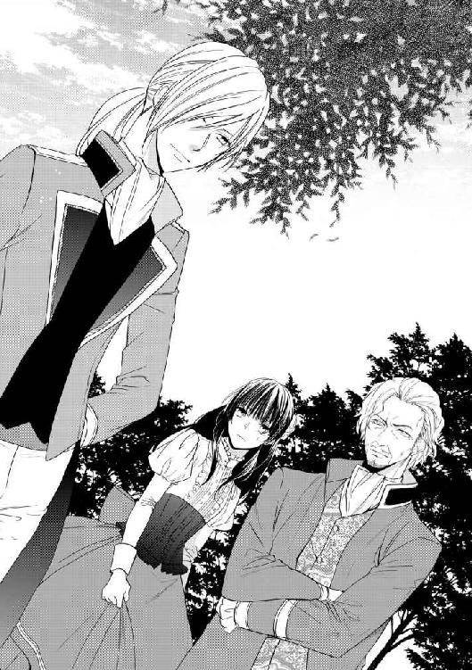
「お疲れ様でした」
そんな彼の内心を見透かしたように、ユリスが優しく声をかけてくれる。
「ああ、ありがとう。ええと、ユリス、卿、で、いいんでしょうか」
「ユリスとお呼びください」
思えば、ライオール抜きで彼と話すのははじめてだ。少しどぎまぎしながら話しかけたニールに、青年は優雅な仕草で深々と頭を下げる。
「参りますのが遅くなって、申し訳ありません。何か、お困りのことはありませんでしたか」
「......ライが、あなたをここへ寄越してくれたのですね。カシュバルが行ったから？」
「ええ。本当は、ライオール様ご自身がお越しになりたいご様子でしたが......その、少し不都合があるかと思われましたので、僭越ながら私がまかり越した次第です」
ユリスは巧みに言葉を濁したが、その『不都合』がどういうものかは、ニールにも想像がつく。先刻のウォルブラッド公爵のことを思い出し、ニールはため息をついた。穏やかなユリスが相対しても、ああも険悪だったのだ。これが、元々公爵に反感を持っているライオールでは、きっとニールを助け出してくれるどころではなかっただろう。
「あなたが来てくれて助かりました。でも......ごめんなさい」
「何がですか？」
「あの......嫌な思いをなさったのではないかと思って。さっきの......」
思うと言うか、確実にしたはずだ。いくらライオールの命令とはいえ、ニールを公爵から引き離すために、暴言を聞かされてはたまらないだろう。心苦しく詫びると、ユリスは微笑んで答えた。
「ああ、いいえ、平気ですよ。慣れておりますから」
「慣れて......」
「あの方は、そういう方なのです。特に、私は下級貴族の出ですから、余計にあの方は気に食わないのでしょう」
どこかで、聞いたことのあるような話だ。正直、庶民の生まれのニールには、貴族というだけで雲の上の人間という気がするのだが、実は中にもいろいろあるらしい。
「じゃあ、ユリスも、ライが見つけて側付きに取り立てたの？」
何気なく尋ねたが、ユリスは驚いたらしい。軽く目を見開いたが、すぐに落ち着いた声音で応じた。
「ご存じだったのですか。ライオール様からお聞きに？」
「いや、前にカシュバルが同じようなことを言ってたから。彼も田舎から出てきて、本当なら近衛騎士になんてなれる身分じゃなかったのに、ライが目をかけて取り立ててくれたんだって言ってた。よくある話なの？」
「よくある、と言いますか......」
尋ねられたユリスは、少しの間、どう言ったものか考えを巡らせたようだった。
「......それが、ライオール様のお考えなのです。どのような者でも、ふさわしく働く能力さえあれば、身分に関係なく宮廷の仕事を任せようとお考えなのです――ウォルブラッド公爵の宮廷とは違って。そうでなければ、私も、国王陛下のお側に仕えさせていただけることなどなかったでしょう」
「でも、あなたは......とても王宮に馴染んでいらっしゃるように思えます。どちらのご出身なのですか。王都の近く？」
王都に来ても、訛りが抜けずに気後れしている近衛騎士とは違い、彼の話し方は実に洗練されていて美しい。もしユリスも地方の出身だったとしたら、やはり苦労したのだろうか。ニールは何気なく尋ねたが、しかし対するユリスの表情がわずかに変わる。穏和な微笑みはそのままに、ただ向けられる眼差しが鋭くなった気がする――ニールの内心を見透かそうとするように。
「......西の、田舎の出ですよ。ここからは、馬で三日はかかるでしょうか。どうして、そのようなことをお訊きになるのです？」
「あ、ご、ごめんなさい。お気を悪くするつもりではなかったのです。あなたの話し方がきれいだから......カシュバルは、王宮の話し方に慣れないと言っていたんです。あなたみたいに話せたら、きっといいのにと思って。もちろん、わたしもだけど」
いきなり素性を尋ねたりして、不躾だったのは確かだ。ニールが顔を赤らめて詫びると、ユリスもまた表情を和らげて、ああ、と応えた。
「そういうことでしたか。......異国の方や地方の出身者の言葉が、この王宮のものと違うのは仕方のないことです。時間が経てば慣れますし、そもそも無理に合わせる必要もないのではありませんか。私の場合は、単に最初から身に付いているというだけです。こういうことには、厳しい家でしたので」
田舎貴族の、貴族なりの矜持といえばそうかもしれない、とユリスは言った。しかし、もっと現実的な理由もある。
「......我々のような下級貴族は、地所の収入だけでは食べていけません。何か生業を持たなければならない。我が家の場合は伝統的に、家庭教師や侍女をする者が多かったのです。今でも、他の一族の人間はそうしています。他の国の王族に仕えている者もいますよ」
貴族といえども、働かなければならないのだ。これまでは、貴族というのは皆一様に威張って遊んでいるものだと思っていたニールは、この話に素直に感心した。
「素晴らしいことですね。ちゃんと働くなんて、立派です」
「......アーセルンの王宮に仕えることは、我が一族の悲願です。ずっと遠ざけられてきた、私たちの」
だがもちろん、下級とはいえ貴族のユリスにとっては、その告白は名誉なものではない。彼は目を伏せて答えたが、やがてその視線を上げてきっぱりと言った。
「私は幸運でした。ですから、ライオール様には誠心誠意お仕えしたい。あの方のお側にあって、この宮廷を、新しくしなければならないのです」
摂政公の治世において、宮廷では身分と出自が、もっとも考慮される基準であった。かつては自身が軍部に籍を置いて、その能力主義に慣れ親しんでいたはずのウォルブラッド公爵は、しかしどういうわけか王宮には、全く別の規範を持ち込んだのだ。
「ライオール様は、早くからそれを正したいとお考えでした。ですが、成年になられるまでは、ウォルブラッド公爵の保護下にあられて、そのようなことをなさることはできません。あの方が成年前にできたのは、側付きの侍従や、御身をお守りする近衛騎士をご自分で選ぶことくらいで......私も、かの近衛騎士も、そういうお考えがあってこそ、あの方にお仕えできる身となったのです」
そう言うユリスの声音には、どこか誇らしげな響きがあった。そういえば、カシュバルも同じような様子だった、とニールは思い出す。ライオールが彼を見出してくれたのだと言った。だから彼のために奉仕するのは当然、むしろ光栄なことだと信じているようで。
――......まあ、何か、ちょっとそういうとこあるよな、あいつ。
さすがに、彼らほどには思い込めない。しかし、ニールが今、危険を冒して王宮内に留まっているのもまた、そういうことなのかもしれなかった。ニールの見たところ、ライオールはあまり王様らしいところはない。強そうではないし、怖くもないし、ニール自身と同じ程度には子供っぽいと思うところもある。けれど、彼に手を差し出されると、ついそれを取らずにはいられない――この世界で、たくさんの名もない人間の中から、彼だけが自分を見つけ出してくれたような気がしてしまう。
「――ですが、ウォルブラッド公爵にはお解りにならない」
だが、続けてユリスがそう言ったので、ニールははっと我に返った。
「ウォルブラッド公爵家は、元々大貴族です。公爵ご自身も、それで若い頃から、当然に要職を預かっていらした。あの方は、そうしたやり方しかご存じない。ふさわしくない者が権力を持ち、取るに足らない血の繋がりを盾に、争い合うばかり――あの方がいらっしゃる限り、この国はいつまでも変わらない」
穏やかな声音はそのまま、しかしその奥には、やるせない感情が押し込められているように聞こえる。なるほど、血統に拠らず王宮入りを果たしたユリスの立場からすれば、現状は決して歓迎できないものなのだ。
なるほど、とニールは改めて納得した。これまで、ライオールがことあるごとにウォルブラッド公爵に隔意のある様子を示していたのは、単に自分の頭を抑え込む目障りな年長者だからだと思っていたが、どうやらそれなりに真っ当な理由があるらしい。
――でも......。
しかしふと、ニールは思った。ライオールの方はそれでいいとしても、では公爵の方はどう思っているのか。
――それでもライオール様は、閣下とはお会いにならないと思いますよ。
先刻、ユリスがそう言ったときの公爵の表情を思い出した。ほんの少ししか直に接したことはないニールの目から見ても、あの公爵閣下は尊大で強権的である。何もかもが、自らの手に掌握できていないと気が済まない性質なのだろう。大貴族の出で、つい最近までは、王国の誰もがひれ伏す特権的な地位を占めていた人間が、たとえ国王の信任厚い侍従とはいえ、ライオール本人からでなくこう言われて、腹に据えかねないはずがない。
けれどあのとき、公爵の顔を過ぎった表情は、怒りばかりではなかった。確かに怒りもありはしたが、それ以上に彼の心を占めていたのは......。
「......ライも、そう思ってるの？」
突然、疑問を口にしたニールに、ユリスは不思議そうな顔をした。とっさに意味が掴めなかったらしい彼に、ニールは改めて正しく尋ねる。
「ライも、公爵閣下のこと、邪魔だと思ってるのかな。この国をよくするためには、もう要らないって」
「......そのようにまでは、思ってはおられないと思いますが」
さすがに、この直截さを肯定するのは憚られたのだろう、ユリスは多少言い澱む。が、結論としては、物柔らかに答えた。
「ですが、公爵閣下のやり方は、あまり喜ばしくは思っておられないでしょう。もちろん、公爵閣下が王国の重鎮であられることには違いないのですが、それでも、この国の主はライオール様です。......公爵閣下にも、道理が解っていただければよろしいのですが」
だがその口ぶりは、そんなことが決して起こり得ないと思っているかのようである。ニールは何故か、胸にもやもやするものを感じた。確かに、公爵はライオールにとって、現状道理を弁えない厄介な障害というべきものだ。しかし、彼はどうしてそんな態度を取り続けるのだろう。摂政だった頃の権力に未練があるからか、それとも......。
「殿下。よろしければ、そろそろ参りましょう」
黙り込んだところを促されて、ニールは思索から引き戻された。
「？ 参るって、どこへ？」
「ライオール様のところへ。お呼びになっていると、申し上げたかと思います」
「ああ......口実じゃなかったんですか」
てっきり、彼を公爵から引き離してくれるためだけの、言い訳だと思っていた。
「でも、まだ仕事中なんじゃないの？ わたしがほいほい訪ねていっていいのかな」
「もちろん、歓迎なさるのではないでしょうか。ライオール様がお美しい婚約者に夢中なのは、私もよく存じております。決して邪魔にはされませんよ」
「............」
まるで悪気のない口調で、にこにことそう言われれば、ニールは顔を引きつらせるしかない。王宮の噂話とは、どれだけどういう形で広まっているのだろう。
しかし、事実無根だと声を上げて訴えることもできない。無力感といたたまれなさで項垂れながら、ニールは何とか、ありがとう、とだけ答えた。
＊ ＊ ＊
「――くそ、グアドの奴！」
ニールから、北翼の庭園で起きたことを聞かされたライオールは、高貴な身にはあるまじき罵り言葉を吐き出した。......聞いているニールとしては、何となく落ち着かない。おれのせいじゃないよね？ と心の中で言い訳をする。
「人のことを、何だと思ってるんだ。この私が、よりにもよって、おまえに入れ上げて正気をなくすなんてこと、あるわけないだろう！ 本当ふざけんなよ」
「ああうん、ごめん、おれが悪かったから、頼むからそれ止めて」
今のは確実に、自分のせいだ。ニールはがっくりと項垂れて嘆息した。これまでの人生、自分の言葉遣いが雑なことを、どうこう思ったことはなかったが、しかしそれが他人に――それも、到底悪い言葉などとは無縁に生きているはずの人間に口にされると、何とも言えない罪悪感を覚える。
「もう、真似すんなって言ったろ！」
「うるさい、真似してるわけじゃない。勝手に移るんだ、仕方ないだろう」
とはいえ、ライオールの言うことも、それなりにもっともである。これだけ毎日顔を合わせて、ああだこうだ言い合っていれば、お互いの特徴的な言い回しなどは、勝手に耳に馴染んで、ついには口から出るまでになってしまって不思議はない。
いや、毎日というよりは、毎夜と言うべきか。昼間、ウォルブラッド公爵がニールに指摘したことは、ある意味では正しい。確かにライオールは、足繁く、というよりはほぼ毎晩、ニールに与えられた寝室に通ってくるのだ。一応は、二人の共通の目的であるところの、偽の花嫁を送り込んだ犯人を探すため、また、秘密を抱えるニールに何か不都合なことが起きていないか確かめるため、というのがライオールの言い分だが、実のところそれ以外にも理由はあるとニールは思っている。
「大体、染まってるのは私だけじゃない。そっちだって、最近は随分とアーセルン風の喋り方をするじゃないか。お互い様だ」
「おれは練習してるの！ ライは王様なんだから、他所でうっかりそういう話し方するなよな。皆、ぎょっとしちゃうだろ」
「ふうん......面白そうだ」
「止めろってば！」
ニールが呆れて言うのに、皮肉な笑みを浮かべて応えると、ライオールはぱたんと寝台に横になった。とうに靴も脱ぎ捨てて、すっかり寛ぐ体勢だ。
――まったく、おまえん家かよ......いや、おまえん家なんだけど。
そう思うニールもまた、女物の寝間着の下で、寝台の上に胡坐をかいて、頬杖をついている。貴婦人にはあるまじき姿、どころか身分ある人間としては考えられない無作法だが、それを責める者はここにはいない。
いつの間にか、二人のここでの夜の過ごし方は、こういうやり方になっていた。どんなに作法に外れた振舞いをしても、そのことはお互いに何も言わない。
――だって、疲れんだもんなあ......。
一日中、慣れないドレスを着て慣れない作法に従わされ、いつ正体がばれるかどきどきして暮らしているのに、この上、ドレスを脱いだ後まで気詰まりでいたくはない。ライオールがいれば、侍女は絶対に勝手に入ってきたりはしないので、その点、彼の来訪をありがたく思っていたニールだが、しかしライオールはライオールで、同じように思っているのだろう。衆人の中で、自分の役を演じてみせなければならないのは、彼の方も同じだからだ。
日中、ユリスの助けでウォルブラッド公爵から解放されてから、ニールははじめて、北翼にある国王の執務室を訪れた。北翼は国王の住居として使われる建物で、だから執務室とは言ってもより私的なものだと説明されたが、そこで会ったライオールは、こうしてニールの寝室で会うライオールとはどこか違った。何人もの人々が、恭しく一礼しながら出入りするその部屋でニールを迎えた彼は、こともなげに、庭園散策で実りはあったかと『アーセルン国王』の声で訊いた。だからニールも『リュセニア大公女』として、楽しく見学しましたと答えた。それ以上の会話はできないあの場所が、ライオールの『家』なのだ。だからこそ、彼はこの寝室にやってくるのだ。
ニールは一つ息をついて、話を切り出した。
「そういえば......昼間は、ありがとう。助かった」
言いかけると、寝台にだらしなく寝転がっていたライオールが、はっと顔を上げた。おもむろに身体を起こして座り直したのは、これから何の話をするかを理解しているからだろう。
「いや。......こっちこそ、気が回らなくて悪かった。まさか、グアドがおまえの方に何か言うとは思わなかった」
聞けば、ライオールは数日前に、既にウォルブラッド公爵の訪問を受けていたらしい。内容は、大体今日ニールが聞かされたことと同じで、要は結婚式を挙げる前から、婚約者に夢中になって人の噂になるような不品行を犯すとは何事かということらしく、当然ライオールは怒った。怒っただけでなく、公爵を身の回りから締め出して、顔も合わさないでいるという。
「不品行だと！ よくもそんな、根も葉もない疑いを」
まあ、怒る気持ちは解らないでもない、とはニールも思う。だが同時に、今更何を言っているのかという気もするのだ。
「でもそんなの、怒ることないじゃん。本当のことじゃないんだしさ」
「これに怒らないで、何に怒るんだ！」
「だって、前にライが言ったんじゃん。『本当のことを知らない者のことを、気にすることはない』ってさ。おれに付いてる侍女たちも、同じ勘違いをしてたけど、そのときは全然怒らなかったのに、何で公爵閣下のことはそんなに怒んの？」
「............」
言われてはじめて気付いたというように、ライオールは目を丸くしてニールを見返した。何か言い返そうと口を開くが、しかしうまい説明が見当たらない様子で口を閉ざす。しばらく、難しい顔をして考え込んでいたが、やがて納得のいく理由を思いついたのか、重々しく言った。
「......それは、全然違うことだ。王宮の侍女なんかが、くだらない噂をするのは仕方のないことだ。でも、あの男は立場が違う。長く王国の摂政で、今も取り巻きの多い、この国の有力者なんだ。それが、侍女と同じ程度の見識しか持ち合わせないとなったら、腹が立って当然だろう」
「侍女と同じ......つまりさ、それって、公爵閣下が侍女と同じくらいにしか、本当のことを知らないってことだよな」
ライオールの答えは、質問に対してはいささかずれた回答という気がしたが、しかしこの流れはちょうどいい。言葉尻を捉えて、すかさずニールはそう言うと、相手が何か言う前に急いで続きを言った。――今夜、ライオールが来たら言わなければと思っていたこと。
「ライ、やっぱりさ、公爵閣下は違うんじゃないか」
「何だって？」
「あの人は、犯人じゃねえよ――大公女を偽者にしたりはしてない」
何故なら、彼はニールが男だとは知らない。もし知っていたら、侍女たちの噂話を信じたりはしなかったはずだ。ニールが女で、本物の大公女だと信じているからこそ、ライオールへの急接近を疑って、あんなことを言ってきたのだ。
しかしそれは同時に、有力な容疑者を失うことでもある。案の定、ライオールは不満そうな顔をした。
「だが......グアドでなければ、誰がやるんだ、こんなこと。偽者を立ててまで、無理矢理リュセニアの大公女と結婚しても、得をするのはあの男の他にはいない」
「そうなんだよなあ......」
そこで行き詰まるのだ。毎夜、話し合っているときは必ずそうなるように、二人は同時にため息をついた。王宮内でできることは、二人ともにやってきている。ライオールは、王宮への出入りの記録を、ニールが襲われた日に限らず範囲を広げて調べてみたが、特に不審な動きをしている者は見当たらなかった。ニールは、大公女に挨拶に来る貴族たちの反応を探ってみたが、いずれも同じようなものだった。アーセルンの貴族たちは、リュセニアの大公女を歓迎していないわけではない、単に自分の一門の娘であったらもっとよかったと思いはしているが、それでも『摂政公』の肝煎りであるこの婚約に反対して、余計な波風を立てるのはうまくないと考えているようだ。
「うーん......じゃあ、別のところから考えてみるしかねえかも」
「別のところって？」
呟いたニールに、ライオールが怪訝そうに尋ねた。
「王宮の中は、もう散々探しただろ。だったら......王宮の外はどうだろう」
「外って、そもそもおまえが言い出したんだぞ。アーセルンの王宮の中に犯人がいるって」
それは間違いない。あの夜、闇に紛れてニールを脅しに現れた男は、確かに現実の存在だったのだ。しかし彼は、まるで空気に溶けて消えてしまったかのように、少しの痕跡も残していない。
「うん。でもこの際、あいつのことはちょっと置いといてさ。――たとえば、アーセルンはリュセニアの大公女を嫁にもらっても、個人的に得する人は、公爵閣下くらいのものなんだろ。でも、リュセニアの方は違うんじゃねえの？ アーセルンは大国なんだし、大公女をライに嫁がせることができたら、個人的に得をする人間がいるんじゃねえかな」
元々、リュセニアの側に、この計画の協力者がいるのは解っている。たとえば、ニールが王宮へ向かっている間、彼に大公女のふりをするための最低限の知識を教え込んだ侍女などは、当然に陰謀者の仲間だろう。しかし彼女がどこの誰か、ニールには解らない。大公女に従ってアーセルンへ来たリュセニアの使節の人間が、大公女のすり替えを心得ているのかどうかさえ解らない。
「......リュセニアか」
ライオールは難しい顔で腕を組んだ。もし、単に事情を知りたいだけなら話は簡単で、使節の責任者でも呼び出して絞め上げればいい。しかしそうすると、ニールが大公女の偽者を務めていたことを明らかにしなければならない。その上、この件にはアーセルン側の人間も関わっていると思われるからには、強硬な手段に訴えれば外交的な問題になりかねない。
「リュセニアの使節の人間は、一応調べたんだ。でも、おまえの言うその侍女は見つからなかった。おまえが一人で王宮に入った直後に、辞めて姿を消したらしい。まず確実に、疾しいことがあったんだと思うが......他国の使節がすることに、文句を言うわけにもいかないからな」
それに、たとえライオールが圧力をかけてそれを止められたとしても、まず間に合わなかっただろう。侍女は、ニールと一緒に王宮に入れないと解った時点で、素早く姿を消したに違いない。貴重な糸が一本切れたらしいことに、ニールは落胆したが、それでもまだ、考えてみることだけはできる。
「とにかく、調べてみてくれよ。リュセニアの人間で、大公女を嫁にやって得する奴。そいつの繋がりを辿れば、アーセルン側で動いてる人間が解るかもしれない」
「............」
しかし、希望を賭けるニールとは裏腹に、ライオールは何やらじっと考え込んでいる。やがて疲れたようにため息をついて、解った、と言った。
「まあ、やってみてもいいかもしれないな。確かな証拠を掴むために」
「証拠？」
「ニール、もしおまえのその考えが正しかったとしたら、やっぱり犯人はグアドだ。他に考えられない」
「どうしてだよ？」
「元々リュセニア大公家は、この縁談を望んでなかったからだ。アーセルンに大公女を嫁がせれば、リュセニアは我が国寄りと見られて、北のバラン王国との均衡が崩れるかもしれないと。それを無理に押して、リュセニアをこちら側に付ける縁談を取りつけたのはグアドだ。大公家は、大公女の縁談で損をしたとは言わないまでも、本来の外交路線を変更させられて、得をしたとは思っていないだろう。もしリュセニアで、大公女の縁談に尽力した者がいたとしたら、そいつに褒美をやるのは大公家じゃなく、狙いを成功させたグアドだろうさ」
「あー......」
そういえば、前にもそんな話を聞いた気がする。ニールは思いあまって、ぐしゃぐしゃと頭を掻き回した。人間と人間の間の話ならまだしも、こうした国家間の問題というのは、どうも頭に入らない。これまでただの平民として生きてきて、まるで縁のなかった事柄だからだ。
「ああもう、わっかんねえなあ！ どう考えても、公爵のおっちゃんが一番やりそうなのに、でも絶対に違うなんて」
ぐたっと前のめりに寝台に倒れて、ニールはぶつぶつと文句を言った。こんなことが、あるわけがないのだ。旅の一座からニールをさらって、偽の大公女に仕立て上げた人間は存在している。王宮の中で、正体を悟られるなと彼を脅した男も実在している。なのにそれが思考の中では、こんなにも呆気なく存在しないことになってしまう......。
「――別の考え方もある」
ふと、ライオールがそう呟いたので、ニールは再び顔を上げた。
「おまえを大公女の偽者にしたのは、やっぱりグアドなんだ。ただ、おまえが男だってことだけは知らなかった」
大公女の偽者を作るという大胆な計画を立てたにしろ、公爵自らが動くとは考えられない。裏仕事を任せられるような人間を使ったはずで、その人間が、黒髪に紫の瞳という条件だけで、男であるニールを間違えてさらってしまった。
ニールも一応、その可能性を考えてみた。だが違う。首を横に振る。
「それはないよ、ライ。最初におれをさらったって言った奴は、おれが男だってちゃんと解ってた。ばらすなって言ってたくらいだし。それに、男だろうが女だろうが、もし俺が公爵の用意した花嫁なら、逆にあんなこと言ってこないだろ。おれがライと仲良くしてる方が、あの人にとっては都合がいいはずじゃん」
「............」
「............。それにさ、おれ思うんだけど......あの人は、おまえにそんなことはしないよ。偽者の嫁なんか押し付けて、おまえに苦労させるようなことはさ」
多分、と付け加えたのは、ニールには公爵に感じたそれが、どういうものか解らないからだ。彼の人生には、かつて存在したことがないもの。
――何があっても、守らなければならない。
――絶対に、ただの一つも、傷が付くようなことがあってはならないのに。
あのとき、ニールは公爵を責めているはずだった。彼が強権的で、他人を思い通りに動かそうとする人間なのは疑いない。そしてそういう人間なら、ニールはいくらでも知っている。そういう連中は、他人を利用するばかりだ。考えているのは、常に自分のことばかり。
けれど、あの瞬間、公爵が考えていたのはおそらく、自分のことではなかったのだ。守るべきもの、傷つけてはならないもの――彼が彼なりのやり方で、長く大事にしてきたもの。
本当は、理屈など関係ない。公爵がニールに、得体の知れない警戒と非難を向ける一方で、その背後に誰を庇っているのか気付いた瞬間、ニールには彼を疑う気持ちがなくなってしまった。他の大人と同じように、彼はニールのことは踏みつけて気にもかけないだろう。だが、この世でただ一人にだけは違うのだ。
「あの人は、おまえのことが大事なんだよ。だから、自分で『リュセニアの大公女』をおまえの結婚相手にしたくせに、後でおれのこと気に入らないって文句言ってくるのは、そういうことなんじゃないか。地位を守るためだったら、『リュセニアの大公女』がどんな性格だって、別に構うことはねえはずなのに......だからきっと、あの人のすることは、おまえのためだと思うんだよ」
一体どんな気持ちなのだろう、とニールはぼんやり想像した。彼にとって大人というのは、最低限の庇護の代わりに、他の全てを奪っていくような存在だ。痛めつけられるのではなく、あんな風に庇われて、大事に思われるというのは、どういう感じがするものだろう。自分が決して、その対象になり得ないことは解っている――けれどもし、そうだったら......。
「――何が、私のためだ」
だが、その捉えどころのない夢想も、低く吐き捨てる声でかき消える。はっと我に返ったニールは、目の前のライオールが忌々しげに自分を睨んでいるのを知った。暗い瞳には、彼が想像したような優しい輝きは見られない。
「私のためなんかであるものか。あってたまるものか。昔からそうだ――あの男は、私に押し付けることしかしない」
「ライ」
「何が、私のためなんだ？ 要らない結婚相手を押し付けることか。思う様勝手に作り変えた後で、今になってこの国を押し付けることか。私の言うことになんか、一つも耳を貸さなかったくせに？」
「............」
「あの男から受け取るもので、私が望んだものなど一つもない」
硬い表情で言い切るライオールに、ニールは何と言っていいか解らなかった。その言葉ではなく、その表情に、返す言葉が見つからない。彼がこんな顔をするのを、今まで見たことがなかった。張り詰めた表情は、激しい憤りのようにも――深い悲しみのようにも思える。
小さく軋む音がして、ニールの座り込んでいる寝台が揺れた。ライオールが弾みをつけて、ぱっと床に足をつけて立ち上がったからだ。
「もういい、解った。――結局、おまえも、グアドの肩を持つんだな」
「はあ？ 何言ってんだよ！ 肩を持つとか、そういう話じゃなくて......」
「とにかく、おまえの意見はよく解った。後は、こっちで何とかする。――これまで巻き込んで悪かった」
「！ 待てよ！」
ライ、と名前を呼んだが、彼は振り向きもしなかった。足早に部屋を横切ると、何も言わずに、扉を開けて出て行ってしまう。
「............」
取り残されたニールは、しばらく呆然としていたが、やがてゆっくりと息を吐き出した。
何がライオールを怒らせたのか、何となく理解できた。ある意味で、ニールは彼を裏切ったのだ。彼が最も気に病む部分、何よりも厭わしく感じていることを知っていながら――それを、羨ましいと思ってしまったのだから。
＊ ＊ ＊
「ライオール様」
廊下に出ると、突然、声をかけられた。一瞬驚くが、しかしそれが聞き慣れた声であることに気付いて、ライオールは相手の名を呼ぶ。
「ユリス。――まだ待ってたのか」
今日はもう、下がっていいと言ったのに。既にもう、時刻は深夜に近くなって、夜衛を務める者を除けばどんな人間でも、当然仕事を終わらせていい時間だ。国王の側について、公私においてその手足となるべき侍従も、その例外ではない。
しかし主の気遣いに、仕事熱心な侍従は微笑んで答える。
「いえ、どうぞお気になさらず。勝手にお待ちしていたのは私ですから。......少し気になったので」
「何が？」
「大公女殿下のご様子は、いかがでしたか。昼間のことを、あまり気にされていないとよろしいのですが」
心配そうにユリスが言うのは、昼間、彼に命じて、ニールをグアドの追及から助け出したことだろう。ライオールが、偽の花嫁候補である彼と急に親しくなったように見えることが気に入らない公爵は、ライオールに直に言うだけでは飽き足らず、ニールの方まで押し掛けて行ったのだ。
それを防げなかったのは、自分の手落ちであったと自覚はしている。しかし、先刻の様子を見るだに、ニールにはさして堪えなかったようだ――あんなことを言うくらいなのだから。
――あの人は、おまえのことが大事なんだよ。
「大丈夫だ。......気にするどころか、意外と話が合ったんじゃないか」
よくも、そんなことが言えるものだ。あの男が彼にするようなことが、人を『大事にする』ということなのだろうか。あれほどに支配的で、独善的で、こちらの意志も顧みないやり方が。
育ててくれた恩があるといえば、そうなのだろう。王家の子として生まれても、早くに両親を亡くして信用できる身内もいなければ、ただの孤児と何ら変わりはない。名ばかりの玉座とはいえ、そこに座り続けたまま、未だに生きていられるのは、間違いなくウォルブラッド公爵のおかげだと解っている。
だが、彼に生命を救われたときから、彼に運命を縛られている。摂政の位を返上し、一介の貴族に戻った公爵だが、しかしその姿勢や影響力まで、ただの人に戻ったわけではなかった。国王の政治顧問として、未だに宮廷に出仕しては、思う様に人を動かす。ライオールの言うことなすこと、彼は反対するか、あるいはもっと手際よくやってしまう――国王の存在など、必要もないくらいに。
更に悪いのは、それが人々にとっても、当然だということだ。ライオールに首を垂れる廷臣のどのくらいが、真実彼に平伏しているだろう――彼らが従っているのはライオールではなく、その背後に今も立っている、彼の庇護者の影になのだ。
ある程度は、それも仕方のないことと解っている。長くこのアーセルンを統治してきて、公爵には実績がある。たとえ王家の血を引いていても、まだ何事も果たしていないライオールが、すぐに同じだけの権威を獲得できるはずがない。だが、それならいつ、何事かを果たせるようになるのだろう。グアドの影で成長した彼は、結局いつまでもこの影から抜け出せないままなのではないか......。
「話が、ですか」
足早に廊下を進む主に従いながら、ユリスは当惑したように呟く。しかし察しのいい侍従は、主の内心を正しく見通したようだった。嘆かわしそうに、一つため息をつく。
「......大公女殿下は、かの公爵閣下のお口添えあっていらした方ですからね。それではあの方も、公爵閣下の影響下にいらっしゃると考えた方が、よろしいのかもしれませんね」
せっかく仲良くおなりのようでしたのに、と、残念そうにユリスは言った。
「おまえは、この結婚話に反対だったんじゃないのか。グアドの持ち込んだものだから」
「公爵閣下に限らず、誰が持ち込んだものでも反対しますよ。私は、ライオール様にはお好きな女性と一緒になっていただきたいだけです。ただ、確かにこのお話が実現したなら、公爵閣下はきっと得意満面で、しばらく楽隠居はしてくださいますまいとは思いましたが」
「............」
「それでも、あなたが大公女殿下をお気に召すなら、それでもいいと思っていたんです。ですが......大公女殿下が、あなたより公爵閣下の言に左右されるようならば、やはり反対せざるを得ませんね」
抑制の利いた口調には、決して憤りや不満のような感情は聞こえなかったが、しかしライオールには彼の言いたいことがよく解った。これ以上、王宮の中に、公爵の権威に与する人間を増やすべきではないということか。
「誰でもそうだ。『摂政公陛下』のご機嫌を取りたくない者なんかいるものか」
後見人の綽名を、彼の前で口にする者はないが、それでも耳に入らないでいるはずがない。多少、自棄になってライオールは言った。まったく、皆そんなにもあの男の方がいいのなら、彼こそが王となるべきだったのだ。血筋の上でだけは正統な、飾り物の子供の王などを養育せず、とっとと排除してしまえばよかったのだ。きっと誰にとっても、その方がよかったに違いない。人々は有能な為政者を王と仰ぐことができる。
そしてライオールも、こんな思いはせずに済んだ――彼に劣らぬ為政者でありたいと。彼のように仕事を果たして......いつか、彼に認められる王になりたいとなどと、願うことはなかったはずなのに。
「ライオール様」
しかし、固い声で名前を呼ばれて、ライオールは己の思索から引き戻された。反射的に振り返った声の主は、珍しく厳しい表情をしている。ああ、しまった、とライオールは失言を悟った。こんなことを、考えてはいけなかった――何よりも、彼の理想を理解してくれる人の前で。
「ライオール様、私はあなたの臣です。ウォルブラッド公爵でも、他の誰でもない、あなたの――あなたと、あなたの王国のために働く者です。あなた以外の他の誰も、私の王にはなり得ないのに」
「ユリス」
「あなたの理想は、私の理想です。あなたのためなら、どんなことでも致します。どうか、お忘れにならないでください」
「ああ、解っている。......変なことを言って悪かった」
数年前、ユリスを侍従として取り立ててから、彼は常にライオールの味方だった。同志と言ってもいい。家柄は悪くないが小貴族の息子であるユリスは、ウォルブラッド公爵の施政の下では、到底王宮で役職を得ることなど叶わなかっただろう。
家柄や身分で、才能のある者が日陰の身に留まらなければならないのは、理不尽であるばかりか国家の損失だ。ウォルブラッド公爵が十年以上もこの国を支えてきた功績を認めないわけではないが、しかしライオールは、その施政をそのまま継ぎたいとは思わなかった。彼は国王だ、望んだわけではないにしろ、そう生まれついたのなら、己の務めを果たしたい。公爵とは違うやり方でも、この国をよりよくするためのことを――そしてユリスもまた、そのために力を貸してくれる。
「――公爵閣下の動きに、ご注意なさる必要があるかと」
人気のない廊下を歩きながら、ユリスが声を抑えて言った。
「そして......残念ながら、大公女殿下にも、ご用心なさった方がいいでしょう。もしもあの方が、公爵閣下と意を通わせているならば、姫君は閣下の絶好の足がかりとなります。あの方が、再び宮廷に力を取り戻すことになる。それだけなら、まだいいですが......」
「まだ？」
「......もし、ライオール様が――不敬をお許しください――お世継ぎを得ず亡くなられたとして、次代の国王を決めるのに、王妃であられる方の意見というのは、かなり大きく情勢を左右します。もし予め、彼女を味方につけられると解っていれば、そういう争いを引き起こすことも可能ではありませんか」
「............」
「ライオール様」
ふと、後ろからついてきていた足音が止まる。数歩行きすぎて振り返ったライオールに、ユリスは恭しく頭を下げる。
「どうか、お願いです。――ウォルブラッド公爵を内偵する、ご許可を」
つまり、ユリスはウォルブラッド公爵に、何か疑わしい点があると見ている。強引にリュセニアの大公女との縁談を進めてきたのも、単に王妃の地位を他の貴族の娘に取られないとする穴埋めというだけではなく、何かもっと許し難い陰謀が秘められているのではないかと。
同じく、それと疑いながらも、しかしこれまでライオールは、公爵に対して積極的な疑いを示すことはしなかった。まさかそこまで、という思いがあったからだ。これまでずっと側にいた人間が、そんなことを願っているとは考えたくなかった。
だが――このまま疑い続けるのは、もっと嫌だ。
「......解った」
ついに、ライオールは口にした。幼い頃は、絶対にするはずがないと思っていた命令を。
「ウォルブラッド公爵グアドを調査対象にすることを許す。いいことも悪いことも、全て調べろ。――私が知りたいのは、真実だけだ」
「だから、そういうことはもうしないって言ったじゃん！」
リュセニアの大公女殿下の居室に、情けない悲鳴が響き渡った。今日も今日とて、ニールは侍女たちの手から逃げ回っている。柔らかな素材の部屋着を身につけた彼に、張りのあるかっちりとした正装用のドレスと小物類を抱え、侍女たちもやはり逃すまいと迫ってくる。
「そうは仰いましても、そのお姿ではいけませんわ」
「そうですよ。王宮の晩餐会には、もっとも格式の高いドレスで出席するのが決まりなのですから」
ことの原因は、今夜、王宮で開かれる晩餐会だ。リュセニア大公国からの使節を主賓に招き、アーセルン王国の高位の貴族たちが出席して、新たに国王の花嫁となる姫君が衆目に紹介される、儀礼上の婚約式でもある、らしい。リュセニア大公女フィルネリア姫が、アーセルン国王に嫁ぐということは、既に王宮どころか、国中で知らない者はないほどに周知の話であるはずだが、こういう手続きを踏まねばならないというのが、いかにも王宮らしい。
「大公女殿下が我が国にお越しになってから、はじめての公式行事です。決して手抜かりがあってはなりませんわ。私たちも、入念に準備を重ねておりましたのに......殿下にも、もう少し努力していただかなくては」
ニールにとっては、面倒くさいどころか、もっと積極的に拒否したい恐ろしい会なのだが。
「き、着るのは着るよ。何でも着るよ！ でも、自分でやるって！」
以前、同じ状況に陥ったときは、救いの手があった。しかし今は、それも期待できない。侍女たちの一人が答えて言う。
「自分でと仰っても、限度がありますわ――今度は、陛下もいらっしゃらないのに」
だが、その言葉は、はっと辺りの空気を凍らせる。一斉に皆の視線が集中し、発言した侍女は気まずそうに俯いた。この数日、誰もがその件には触れないようにしていたというのに。
微妙な、しかし明らかな空気の変化は、ニールにも感じられた。しかし、彼にとっては今が好機だ。侍女たちの気が逸れた一瞬に、隙をついてだっと駆け出す。
「！ 殿下！」
「――カシュバル！ 来て！」
侍女たちが反応するのと、ニールが扉の外に向かって叫ぶのはほとんど同時だ。次の瞬間、間髪容れずに、大柄な近衛騎士が中に飛び込んでくる。警護対象に何かあったのかと、緊張を漲らせた近衛騎士は、しかし中には侍女たちがいるだけで、特別な危険も見えないことに気付いて当惑したようだった。
「？ 大公女殿下、どう......」
「お願い！ 誰も中に入れないで！」
言いかけるカシュバルの言葉を途中で遮り、ニールは有無を言わさず命令する。侍女の手からドレスを奪うように取り上げると、そのまま寝室に駆け込み、後ろ手に扉を閉める。
背にした扉の向こうで、何やら言い合いが聞こえる。しかしやがて、カシュバルが正しく命令を遂行し、誰も入れまいとしていることが解ると、ようやくニールは息をついた。
「あー......」
改めて、奪ってきたドレスの型を確認する。身頃に、縦に骨の入った胴衣が付いているもので、重いわ嵩張るわで確かに誰かに手伝ってもらった方が着付けやすいものではあるが、ありがたいことに絶対に不可能というものでもない。一応は男で、女よりは力のあるのが、この場合は幸いである。......そもそも女だったら、侍女たちの手伝いを避ける必要もなかったはずなので、これは本末転倒だが。
――でも、そんなこと言ったって、見られるわけにもいかねえし......。
本来なら、もうこんなことを心配する必要はなかったはずだった。彼には秘密を分かち合う、同盟軍がいたはずだったのだから。だが今は、それも期待できない。
――今度は、陛下もいらっしゃらないのに......。
不本意な別れ方をしたあの夜以来、ライオールには会っていなかった。寝室を訪ねてこなくなったのは、侍女たちにも解っているようで、何となく気遣わしげな目を向けられる。結婚前から、早々に国王の寵愛を失ったのかと心配しているのだろうが、まあ彼女たちにどう思われているかはともかく、ニールも自分の出方を考える必要があった。
――まだ、怒ってんのかな。
正直、どうしてそこまで、という思いはある。彼自身の人物の見方として、ウォルブラッド公爵は自分で謀略を仕掛けて、ライオールを陥れるような人物ではないと思ったから、そう言っただけだ。
けれど、あの公爵は、ライオールにとっては特別な存在なのだろう。正の感情にしろ負の感情にしろ、とにかく『特別』なのだ――彼のことになると、まともな判断ができなくなるくらいに。
だが、どうしても、彼に話を聞いてもらわなければならない。公爵以外にいるはずの犯人を、実際に捕まえるためには、どうしてもライオールの力が必要なのだ。
そういう意味では、もしかしたらこの晩餐会というのは、好機なのかもしれない。どこかで機会を捉えて、二人で話すことができれば、今度はうまく話せるだろう。
「――よし」
決意を固めて、ニールはドレスに手を伸ばした。
＊ ＊ ＊
広間には、既に客たちが到着しているようだった。壁で隔てられた控えの間にも、人々のざわめきが伝わってくる。
そして本日の主役たちは、そのざわめきの中を、注目を浴びながら広間に入らなければならない決まりらしい。主役の片割れである国王を待っている間、控えの間の壁に嵌め込まれた鏡に、自分の姿が映るのを見て、ニールは一人で顔をしかめた。『大公女として』その姿に不備があるわけではない。侍女たちが用意してくれた、彼の瞳の色に合わせた明るい紫のドレスは、灯火の明かりの下では上品に煌めき、落ち着いた雰囲気ながら決して地味とは感じさせない。結った黒髪には金の髪飾り、宝石付きの靴も指輪も、他の装飾にも、一分の隙も見られない。侍女たちの苦心の成果と思えば見事と言えるが......しかし『男』としては、かなり常軌を逸した姿と言うよりない。
――何だろうなあ、本当にもう......。
だが、そうして鏡の中の自分を睨みつけていると、部屋の扉が外から開けられた。ようやくやってきた待ち人は、しかしニールの姿を見ると、思い切り不審な顔をして、開口一番こう言った。
「何をしているんだ？ いくら美人でも、自分の姿に見惚れているのは気味が悪いぞ」
「誰が見惚れるか！ あと、美人とか言うな」
まったく、人を待たせておいて言うことがそれか。唸るニールに、しかし相手は反省した様子もない。
「別に褒めたいわけじゃないが、美人は美人だからな。事実だから仕方がない。残念なことに」
「ほんと褒めてねえな！ 残念って何だよ」
「？ おまえは残念じゃないのか？」
「うっ......」
確かに、こんな恰好に違和感がないのは残念だ。残念を通り越して無念である。言葉に詰まって黙り込んだニールに、さすがに気の毒なことを言ったと思ったのか、ライオールは宥めるように言った。
「......まあ、客観的に見て、男だとは絶対に思えないから安心しろ。よく似合ってる」
「心遣いに感謝するよ。ぶん殴りたい」
いいよなおまえは、と、ニールは恨みがましく相手を見やる。袖の折り返しを宝石細工で留めた上着に、王家の紋章があしらわれたマントを羽織って、正装姿の国王陛下は大層見栄えがするのだった。どうせなら、こういう恰好の方がしてみたい......身長が足りないから、きっと彼ほどには良く見えないだろうけれど......。
「今のは、褒めたんだが」
けれど視線の先で、ライオールが困ったように首を傾げるのを見て、ニールは少しほっとしてもいた。前と同じだ――会わなくなるようになる前と、変わらない態度。何と切り出そうか、自然に話ができるだろうかと、密かに気を揉んでいたのだが、どうやら杞憂だったらしい。
と、しかしそこでふと、目の前の相手の顔にも同じような表情が浮かんでいることにニールは気付いた。――もしかして、ライオールの方でもそう思ってくれたのだろうか。だから、わざと嫌でも言い合いになるような話題で話しかけてくれたのだろうか。
――......いや、でも、本当にちょっと傷つくんだけど......。
心遣いをありがたく思わないわけではないが、しかし多少、何か言ってやりたい気持ちがなくもない。ニールは声を落とすと、密かに呟く。
「......誰かさんが手伝ってくれなかったから、大変だったんだぜ。――着替えるときは手伝ってくれるって、言ったじゃん」
おかげでまた侍女に追い回される羽目になった、とニールが不満を伝えると、ライオールははっとした顔になった。やっぱり忘れてたか、とニールは唇を曲げる。
「......すまない、忘れてた。大丈夫だったか？」
「何とかね。でも今度からは頼むって。ライがいなくても何とかするのが本当なんだろうけど、いてくれるとだいぶ風当たりが違......」
「今度はない」
「え？」
「もう、『今度』はないんだ。――おまえに、こんな生活を強いることもなくなる」
「！ それって......」
だが、答えを聞くことはできなかった。問いかけた瞬間に、係官が再び戻ってきて、国王とその婚約者に恭しく告げる。
「お待たせ致しました。お二方とも、どうぞこちらへ。皆様、お迎えの準備が整っております」
ニールが見上げると、同じく彼を見返してきたライオールは、素知らぬ顔を作って目を逸らした。どうやらこの話は、今はお預けということらしい。
「解った。――ではどうぞ、大公女殿下」
代わりに、ライオールは片手を差し出してくる。貴婦人に対する当然の礼儀と心得て、ニールも何食わぬ顔で自分の手を預けた。......何が悲しくて、男に手を取られなければならないのかと思いはするが、それはもう、言っても仕方のないことだ。
とにかく、目の前の困難を乗り越えなければならない――『リュセニア大公女フィルネリア』として、きちんと演じてみせなければ。
足を踏み入れた広間は、ニールを慄かせるほどには広くなかった。とはいえ、二十人ほどの出席者は、特に選ばれて招待された、両国の錚々たる要人ばかりである。数えきれないほどの蜜蝋の光が灯された巨大なシャンデリアの下、細心の注意を払って華やかに飾られた長卓が浮かび上がる。既に席についていた人々が、彼らの入場を一斉に立ち上がって出迎えるのに、ニールは思わず手を握り締めてしまった。威厳のある立派な大人たちが、身動ぎ一つせず彼らの動きを見守っているのだ。大勢の人前に立つ舞台とは、また別種の緊張感である。
しかし、さすがにライオールは、微塵も動揺しなかった。ニールの緊張を察したのだろう、安心させるように一度ぎゅっと手を握り返してくれる。彼のために椅子を引いて先に座らせると、自分の席から一同を見渡して言った。
「まずは、リュセニア大公国の大使閣下をはじめ、異国の客人方に敬意と感謝を。あなた方を我が国にお迎えできたことは、大変な名誉です。この先も、長く良き友人であってほしいと願っています。――皆、座ってください」
そろそろ聞き慣れたはずのライオールの声も、この場にあってはまるで違って聞こえる。いつもより穏やかで、如才のない話し方に、ニールは胃の腑が重くなるのを感じた。これからはじまる会の本質――高度に政治的であること――を、体現するものだったからだ。
ほどなくして、料理が運ばれてくる段になると、周囲の雰囲気は次第に和やかになってきたようだった。元々が、祝い事の席なのだ。難しい交渉などがあるわけではないから、人々の声も明るく、ときどきは笑い声さえ上がる。
が、もちろんニールはそれどころではない。
「――大公女殿下、食がお進みにならないようですが、どこかお加減でもよろしくないのか」
傍らから声をかけられて、ますます胃が縮み上がる。しかし表情に出すのは堪え、ニールは声のする方を振り返った。
「いえ、そんなことはありません、公爵閣下。どれも美味しくいただいています」
「それなら、よろしいが。ご体調が優れないのではないかと、心配致しておりました」
――誰のせいだよ！
言いかけたい気持ちはぐっと胸に押し殺し、ニールは睨まない程度に相手を見やった。視線の先にいる人物は、しかし平然とした様子で、顔色一つ変えない。ウォルブラッド公爵グアド、先の『摂政公』であり、現在も王国の重鎮である彼は、当然の如く国王に近い上座に席を与えられている。
「ご心配をおかけして、申し訳ありません。ですが、一度にそんなにたくさんは食べられません」
「こう申し上げては何だが、殿下はいささか線が細くていらっしゃる。もう少し、余分な肉を付けられた方がよろしい。まずはとにかく、お食べになることだ。身体を壊しては、美しさも意味のないことですからな」
そういう公爵自身は、無造作ながらも手際よく皿を空にして、更に通りがかった給仕に、もう一皿持ってくるように申し付けたりしている。給仕の方も、特に変な顔をしないところを見ると、どうやら公爵の要求は織り込み済みのようである。前と少しも変わらない様子で、再び料理を平らげる公爵を、ニールは呆気に取られて眺める。この大柄で頑健な体格を維持しているのだから、当然なのかもしれないが、それにしても大した健啖家だ。元々の体質に加え貧乏暮しが板について、少し食べれば満足してしまうニールには、真似のできない芸当だ。
――少しは、おれと顔を合わせて気まずいとか、ねえのかよ。
先日の、庭園での不愉快な会話について、公爵はこの場ではおくびにも出さないと決めているようだ。ニールにとっては、面倒事が避けられるのはありがたいが、話の糸口を掴めないのはいささか困る。彼がどういうつもりで、リュセニアの大公女をライオールの王妃に据えようとしたのか、真意の欠片でも掴めればと思っていたのに。
ちらりと、ライオールの方に目を走らせる。少し離れたところに座っている彼は、今はリュセニアの大使と話し込んでいるようだった。両国の交流が目的の会食であるから、二人の席がそれぞれ相手国の関係者に近くなるよう割り振られているのは理解できることだが、それでも今は不都合に思わずにはいられない。
――そういえば......。
ふと、先刻の彼の言葉を思い出す。今度はない、と彼が言っていた、あれはどういう意味だったのだろう......。
「――――！」
突然、何かが破裂するような音とともに、悲鳴と甲高い金属音がする。破裂したと思った音は、広間の扉が乱暴に蹴り開けられたためのものと悟ったときには、荒々しい足音が幾つも外から駆けこんで来ている。剣を携えた男たちは、統率の取れた無駄のない動きで、各々の目的に向かう。ある者たちは国王の許へ、ある者たちはリュセニアの使節を取り囲み、そしてまたある者たちは――抜き身の剣を下げたまま、ニールの周りを取り囲む。
「お静かに。抵抗なさらなければ、危害は加えません」
思わず立ち上がって振り向いたニールに、侵入者の一人が抑えた声で囁いた。くすんだ色合いの揃いの制服は、見知ったものだ――不審者などではない、彼らは王宮の衛兵なのだ。
「何事だ」
問うたのは、やはり即座に立ち上がったライオールだ。さすがに、彼の周りの衛兵は剣を抜いていない。どころか畏まった敬礼をして、不興も露わな王の問いに答えた。
「我々は命令に従い行動しております、陛下。御身をお守りし――反逆者を捕らえるようにと」
「反逆？ 馬鹿な、何を言っているんだ。ここで何をしているのか解らないのか」
「我々は命令に従っています」
「命令って、一体誰が......！」
「――ライオール様！」
同じ答えを繰り返す衛兵を、ついにライオールが怒鳴りかけたとき、新たな人物が飛び込んできた。常の彼らしくなく、ひどく焦った様子の青年は、他は見向きもせずに真っ先に主の許へ行くと、その手を取って安堵の声を発した。
「良かった、ご無事でしたか！ 間に合わないかと......！」
「ユリス！ これは......おまえの仕業か？ 一体何の真似だ」
突然現れた侍従の姿に、ライオールは目を見開く。詰問というよりは当惑の勝った声音で尋ねたが、しかしユリスは答えなかった。代わりに、改めて主に向き直ると、真摯な口調で切り出す。
「何もかも、解ったのです。この結婚は、仕組まれた計略です。ライオール様――陛下。どうか、この場にいる三名に、罪を問うてお調べくださいますよう、お願い申し上げます」
「三名？」
「まずは――フィルネリア大公女殿下」
一瞬、自分のことだと解らなかったのは、気が抜けていて偽名を意識するのを忘れていたのが半分、もう半分は、それが現実だとは無意識に認められなかったからかもしれない。しかし、それは確かに彼のことを指している。ニールはびくっと肩を震わせて、声の主を見つめた。
「いや、それはあなたの名ではない。本当の名前があるのでしょう？ 彼女は、フィルネリア大公女殿下の偽者です」
「――――」
冷たくこちらを見返すユリスの顔は、もはや以前、親しく口を利いてくれたときの、優しげな面影を残してはいない。どくん、と一つ大きく鼓動が打って、ニールは全身が冷たくなるのを感じた。血の気が引いて、冷や汗が噴き出す。
――な、んで......。
ばれたのだ。ついに知られてしまった。天地が定かでなくなるような眩暈がして、ニールは思わず傍らの椅子の背を強く握った。ついに、この日が来てしまった......でも、何故？ いつ、どこで、一体どんなへまをやらかしてしまったのだろう......。
「ば、馬鹿なことを言うな！ 貴様、一体何の根拠があって！」
にわかに声を上げたのは、リュセニアの大使である。思えば、ニールはこの男のことをまるで知らなかった。大公女としてアーセルンへ向かう道中は、ずっと馬車に閉じ込められ、教育係の侍女たち以外はほとんど誰とも会わなかったからだが、よく考えるとそれは奇妙なことだ。大公女の結婚のための使節を率いている人間が、その大公女の様子を窺いもせずに、放っておくものだろうか。彼が、自分が任されている者を、主家の姫だと信じていれば......。
「あなたもご存じでしたね、大使殿」
振り返ったユリスの声も、同じ結論に至ったことを示している。冷え冷えとした眼光が、躊躇なく大使を射た。
「でなければ、こんな大胆なやり口がまかり通るはずがない。偽者の大公女を本物に見せるためには、あなたの権威が不可欠ですからね」
「だから、何を勝手なことを言っているんだ！ 私は知らん！ 大体何だ、偽者だの何だのと、何の証拠もないのに、無礼にも程がある！」
「証拠もなしに、他国の姫君を偽者呼ばわりしませんよ。――あなた方がここにいる間、宿舎を捜索させました。道中、大公女付きの侍女だったという女が、彼女に立ち居振舞いを仕込んだと証言しています」
ひっ、と大使は喉から引きつったような音を出したが、思いはニールも同じだった。あいつらだ、と頭のどこかで考える。アンゼと名乗った女と、他の侍女たち――まだ、リュセニア使節の一行の中にいたのか。
ユリスが一瞥して合図を下すと、衛兵たちが動いた。暴れかける大使の腕を掴み、自由を奪う。
「何をする！ 放せ、おまえたちに私をどうこうする権利があるものか！ 私はリュセニアの人間だ」
「どうも致しませんよ、差し当たっては。ただ、お話を聞かせていただかなくてはなりません――最後の一人を、指名するために」
今やユリス以外は、その場にいる誰一人、自分から口を開こうとはしなかった。ただ息を詰めて、王の侍従の次なる言葉を待ち受けるばかりだ。全員の緊張が、その場の空気を痛いほどに張り詰めさせる中、ユリスはゆっくりとその名を告げる。
「そろそろ、観念していただけませんか。ウォルブラッド公爵閣下」
本当は、その名が出ることを、ニールは薄々予想していた。衛兵たちが取り囲んでいるのは、彼だけではない。隣に座る公爵も、また同じだったのだ。
しかし名指しされた本人は、この場にいる他の誰よりも、泰然として見えた。実際のところ、この広間で未だ席に腰を下ろしたままでいる、ただ一人の人物だったのだ。突然の名指しにも、立ち上がる気配さえなく、低い声で、知らんな、と答えた。
「何の話をされているのか、まるで解りかねるな、侍従殿。私が、何をしたというのかね」
だがその声は、穏やかとは程遠い。地獄の底から響くような恐ろしい響きに、ニールはぞっとする。あの眼光に正面から射抜かれたら、それだけで心臓が止まりそうだ。
今、それを受けているユリスも、心穏やかではいられなかったらしい。表情を険しくして、けれど果敢に言い返す。
「公爵閣下ともあろう御方が、往生際の悪いことを仰る。あなたが、リュセニア大公国と縁組をお膳立てなさったことは、知らぬ者のないことです。そのあなたが、何も知らないはずがありません。......リュセニア側と謀って、ご自分の都合の良いように、ことを運ぼうとしたのでは？」
「もう少し、気の利いた答えは用意できなかったのか。付き合う価値もない茶番だ。そんなくだらぬ憶測で、この私を陥れようとは――覚悟はいいか、小僧」
その瞳が、獰猛な凄みを帯びて輝く。人々は、固唾を呑んで成り行きを見守った。もし告発が本当なら、先の摂政公であり、今なお権威であり続けている人物にとって、とんだ醜聞である。だが、そんなことがあり得るのか。確かに、泰然とした公爵が言う通り、具体的なことは何もない話なのだ。
「――そうはいくか！」
その微妙な空気を破ったのは、切羽詰まった喚き声だった。衛兵に取られた腕を振り解こうともがきながら、リュセニアの大使は鬼気迫る形相で、公爵を睨みつける。
「今になって、ご自分だけ逃げられるとは思っておられまいな、ウォルブラッド公爵！ 元はといえば、あなたが持ちかけた密約ではないか――偽者でも構わないから、『大公女』の肩書きを持つ娘をアーセルンに嫁がせろと。代わりに、貴国は我が大公国に、北のバラン王国に対する庇護を約束すると！ 私は約定に従っただけだ、あなたが大丈夫だと言ったから！」
「な......」
はじめて、公爵の表情が変わった。目を丸く見開いて、心底愕然とした様子である。思わず立ち上がった彼は、以前にも増して鋭い眼光で大使を睨みつけると、憤りも露わに大喝する。
「こともあろうに、何という出まかせを！ 私は誓って、そのようなことをした覚えはない！」
「誓うだと！ なら私だって誓っていい、あなたがこの企てをはじめたのだ。私はただ、あなたを信じて協力しただけだ！」
「......っ、陛下！」
このままでは、埒が明かないと判断したのだろう。公爵は、なおも喚きたそうな大使を見捨て、別の相手を呼びつける。衛兵に守られて立っているライオールは、広間の他の人間と同じく、事態の転変に呆気に取られて立ち尽くしていたが、かつての己の摂政の叱責するような呼びかけに、表情を硬くして向き直った。
「陛下、まさかこのような戯言を、信じてはいらっしゃらないでしょうな？ 一体、あなたの侍従はどういうつもりで、こんな馬鹿げた言いがかりをつけてくるのか――これだから、誰とも知れない者を、お側に置くべきではないと申し上げたのに」
かつて、摂政として王宮を支配していたウォルブラッド公爵は、家門や血縁を重視して、生まれの良い者から優先的に王宮の職を与えたという。それが、有用な人材の登用を妨げていると、前にユリスが話していた。
ライオールは、黙って公爵の訴えを聞いていた。最後の、非難めいた言葉が吐かれた瞬間には、その瞳に激情の光が輝いたようにも見えたが、すぐにその瞳を伏せる。
「私は、誰も信じてはいない、ウォルブラッド公爵。――誰もだ」
再び、その瞳が開かれたとき、そこには何の感情も窺えなかった。完璧な無表情で、国王は冷たく告げる。
「だが、告発が行われた。ならば、それについて真実を追及し、相応の結果を与えるのが私の役目だ。違うか」
「陛下......まさかあなたは、私を捕らえると仰るのか。この私を！」
「できればそうはしたくない。別の場所で、協力的に、詳しい話を聞かせてもらえると助かる。謂れのない嫌疑と言うならば、そちらも晴らしたいだろう......お互いに、面倒はためにならないと思う」
誰かが、息を呑む音がした。それはつまり、事実上の拘束を、国王が許したということだ――王国随一の権威者が、反逆者として罪に問われる可能性が出てきた。
一瞬、ウォルブラッド公爵は愕然としたようだった。しかし、すぐさまその表情は、老練な平静の仮面に覆われる。少しの間の後、彼は低い声で、よかろう、と呟いた。
「それがあなたの望みなら、仰る通りに致しましょう。逃げも隠れも致しはせぬ。だが――ご自分が何をなさっているのか、よく心得られよ」
正面からぶつかった視線を、先に逸らしたのはライオールの方だった。ふいと顔を背けると、衛兵たちに命じる。
「......連れていけ。ただ、手荒に扱うな。彼らは囚人ではない。――別命あるまで、どこかで待機してもらうように」
そう言った彼が、広間でニールが見た最後のライオールの姿だった。近くにいた衛兵が、有無を言わさず彼の腕を掴む。離してほしかったが、掴まれる力の強さが恐ろしくて、声も出ない。
そのまま、引きずられるように広間を出される。背後で大きな扉が閉まる音が、この上もなく沈鬱に聞こえた。
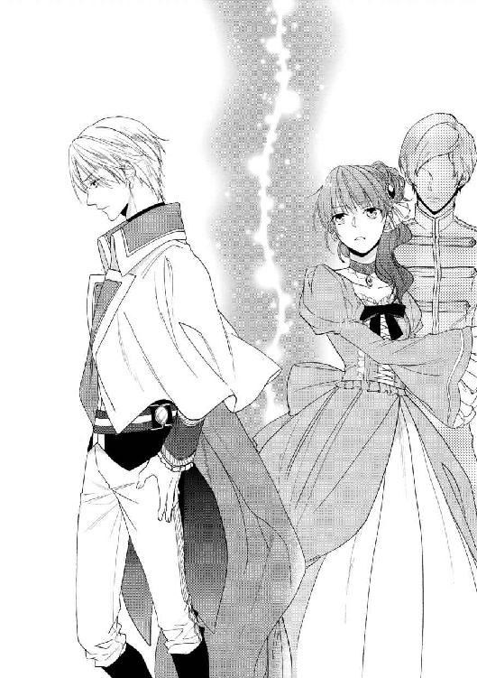
「これはどういうことなんだ、ユリス！」
国王の執務室で、やっと二人きりになってから、ライオールは声を荒らげた。
「申し訳ございません」
しかし、応じる声は平静だ。国王の前に立つユリスは、表情こそ殊勝なものであったが、己の行動に一片の疑問も持っていないように見えた。真っ直ぐに主を見返して、きっぱりと言う。
「お叱りは、重々覚悟の上でのことです。どのようにも、処分されて構いません。ですが、この機を逃すことだけはできませんでした」
「だからって、あんなのはやり過ぎだ。もっと穏便なやり方があっただろう。それに、王宮の衛兵を勝手に動かすなんて」
とはいえ、実際のところ、それが完全な越権行為であるとは言い切れない。国王の『侍従』というのは、その役職名から想像されるように、単に国王の側近くに仕えて、身の回りの世話をするというだけのものではない。国王の政務上の補佐役でもあり、彼の名代として動いたり、求められれば非公式ながら、問題に対して助言をすることもある。公私両面において国王の意を実行できるよう、広範な権限を持つ――国王の身に危険があると信じられる相応の理由があれば、王宮の衛兵を動かして彼を救うことは、許容される範囲のことだ。
ライオールはため息をついた。
「最初から、順を追って説明してくれ」
「かしこまりました、ライオール様」
とにかく、詳しいことを聞いてみなければはじまらない。主の要求に、ユリスは従順に一礼して口を開いた。
「ご命令に従い、ライオール様が仰った何人かの貴族を、秘密裏に調査しました。それと、リュセニアの使節のことも」
その数名は、ライオールが目星をつけた人物だった。実のところ、彼らが、大公女の偽者を立ててまで国王と結婚させ、リュセニアとの結びつきを強める行動に出るとは思えなかったが、一応、確認のために調べさせたのだ。ニールの貴族たちを相手にした調査は、意外にも王国の貴族全体の動向を網羅していると言ってよかった。王国の有力諸侯、少なくとも王宮に出入りできる層のほとんどは彼に会い、問題なく『リュセニア大公女』として扱った。挨拶に出向かなかった少数の人々は、リュセニアと組んで陰謀を働くような力はない者ばかりだ。
そこで、ライオールはリュセニアの使節の方に目を向けた。ニールの方に何の接触もないのなら、彼らの方からアーセルン側の協力者に接触することはあるだろうか。
「貴族の方は、残念ながら、リュセニアとの繋がりを窺わせる事実は発見できませんでしたが、リュセニアの使節の方では、面白いことが解りました。使節に随行している兵や供回りのほとんどが、フィルネリア大公女のお姿を見たことがないというのです。これは奇妙なことではありませんか。リュセニアから長く、決まった人員と旅をしてきたのに、偶然にも姿を垣間見る機会もない――故意に大公女の姿を隠していると考えないことには、不自然なことです」
「......それだけで、彼女を偽者だと決めつけたのか？」
「その段階では、偽者などとは思いもしませんでしたよ。ですがこうなれば、あの大公女殿下に何か秘密があるということは、想像がつきます。今夜、使節の主要な方々が王宮に招かれている隙に、向こうの宿舎を訪ねて、結果、侍女の証言から事実が解りました」
『訪ねて』などと言ってはいるが、実際はそう穏やかなものではなかっただろう。国王直属の近衛騎士を使うことはできなかっただろうが、王宮の衛兵や、王都の警備隊を動かせば、責任者の抜けた異国の使節を脅して口を割らせるのは造作もない。
「何故、彼らは大公女の偽者なんか仕立てたんだ？ 本物の大公女はどうしたんだ」
「その辺りは、当事者にご説明いただくよりありませんが......」
尋問は、明日の朝からになるという。拘束された三者は、それぞれバラバラに離して、王宮の客室に閉じ込められている。決して礼を失した扱いをしてはならない、外と連絡を取ること以外は自由にさせておくよう命じてはいるが、そもそも見張り付きで軟禁されるというだけで、彼らにとっては心安からぬ一夜になるはずだ。
「ですが、推測できることはありますよ――つまり、ウォルブラッド公爵は、そうまでしてでも異国の姫君が欲しかったのでしょう」
ライオールの問いに、ユリスの答えは明確だった。澱みのない口調で、淡々と説明する。
「あの方が、あなたが国内の貴族の娘を王妃に迎え入れることを、頑なに拒否なさっていたのはご存じでしょう」
もちろん、知っている。知っているどころか、公爵本人に直接、何度も意見をされている。王国内の、現在の勢力均衡状態が破れるのは避けなければならない、というのがその理由だった。現在、アーセルンの貴族の中で特に有力な家門が五つあるが、そのどれもが、一族の娘を国王に嫁がせようと虎視眈々と狙っている。かつての内乱の遺恨もあり、五つのうちのどの家から王妃を迎えても、必ず揉め事の種になるだろう。悪くすれば、再び国を二分するような争いになりかねない。
これを避けるためには、国内の権力争いとは無縁の、国外からの花嫁を迎えること、一刻も早く世継ぎの王子を儲けて、王統の安定を図ることが急務であると説かれて、実際のところライオールは面白くなかった。別に結婚などしたいと思ってもいないのに、他人の決めた花嫁を一生の伴侶として押し付けられる。その上『王統の安定』のために子が要る、なんて、種馬扱いもいいところだ。
だが、それだけならまだ耐えられた。政略結婚は国王の義務だ。どうせ果たさなければならない義務なら......これまで王国を望ましい方向へ動かしてきた、彼の摂政の言うことを聞いたって良かったのだ。
もし、彼の結婚が公爵の権力にとっても、望ましいものであると気付かなければ。――彼の結婚は、結局のところ、公爵が利用するための駒に過ぎないのではないかと、疑うことがなかったら......。
「ですが、どういう理由かまでは解りませんが、リュセニアはおそらく大公女を嫁に出すことができなくなったのではないでしょうか。当然、結婚話は白紙に戻さざるを得なくなりますが......おそらく、公爵閣下は承知しなかった。彼にとって、あなたの花嫁が必要なのは、リュセニアとの繋がりではなく、単に他の貴族の娘を退ける置き石としてです。『リュセニア大公女』として王妃になるなら、誰であっても構わないと考えた――そして、その計画を、リュセニアにも呑ませたのです。大使殿が言っていたことが、そのときの条件でしょう」
『嫁に出すことができなくなった』というのは間違いだ。何故なら、ニールは身代わりは身代わりでも、寝台の上で国王の花嫁になることまではできないからだ。ニールを偽者に使おうと決めた者は、絶対に、本物の大公女の存在を予定していたはずである。
しかしその点を除けば、ユリスの言葉は正鵠を射ているように思われる。というよりも、他に考えられない。リュセニアの大公女を、是が非でもライオールと結婚させたいという動機があるのは、まさにウォルブラッド公グアドただ一人なのだから。
「ライオール様......お気持ちは、良く解ります」
ユリスが、沈鬱な声音でそう言ったのは、きっとライオールが傷ついていると思ったからだろう。気遣いに、しかしライオールは首を横に振った。裏切られたと思えば、感傷的な気分もないではないが、しかし今、気になっているのは別のことだ。
「違う、そうじゃない。......私が考えているのは、グアドはどうして、こんなことをしたのかってことだ。この国が欲しいのなら、こんな手のかかることなどせずに――もっと早くに、私を放り出しさえすれば良かったのに」
本当は、ずっと子供の頃から思っていた。前の国王であった父の遺言で、幼いライオールの摂政となったウォルブラッド公爵は、しかし果たしてそんな立場に甘んじることを良しとしていただろうか。どれだけ苦労して、誠実に国を支えても、結局それは彼のものにはならないのだ。
もし公爵が、蓄財や特権の維持に熱心な解りやすい俗物であったなら、摂政位にも苦労に相応の旨みがあっただろう。しかし、こればかりはどんなに彼を嫌っている者でも認めざるを得ないことではあるが、彼の関心は財貨にも、個人的な名誉にもなかった。摂政位を退くにあたって、長年の献身を賞して下賜されるはずだった一級勲章と領地を、彼はどちらも辞退してしまったくらいだ。
だとすれば、彼の関心はただ、国政のみにあったに違いない。自分が形作り、やり方に賛否はあれども安定させたこの国を、そっくりライオールに渡してしまうのは、腹に据えかねる気持ちなのではないか。――彼にとって自分は、手のかかる荷物で、ゆくゆくは簒奪者にさえなる存在なのだと、ずっとそう思っていた。
しかし結局、公爵はライオールを玉座から放り出しはしなかった。どころか、従前以上になった王国を、当たり前に返しさえした。そんな公爵が、今更そんな小細工などで、己の権力を維持しようと考えるだろうか。
だが、ユリスの答えは、思いがけない鋭さでライオールの胸を貫く。
「後悔しておられるのではないですか。あなたに王権をお返ししたことを」
「......後悔」
「ええ。あなたが、必ずしもあの方の望み通りの政治をなさるわけではないと、ようやくお気付きになったのでしょう」
「............」
しないのではない、できないのだ。自覚がある分、ユリスの言葉は皮肉に満ちて聞こえる。突然の先王の崩御を受けて混乱した国を、臣下の身で受け継がなければならなかった公爵とは違う、ライオールは彼から十全の王国を受け継いだ。なのに公爵の半分も、上手くやれているとは言えない。まだ、はじめて一年も経っていないのに、もうこんな陰謀を許している有様だ......。
「もちろん、それが正しいのです。あなたはあなたのやり方で、この国を治めるべきなのですから」
だが、沈みかける思考を引き上げるのも、またユリスの声である。真剣な眼差しを向けて、彼は熱心に言った。今こそ、それを知らしめるときです。
「あの方は随分長いこと、あなたのものである力を振るってきました。それが許されたのは、あなたが無力な子供で、大人しく操り人形に甘んじていたからです。――ですが、今はもう違う」
「ユリス......」
「あなたは何もかも、ご自分の思い通りになさることができるのです。あの方の言いなりになる必要は、どこにもない」
彼にそう言われるのは嬉しかった。彼はいつでも、欲しい言葉をくれるのだ。自分にも、何かできることがあるのだと信じられる。ユリスが信じてくれているからだ――ライオールが自分でも信じられない、彼の力を信じてくれる。
「ライオール様、あなたはこの国の希望です。あなただけが、ウォルブラッド公爵の培った悪弊を崩すことがお出来になる。......公爵閣下も、きっと気付いていらっしゃる。あなたが彼に勝る能力で、何もかもを作り変えてしまわれると恐れていらっしゃるのです。だからこそ、このような策を講じた」
だから、期待に応えたい。ユリスの望むような、英明な君主でありたいと思う。ウォルブラッド公爵の時代とは違う国を作りたい、旧弊な悪習を廃止して、身分の上下に拠らず、自由に才能を登用できるような――公爵よりも、優れた為政者になりたい。
「ですから、ライオール様、今回の件は厳しくご処断あるべきです。公爵閣下の方で、あなたの治世に水を差すおつもりなら、それを永久に排除することこそ、あなたがまず成すべきことです。リュセニアの大使の処遇だけは、こちらの一存で決めるのは得策ではありませんが......公爵と、その手先である大公女の偽者には、誰の目にも公正に、陰謀の罪を償わせなくては」
しかし、続けられた言葉には、思わずたじろがずにはいられない。国王に対する陰謀は反逆――死をもって償うべきものと決まっている。
「でも、ユリス、それは――」
「ライオール様、こういうことには、何一つ例外があってはなりません。ライオール様の御世では、国王の名の下に法の裁きは公平であると、世に知らしめる必要があるのです。まして、国民に範となるべき先の摂政公ともあろう御方が、こうした問題を起こしたにもかかわらず処罰を免れたとしたら、この先、誰があなたの法に従うと思いますか」
「......まだ、彼らが陰謀を企んだと決まったわけじゃない」
「公爵閣下については、そうですね。ですが少なくとも、あの偽者の娘だけは、確実に有罪なのです。どうぞ、覚悟をお決めください」
そうだ、とライオールは思い出した。まだ、ニールのことがある。
晩餐会の席上で、ウォルブラッド公爵のみならずニールの身柄も拘束したのは、実のところ、罪を問うためではなかった。あの場では、他に方法がなかったからだ。衆人の前で偽者だと指摘された以上、できるのは、誰にも口出しされないうちに、彼の身の安全を図ることだけだ。
ニールが、陰謀者の一味でないことは解っている。少なくとも、自分の意志で協力してはいないことに、疑う余地はないとライオールは思っている。何故なら、彼は自分の目で見たからだ――あんなにひどく、痕が残るほどに殴られた子供に、罪など問えるものだろうか。
しかし、その痛々しい光景を思い出した瞬間、ライオールはふと違和感を覚える。
――子供を......殴る？
だがそれは、あの公爵がこの世で最もしそうにないことだ。――幼い彼が怪我をしたり、風邪を引き込んだりするたびに飛んできて、怪我や病気が一番危険だと、人間は身体が資本なのだから何より大事にしなければならないと、呪文のように繰り返した男が、果たしてそんなことをするだろうか。
公爵が、自分に叛く可能性は信じられる。体のいい操り人形ではなくなったライオールを、邪魔に思って排除しようと考えることはあるだろうと思える。しかしどうしても、彼が子供を殴っているところだけは想像ができない。
何かがおかしい。だが何がどうおかしいのか、解らない。違和感がちりちりと脳裏に散らす火花に、ライオールは唇を噛む。その火花の正体を、突き止めなければと思いながら、何故かその答えを手に入れるのは、恐ろしい予感がした。
真実が何であろうと、この先どう転んでも――きっと自分は、大事なものを失くすだろうという予感が。
＊ ＊ ＊
窓から見える月は、既に天頂へ昇り詰めていた。雲もなく、辺りはひどく明るい。が、その明るさが、窓の外に立つ見張りの姿をありありと浮かび上がらせるので、ニールはすごすごと窓辺を離れた。もちろん、夜中になればどこかへ行ってくれるなどと、甘く考えていたわけではないが、隙なく見張られていると思うだけで気詰まりなものだ。
引き返した室内は、寝台に空の衣装入れ、小さな机と椅子があるだけの簡素な部屋だった。さすがに王宮の一室なので、決してみすぼらしいという印象はないが、それでもつい数時間前まで寝起きしていた『リュセニア大公女』に与えられた居室と比べると雲泥の差である。もっともニールとしては、こちらの方がまだ落ち着く。大公女用の、広々として贅を尽くした寝室には、ついに最後まで慣れることはなかった。
――最後まで......。
願わくば、それが人生の最後でなければいいのだが。脳裏に閃いた皮肉な考えに、またもぞっと肌が粟立って、ニールは落ち着かず部屋の中を歩き回った。前言撤回だ、やっぱり部屋は広い方がいい。歩き回るには、ここはちょっと狭すぎる。
――まさか、ほんとに殺されたりなんか......。
しない。しない、はずだ。剣を携えた屈強な男たちに連行され、こうして厳重に閉じ込められても、ニールがなおも正気を保っていられるのは、ひとえにそう信じているからだった。ライオールが、彼を見捨てるはずがない。きっと生命だけは助けてくれるはずだ。
――でも......どうやって？
晩餐会の席上、多くの人々がいる前で秘密を暴かれてしまった。ライオールも難しい立場だろう。ニールは再び、あの場で起こったことを思い返す。前触れもない衛兵の乱入、乱暴な足音、人々の悲鳴――告発。
――やっぱり、あのおっちゃんの仕業だったって......？
ある意味、予想通りと言える。少なくとも、ライオールは最初から彼を疑っていた。疑いたくて疑っていたわけではない。彼以外には、リュセニアの大公女とアーセルン国王の結婚で、曲がりなりにも得をする者がいないのだ。
でも、とニールは思う。それだとおかしい、理屈に合わない。そもそもことのはじめから、ずっと思ってきたように。
――おれは、男なのに。
もし公爵が本当に大公女の偽者を立てるなら、どう考えても女の方が都合が良かったはずだ。身代わりと言っても、ただ座っていればいいのではない、本人として生活しなければならない以上、どんな不測の事態が生じるとも限らないのだ。......大体、ライオール自身、彼を女だと信じていながら、それでも服を脱がせたではないか。あれは少々特殊な理由だったが、しかし女と信じている『からこそ』服を脱がせるような事態だって、起きてもおかしくないだろうに。
――まあ......ライはそういうことしないって踏まれてた、のかな。......確かに、女の子を手籠にするような感じじゃないけど、逆に理由さえあれば、女の服くらい顔色一つ変えずに剥ぐような奴なのに！
あるいは、服の中身より、容姿の特徴が優先したということだろうか。黒髪に紫の瞳、特徴的な色の組み合わせは、確かに他に類は少ない。王宮の肖像画に合わせるためには、中身が男でも、ニールで間に合わせるより仕方がなかったということなのだろうか。
――あの、肖像画......。
王宮のギャラリーで直に見た、本物の大公女の絵姿は、おそらくはかなり昔のものなのだろうが、確かに黒髪と紫の瞳を持っていた。だが......あの絵は何かが変なのだ。前に見た肖像画を、できるだけ正確に脳裏に再現しようとしながら、ニールはあのとき、肖像画に覚えた違和感も一緒に思い出していた。結局、その場では解らなかったが、今は何故か、それが気になって仕方がない......。
一体何なのだろう。気付けば、ニールは苛々と早足で、部屋の中を行ったり来たりしていた。些細なことが気にかかって仕方がないのは、あるいは目の前の現実から逃避する無意識の願望なのかもしれない。先の見えない状況について考えたくないから、こんなどうでもよさそうなことに食いついてしまうのか。
「！」
と、次の瞬間、何かが足に絡まりつく。突然のことに、声を上げる余裕もなく、ニールは床にすっ転んだ。気付かないうちに、ドレスの裾を踏みつけてしまったらしい。
「ってえ......！」
ちょうど、何もないところで助かった。が、何もないところで転んだと思うと、それはそれで腹が立つ。ニールはがばと跳ね起きると、腹立ち紛れにドレスの飾りをむしり取った。そういえば、もうこんな動きにくい恰好をしている理由はないのだ。ボタンも紐も全部外して、ドレス自体も脱ぎ捨ててしまう。下着姿になったが、それで寒いということもない。だったら、もうどうでも構うものか。
だが、用済みになったドレスを寝台の上に放り出したとき、ニールははっと息を呑む。何かが、意識の糸を揺らしたのだ。このドレスにまつわる、今まで忘れていたような記憶が。
数あるドレスの中で、この一着が選ばれた理由を、侍女は何と言っていたか――これがニールにふさわしい、特別な理由があったから。
「――解った......！」
叫び出したい気分だ。心臓が早鐘のように打ちはじめて、息ができない。何もかもが、一瞬で理解できた。肖像画の違和感だけではない――この身代わり事件に関わること全て、全てだ。
こうしてはいられない、今すぐにここを出て、自分の考えを確かめなければならない。それまでの苛立ちとは別種の焦燥に突き動かされて、ニールは部屋中を動き回った。窓の外の見張りはまだいる、きっと扉の外にもいる。どうしたら外に出られるだろう。せめて、外の誰かと連絡を取ることさえできたら。今、自分が知ったことを、必ず誰かに伝えなければ......！
救いの神が現れたのは、まさにその瞬間だった。不意に扉が外から叩かれて、ニールは反射的にびくりとする。今の自分は囚人の立場だということを思い出して身構えたが、扉の向こうから現れたのは、思いがけず馴染みの相手だ。
「大公女殿下！ ご無事で......うわっ！」
「カシュバル！」
「あっ、あああのすみません！ そんな、おれは、あの、見るつもりは」
一瞬で、再び扉の外に飛び出してしまった近衛騎士が、動揺しきったように言うのを聞いて、ニールはようやく自分の姿に気がついた。しまった――まあ、下着姿とはいっても何重にも着込んでいて、ニールの感覚としては普通の服と何が違うのかという状態であるから、困ったことにはならなそうだが。
「ああ、ごめん、こっちこそ。......どうして、こんなところに来たの？」
「は、はい。あの、陛下のご命令です。まだ、任は解かれていない――大公女殿下の御身を、何からもお守りするようにと」
ニールは嬉しいような、ほっとしたような気持ちになった。やはり、ライオールは彼を見捨てたわけではなかったのだ。信じてはいたけれど、やはり不安でもあった。ライオールが信じてくれなければ、これから彼がしようとしていることにも、何の意味もなくなってしまう。
彼が信じてくれているなら、暴き出すことができる――この陰謀を行った人間の、本当の姿を。
「カシュバル、頼みがあるんだ」
もう、時間がない。明日の朝になってしまえば、今夜の醜聞は広く知られてしまうだろう。今ならまだ、取り戻せる。今夜のうちなら。
「誰にも知られずに、おれの言う通りにしてくれないか。伝えてほしいんだ、公爵閣下は間違いだって――おれは、ついに見つけたって」
「え、あ、た、大公女殿下？ おれ、って......？」
「あーもう、あとで全部説明するから！ お願いだから、今すぐ！」
夜の王宮はどこでも、昼間の明るく華やかな様子とはまるで様相を違えているものだが、その一帯は格別だった。夜を通して灯される明かりも、立ち続ける歩哨もない。一晩に衛兵が数度巡回してくるのがせいぜいなのは、王宮内においてあまり重要な場所ではないからだった。決して粗末というものではないが、人目にも触れないよう宝物庫に収めるような品でもない美術品が、所狭しと置かれているギャラリー。
だがそれは、今の彼にとっては至極都合がいい。ここまでは慎重に付けていた、手持ちの角灯の覆いを取ると、ニールは辺りを見渡した。闇に慣れた目には、たったそれだけの明かりでも、光の洪水のように思えるが、目を瞬きながらも目的のものを探す。
――あった。
幸いにも、その絵は記憶していた通りのところにあった。以前、ここへ来たとき、近衛騎士が彼に見やすいよう、低い位置にかけ替えてくれたそのままだ。
明かりを取り上げて、絵を間近で確かめる。手を伸ばして、幼い少女の顔を撫で擦る。紫の瞳が、じっと彼を見つめている――真実を宿す、その瞳。
不意に、背後で空気が動くのを感じる。足音はしない、気配というものを極力殺して近付いてくる。だが、予め来ると解っていれば、反応するのは容易いことだ。
「やっぱり、来たな」
振り向きもせずに言うと、背後の動きは止まった。どうやら、突然襲いかかってくるつもりはないらしい。そうだろうと思ってはいたが、やはり実際そうだと解るまでは落ち着かないものだ。ほっと息をついて、ニールはなおも言った。
「そうだよな、あんたも知りたいんだろ、この絵の秘密を。あんたの最大の失敗が、この絵に描かれてるなんて言われたら、まあ気にもなるよな」
一呼吸の間に覚悟を決めて、ニールは背後を振り返った。角灯の明かりが届くぎりぎりの距離、闇の際にその人物は立っている。予想通りの相手の姿に、自分の正しさを確信する。やっぱりそうだった、間違ってなかった――彼をここへ誘い出したことまで含めて、これで良かったのだ。
「でも、あんたに、ここに来てほしくはなかったよ――ユリス」
「何を仰っておられるのか、解りませんが」
やがて、耳が痛くなるような沈黙の後、影の男は口を開いた。
「私がここへ来たのは、あなたを捕らえるためです。国王陛下の命により、あなたの身柄は拘束されているはずです。それが、あのような伝言を聞いてしまえば、放っておくことはできません」
伝言、というのは、近衛騎士カシュバルに頼んでライオールに宛てたものである。自分の務めは大公女殿下の護衛であって、側を離れるようなことは許されていないというカシュバルを何とか説得して、伝言を頼んだ。何せこの状況で、王宮内を闊歩できるのは彼しかいない。「大公女の肖像画には秘密がある、それで何もかも解るから、肖像画の前に来てほしい」というのが、伝えてもらった内容だった。ただし、直接ライオールに伝えるのではなく――彼の侍従の口から伝えてもらうようにと。
「その割には、衛兵の一人も連れてきてないじゃん。いろいろ、聞かれたら困るもんな」
「......あなた一人拘束するくらいなら、私にもどうとでもなる。騒ぎを大きくするのは、お互いためになりませんでしょう。今、大人しく部屋へ戻るなら、何事もなかったことにして差し上げます」
「もちろん、ライには言わなかった？」
「このようなこと、あの方の御心を煩わせるには及びません」
上等だ、とニールは呟いた。もし、ユリスが何も知らない人間なら、伝言をライオールに秘密にはしないはずだ。彼に伝えた上で引き留めたり、あるいは同行すると言うことはあるかもしれないが、必ず相談はするだろう。万が一、読みが外れていたらと思っての、ちょっとした小細工だったのだが、結局それも、ニールの考えの正しさを証明することにしかならなかった。
――てか、おれが猫かぶってなくても、別に驚いてねえしさ。
大公女にふさわしからぬ口の利き方をしているのは、今は意識してのことである。きっと、ユリスは知っていると思った――ニールの本当の素性を知っているから、この話し方にも、表情一つ変えないのだ。
「おれは、ずっと不思議だったんだ」
正しいと解ったなら、もう引き返せない。ニールは顔を上げて、相手を見つめた。ずっと、素顔を隠して彼を脅し続けてきた男の顔を。
「何でおれが、大公女の身代わりなんかにさせられたのかってこと。だって、おれ、男だよ？ それも、知らなくてさらったのならまだしもさ......おれに大公女の身代わりをしろって言った連中は、おれが男だってことはちゃんと知ってた。その上で、誰にもばらすなって言ってきた。これって、変じゃないか――少なくとも、あのおっちゃん......えーと、公爵閣下のすることとしては、絶対におかしい」
ウォルブラッド公爵は、『リュセニアの大公女』がアーセルンの国王と結婚することを望んでいた。『大公女』を名乗る者なら誰でも構わない、というつもりで偽者を仕立てたのなら、偽者は絶対に女であるはずである。そうしておけば、たとえ本物がいつ現れるにしろ、長く『リュセニア大公女』を続けることができる。
「それは、あなたの容姿のためでしょう。その肖像画をご覧になったなら、お解りになるはずです」
「言ったな」
それこそまさに、ニールが望んでいた答えである。思わず笑みさえ浮かべて、ニールは手にしていた角灯を動かした。ユリスの姿はぼんやりと闇に沈み、代わりに浮き上がるのは大公女の肖像画だ。
「じゃあ、本題に入ってやるよ。――ユリス、あんたこれ見て、何か変だなって思わなかった？」
「............」
答えはない。が、ニールはその沈黙に、相手の困惑を感じ取った。そうとも、とニールは密かに笑う。彼が気付いたはずがない。気付いていたなら、ニールを大公女の偽者に使うなどという失策は犯さなかっただろう。
「何でも気が回る国王陛下の侍従様でも、気付かないか。まあ、おれもずっと解んなかったんだけど、それじゃあ、おればっかりが鈍いってわけじゃないみたいだな。やっぱり男だから――女みたいに、着るもののことには気が回んねえ」
「着るもの......？」
「ほら、この大公女殿下のドレスの色。綺麗な青だけど、瞳の紫とは合わない青だ。――侍女が何人も付いてるお姫様に、こういうことはあり得ない」
それは、今夜の晩餐会の前の一件から、ニールにも骨身に染みてよく解った侍女たちの習性である。彼女たちは、己の主が如何に美しく見えるかに情熱を注ぐ。それは彼女たちの感性が試される場であり、仕事の成果を衆目に示す華々しい機会だからだ。衣装のほんの少しの乱れも許さず、装飾の位置を細々と直し、ほんのわずかな色合いの違いにも、決して妥協することはない。そんな彼女たちが、主の生来持つ瞳の色に、無頓着でいるはずがない。ましてやそれが、長く形として残る絵姿になるならば、尚更だ。
「肖像画っていうのは、目が命なんだろ。昔、役者の顔を描く看板描きのじいさんに聞いたことある。で、じいさんが言うには、絵具――顔料は、まあいろんな材料で作るんだけど、いろいろ注意して扱わないといけないことがあるんだって。たとえば、顔料の種類や混ぜ方によっては、空気に触れると色が変わってしまうとか」
「............」
「この絵も、きっとそうなんだ。それで、こんなちぐはぐな色合いになったんだ」
最初から、こうであったはずがない。気付いた瞬間、ニールは確信さえしたのだった。変わったのは、瞳の色の方だ。生き生きとした輝きを描くため、技法を駆使して幾重にも塗り重ねる瞳の方だ。
「さっき、確かめてみた。もしドレスの方が変色しているなら、この面積だからムラになっているはずだけど、そんなことはなかった。最初に画家が描いた陰影が、そのまま残ってる。変わったのは、瞳の色の方なんだ。本物の大公女は、紫の瞳なんかじゃない......多分、ドレスと同じ、青だったはずだ」
「............」
「もし、公爵閣下がリュセニアの人間と通じて、偽者の大公女を仕立て上げたんなら、こんな失敗するはずがない。おれを偽者に選んだ奴は、この絵を見てたんだ――そして、この絵の他には、本物の彼女を知らなかった」
リュセニアの人間の仕業ではない、少なくともニールを偽者にしたことに関して、リュセニアの意志は働いていない。仕掛け人は、アーセルンの王宮の中にいるのだ。いつでもこの絵を見られるほど、中心近くに。
再び、壁際から正面に戻した角灯の光の中で、ユリスは微かに笑ったようだった。呆れの滲む、酷薄な笑み。
「......馬鹿馬鹿しい。それが、あなたの発見した『肖像画の秘密』なのですか。仮にそれが正しかったとしても、それが何だと言うのです。王宮に出入りする人間など、何百といますよ」
「でも、とにかく、公爵閣下がやったことじゃない。ってなると、話がだいぶ変わってくる」
ウォルブラッド公爵が、大公女の偽者を仕立てたとすれば、その目的は大公女をライオールに嫁がせることであるはずだ。国内の権力均衡を保つため――結果的に、彼の権力を保つことにもなるが――たとえ偽者でも、『リュセニア大公女』を迎え入れたという名目が必要だったというのが動機となるはずである。しかし、彼がやったことでないとするなら、その動機の仮定自体が変わる。
「リュセニアの大公女をライと結婚させたいっていうのは、公爵閣下の希望だった。逆に言えば、公爵閣下以外には、強くそう望んでいる人はいないってことだろ。ってことは、簡単だ――おれを大公女の偽者にした奴は、大公女を、ライと結婚させたくなかったんだよ」
そう考えれば、全てが腑に落ちる。何よりも、一番の謎だった、男の彼を大公女の身代わりにした理由もはっきりする。
「偽者だって、はっきり解る証拠が必要だったんだろ。女だったら、本物か偽者か揉めるもんな。だっておれが女だったら、こいつは偽者です、ってばらされたら必死で抵抗するよ。あの、リュセニアの大使だっけ、あいつくらい抱き込んでたって無駄だ。あいつより、大公女の方がずっと偉いんだろ？ 最終的に、リュセニアの大公様を呼べってことになるだろうけど、そんな偉い人がこっち来るとしても、すごく時間がかかるだろ。その間に、きっといろいろ調べられるだろうし、そうしたら、あんたに都合の悪いことも解ってしまう」
時間がかかればかかるだけ、陰謀者には不利なのだ。大公女の正体が明かされたとき、誰の目にも疑いなく偽者だと見えなければならない。男であれば、その点は全く心配いらない。何せ、服を剥ぎ取ればいいだけの話だ。
たとえば、結婚式の後。衆人が祝福した新王妃が偽者だと判明したら、一番に疑われ、責められるのは誰か。
「ユリス、あんたは、大公女とライの結婚に反対だったって言ってた。それはつまり、公爵に反対ってことだろう。あんたは、公爵を追い落としたかったんだ――ちょうど、今日やってみせたみたいに」
「私は、ライオール様のご命令に従っていただけです。リュセニアの使節を調査しろとのご命令でしたので、そのようにしたら、重大な事実が発覚したので、相応の対処をしただけです」
「偶然、発覚って？ その割には、思い切ったことしすぎじゃねえ？ リュセニアの使節の偉い人が王宮に招かれた留守中に、勝手に家捜しするなんて、これで何もなかったらすげー問題になるだろ。あんたはいつでも、好きなときに証拠を出すことができるから、そんなことができたんだ」
「何とでも言いなさい。誤った判断ならともかく、成功した行いを責められることはありませんよ」
鼻で笑われてしまったが、ニールは諦めなかった。確かに、目に見える証拠はないのだ。だからこそ、諦めては意味がない。一つ一つ丁寧に数え上げていって、彼を追い詰めなければならない――少なくとも、追い詰められていると、彼を信じさせなければ。
「偶然って言えば、あれも偶然じゃないな。前に、王宮でおれを脅しつけたのもあんただろ」
ニールが王宮に到着して、まだ誰にも正体を明かしてはいなかった頃。不断の緊張を強いられるせいで、ふらふらになって飛び出した人気のない廊下で、男に剣を突きつけられたことがあった。彼が偽者であることを絶対に知られてはならないと――知られそうになったなら、どこからでも見張っていて用済みにしに来ると脅された。
「あのとき、あんたは『医者などにかかってみろ』って言った。確かにあのとき、そういう会話を部屋でしたけど、あんなに侍女がうろうろしているところで、立ち聞きなんかできるわけない。侍女たちの中に、外に漏らしたのがいるのかと思って訊いたけど、誰もそんなことはしてないって言った。そのことを言ったのは、ライにだけだって」
事実、ライオールは知っていた。初対面で心ない言葉を浴びせた姫君が、体調を悪くしたと聞いて、様子を見に来たくらいだ。ならば、あの脅迫者はどこでそれを聞いたのか。
「それに、リュセニアの大使が言ってたろ。自分はウォルブラッド公爵に協力しただけだって。でも、公爵が本当にリュセニアと協力してたら、おれを偽者に使うわけがない。大使は、自分は公爵に協力していると『信じさせられた』んだ。そういうことができるものって、何がある？」
たとえば手紙の筆跡、あるいは印章。どちらも、未だに王宮には多く残されているはずだ。十年と少しの間、ウォルブラッド公爵はこの国の摂政として、この王宮で政治を執っていたのだ。もちろん、誰でも簡単に閲覧したり、持ち出したりできるものではないが、誰にもできないというわけではない。
「王宮で、公爵が書いたものや印章を正確に写し取ることができる。ライの側にいて、侍女の話を残さず聞ける。リュセニアとの結婚話に反対で、このリュセニアの大公女の肖像画を見たことがある......王宮に出入りする人間は、確かに何人もいるだろうけど、この条件に全部当てはまる人間が、一体何人いると思う？」
「憶測にも程がありますね。私の知ったことではない」
「憶測でも、狙いを定める役には立つだろ。おれが一座から連れてこられて、大公女の偽者やれって言われたとき、あんたどこにいた？ あんたは一人じゃない、仲間がいる。きっと親しい仲で、あんたと同じ貴族のはずだ。それに、今日リュセニアの宿舎で捕らえた侍女って、アンゼとかいう......おれに大公女の振舞いを仕込んだ、あの侍女だろ。今はあんたが身柄を押さえてるんだろうけど、別の人間が叩けば、あんたとのかかわりを白状するんじゃないか」
「............」
「憶測だけど、誰も耳を貸さないってわけじゃないと思う――おれが喋れば」
角灯の明かりの向こう側で、ユリスは無表情で立っていた。ごくりと唾を呑み込んで、ニールは懸命にその目を見返す。ここで退いては、意味がない――危険を冒して、彼と二人きりで相対している意味がない。
やがて、息詰まる沈黙の後、最初に口を開いたのは相手の方だった。
「――それで、どうしようというのですか」
無愛想とも言えるほど、簡潔な問いかけ。しかしそれこそ、ニールの勝利の証明である。ユリスは暗に認めたのだ。彼に全てを喋られると、ただでは済まないと判断した。そして、ニールが未だそれをせず、彼をここへ呼び出したことに、理由があるとも気付いている――条件次第で、秘密を秘密にしておくことができると察したのだ。
やっと、乗ってきてくれた。これこそまさに、ニールが望んでいたことだ。だから、ユリスだけを呼び出した――どうしても、『彼』には知られたくなかったから。
「ユリス、今ならまだ間に合うだろ。もう、この計画は止めてくれ。そうしたら、おれも喋らない」
ウォルブラッド公爵を解放して、何もかも間違いだったと言えと言われて、ユリスは珍しく、唖然とした顔をした。頼むから、とニールは訴える。
「何でそんなに、あのおっちゃんを追い落としたいんだよ。そりゃ、確かに前は摂政だっただろうけど、もう今は違うんだろ。だったら、放っといていいじゃないか」
「あの男の力は、まだこの国の根幹を握っている。どんな手を使ってでも排除しなければ、いつまでも王宮は変わらないままだ。......そちらこそ、何故そんなことを言うのです。この国の内情など、あなたには関係のないことでしょう」
「政治とか、どうでもいいよ！ でも、あんたが悪いことしたら駄目だ。あんたが捕まったりしたら......きっと、ライが、すごく悲しむ」
それこそが、彼がユリスをこの場所にまで誘い出した理由だった。ライオールには、こんな話を聞かれたくなかった。どうして聞かせることができるだろう。思うに任せない環境の中で、それでもほとんど全幅の信頼を置いていた相手が、自分には知られないようこんな企みを巡らせていたと知ったら、ひどく傷つくに違いない。
いつかは知らせなくてはならないことだとしても、やり方というものがあるはずだ。突然、他人の口から、その名を罪人として聞かされるのではなく――ユリス自身が、主の気持ちを慮って、本当のことを告白してくれたら。
「悲しむ？ あの方が？」
だが、ユリスはそうしたニールの気持ちなど、まるで勘案する様子はなかった。どころか、不思議そうに首を傾げる。まるで理解できない、異世界の言語を耳にしたとでもいうように。
「そんなことが、あるはずはない。私は、あの方のためにやっているのです。何もかも――我が主のために」
青年の形のいい唇が、微かに歪む。それは陶然とした微笑にも、そこ知れない悪意にも見える。
「ウォルブラッド公爵は、旧世代の遺物だ。ライオール様の新しい御世には不要です。だが、この世に存在する限り、あの男はライオール様を縛り続けるでしょう。だから――解き放って差し上げる」
それの何がいけませんか、と平然と言われて、ニールはとっさに二の句が継げなかった。何がいけないって、無実の人間を、ありもしない罪に陥れていいはずがない。ましてそれを、敬愛しているはずの主の名においてやることが、許されるはずがない。
だがきっと、そんなことを言っても無駄なのだ。
「話は、もう、終わりですね」
瞬間、しゅっと耳慣れない音が暗闇に響く。はっとしたニールの目に、闇の中に凶暴な光が輝くのが見えた。灯火の柔らかい光を跳ね返して、冷たく獰猛に輝く銀色の光――研ぎ澄まされた刃。
「な......」
とっさに、声が出てこない。しかしニールにも、相手の意図はよく解った。彼の口を封じてしまう方法がある......容易く、しかも永遠に。
「お......おれを殺したって、無駄なんだ」
何とか絞り出した声は、情けないほどに掠れていた。逃げ出したいが、足が動かない。いつもそうだ――恐ろしいことがあると、身体が竦んで自由にならない。身を守ることもできずに、震えるしか能がない。
「ほ、他にも、今話したこと、知ってる奴がいるんだからな......おれが、死んだって」
「なら、そいつには後ほど出てきてもらおう」
信じているのかいないのか、ユリスは気のない素振りでそう言っただけだった。震えながらもじりじりとあとじさるニールを見定めるように、抜き身の短剣を手にゆっくりと近付いてくる。
ふと、微かな光をはね返したその刃の表面に、傷が付いているのにニールは気付く。傷ではない。こうして離れて見た今は、それが彼の知らない文字であることが解る。意味は読み取れない、だが一つだけは確かなことだ。
――あのときの！
暗闇の、人気のない王宮の通路で、首筋に突きつけて脅された、あのときに使われた短剣と同じものだ。あのときは、何か不思議な紋様だと思ったが、磨き抜かれて曇り一つない刃の表面に刻まれていたのが印象的で、記憶の隅に引っかかっていた。視界の端で見ただけだが、それでも間違うはずがない。
――やっぱり......。
今更、自分の見立てが誤りであるとは思っていない。だが、こんな形ではっきりと証拠を示されると、何故か更に気が滅入る。こんなことは、あってほしくなかったのに。
しかし、相手は容赦なく、刃の先をニールに向けたままだ。
「だが――おまえには、最初の計画に従ってもらうだけだ」
「最初の......？」
「身代わりには、偽者だという以外の情報は要らないんだ。その身体さえ残れば、口は利かない方が望ましい。――死んでいた方が、抵抗されずに脱がせやすいしな」
がたん、と音がして、ニールの背が壁に触れた。張り詰めた空気の中、思いがけず大きく響いたその音を合図にしたかのように、影が襲いかかってくる。銀色の輝きから目を離せずに、ニールは息を詰めた。痛いのは嫌だ、痛いのは嫌だ、痛いのは――。
「――ユリス・シェトラー！」
直後、響き渡った声は名を呼ばわるというよりは、咆哮に近かった。たまらずユリスが背後を振り向くのと、鋼が打ち合う悲鳴のような響きはほぼ同時だった。闇を切り裂く、巨大な剣――ユリスの短剣とは比べものにならないほどの光を弾く、騎士の剣。
「その御方に手を触れるな」
「おまえ......カシュバル・ハミット！ 何故ここに」
呻くようにユリスは言ったが、思いはニールも同じだった。どうして、彼がここにいるのだ――ユリスに伝言を伝えた後は、国王の警備に戻っていいと言っておいたはずなのに。
ならば――近衛騎士である彼が、この場に現れた、その意味は。
瞬きする間に、目の前の状況は変化した。ほんの三合も打ち合わないまま、ユリスの手から短剣が落ちる。しかしカシュバルは、表情も剣の勢いも変えなかった。そのまま白刃が真っ直ぐに、獲物を捕らえ――。
「止めろ、カシュバル。――殺すな」
落ち着いた声が制止する。瞬間、騎士の剣は魔法にかけられたように、ぴたりと動きを止めた。そうとも、とニールは思った。騎士にとって、その声は呪文だ。剣も、身体も、生命をも、従え制する主の声。
ついに、来てしまった。――こういうことにだけは、したくなかったのに。
剣を構えた近衛騎士の背後から、青年が現れる。灯火の赤みがかった光は、この暗がりの中でさえ彼の金色の髪を輝かせたが、その瞳の色を消してしまっていた。常の、深い海を思わせる藍色は消し飛んで、残るのはただ、茫漠とした闇の色だ。光の欠片さえ届かない、生命のない世界。
彼は聞いていただろうか、とニールは思った。今まで、ここで二人が話していたことを、どこまで知っているだろう。
「ユリス。――何か、言いたいことはあるか」
しかし、ライオールが優しげにさえ聞こえる口調でそう言って、ニールは悟らざるを得なかった。彼は聞いていたのだ。全て、知ってしまったのか。
「ライオール様」
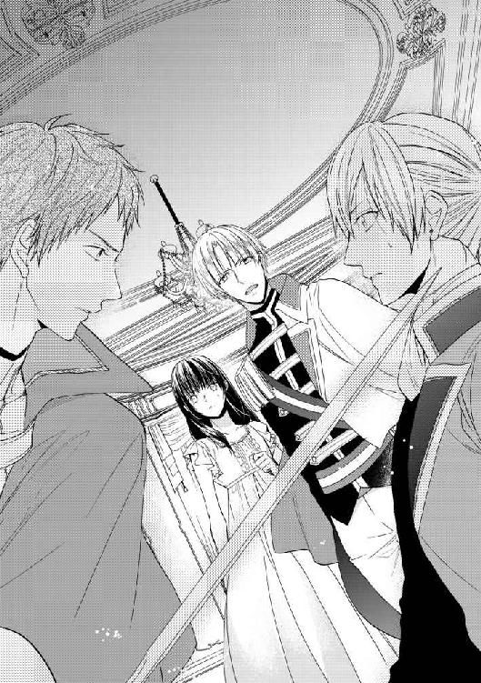
そしてそのことは、ユリスも察したに違いない。動揺した表情を見せたのは、しかしほんの一瞬、彼は完璧な平静さを保って、正面から主を見た。毅然と顔を上げて......あるいは、尊大にと言うべきか。
「――何もかも、あなたのためなのです」
「私のためだと！」
吐き捨てるように、ライオールは怒鳴った。一瞬前の、何かを押し殺した穏やかさは既にない。到底、我慢ができるはずがない。
「勝手なことを言うな！ おまえのやったことは、忌まわしい謀略だ。私は不正義を友にするつもりはない！」
「ですが、これは必要なことです」
しかし、その怒りに触れても、ユリスは少しもたじろがなかった。どころか諭すような口調で答えるのだ。
「あなたの治世を輝かしいものにする、これが第一歩なのです。そのためになら、私はどのようにも手を汚す用意がある。不正義でも、不名誉でも、他のどんな供物でも」
「............」
「ライオール様。あなたは私の希望です。あなたのために、私はどんなことでも致しましょう。しなければならない、どんなことでも」
その声音は真摯で、情熱的ですらある。ライオールは、じっと己の侍従であった者を見つめた。その表情に、怒りの色は既にない。唇を引き結んで相手を見つめる瞳には、悲しみと言うには虚ろな、困惑と言うにはあまりに悲痛な光があった。
たった今までよく知っていたはずの者が、ある瞬間から別人になるなんて、そんなことがあるだろうか。何を言っても、どれほど必死に叫んでも、互いのことが理解できない、その心に触れられないなどということが。
「それは、私が欲しいものじゃない」
解らないか、とライオールは問うた。抑えた声音は、しかし何よりも彼の真情を伝えている。そんなものを、欲しいと思ったことなどない。
「ユリス、私がおまえを側に置いたのは、それが公正なことだと思ったからだ。おまえには能力があった、だからそれを役立てる場と機会を与えることが、正しいと思ったからだ。私は『おまえに』あげたいと思ったんだ――おまえの理想や、野心のためではなくて」
「............」
「おまえは、私のためにやったんじゃない。おまえのためにやったんだ。おまえは、グアドが不公正だから憎んでいたんじゃない――ただ、彼が私の操り人形師だったからだ。単に、彼と同じことをしたかったからだ」
ユリスが目を見開いた。しかし、何か言いかけた彼の言葉を遮って、ライオールはきっぱりと告げる。もはや親愛の欠片も、同情さえもそこにはない――断固とした拒絶あるのみ。
「私はもう、操られたくはない。彼にも、おまえにも。――おまえの供物は、受け取れない」
そしてユリスは、愕然とそれを聞いていた。彼にそんなことを言われるとは、本当に一度も考えたことさえないという顔をしていたが、やがて衝撃をやり過ごすようにその顔を伏せると、絞り出すような声で呟いた。
「あなたは......もう、私は必要ないと仰るのですか」
「......縄を打たせるようなことはしない。だが、どうすればいいかくらいは、解っているはずだ」
言って、ライオールは顔を背けた。これ以上は、二度と口を開くつもりはないという表情で。
やがて、その視線が壁際のニールに向けられた。未だ壁に背を押し付けて、彼が小さく震えているのに気が付くと、眉を顰める。
「ニール、大丈夫か」
振り向いた彼が、こちらへ歩いてくる。が、続く瞬間、ニールは息を呑んだ。彼の背後で、影が動く。主に顧みられなくなった侍従は、深く床に沈み込む。その手が、床の上に転がったはずの短剣を掴み取るのと、ニールが前へ出るのはほとんど同時だった。
――駄目だ！
言うことを聞かないはずの足が、そのときばかりは前へ出る。空気が水のように抵抗力を持ち、時の流れが遅くなる。早く、とニールは胸中で叫んだ。早く、一歩でも早く――あの刃が彼の背に届く前に。
渾身の力で、ライオールの身体を押しのける。途端、目の前に現れたのは輝く双眸だ。生の輝きではない、深くどす黒い闇の宿る、狂気の輝き。その深淵を覗き込みそうになったとき、重い衝撃が腹を貫いた。
「！ ニール！」
すぐ側で名を呼ばれるが、もう耳に入らない。一瞬遅れて、痛みが身体の奥から爆発した。痛い、神経という神経が焼き切れそうだ。なのに、その元凶である腹に突き立った血まみれの刃は、何故か奇妙に他人事に見える。趣味の悪い飾りのようだ。
「――おまえではない！ おまえなどではない！」
痛みに塗り潰されていく意識のどこかで、そんな声を聞いた気がした。思わず歪めた唇が、苦痛のせいなのか、それとも込み上げる笑いのせいなのかは、ニール自身にもよく解らなかった。
＊ ＊ ＊
何だか変な匂いがする、とニールは思った。青臭いような甘いような、薬草の香り。重ったるく纏わりついてくるような、不快な匂い。逃れたくて、ニールは頭を振る――と、その瞬間、ひどい痛みが全身を引きつらせた。
「............！」
「ニール！ 目が覚めたか」
ばらばらになりそうな思考の中に、するりと声が入り込んできて、彼の意識を浮上させる。気が付けば、誰かが上から彼を覗き込んでいる。
「......ライ」
「良かった、私が解るんだな」
「それ......どっか、やって......」
「何を？」
「なんか......変な、匂いが、するやつ......」
訴えると、ライオールはちょっと肩を竦めた。ニールの視界には入らない、頭の横辺りに手を伸ばして、何かに触れる。カタンと鳴った音から察するに、陶器の香炉か何かがあるらしい。
「ああ、これか。駄目だ。こうして焚いてると、痛みを和らげるんだそうだ。匂いくらい、我慢してろ」
「う、嘘だよ、それ......。痛えもん。すげえ、痛えもん......」
全然和らいでいる感じがしない。意識がはっきりしてくるのに比例して、ますます強まってくる激痛に耐えかね、ニールは思わず身を捩る。と、それを制するように、胸の上に軽く手が置かれて、低い声が囁く。
「あまり動かないで。傷を縫ったばかりなんだ。これでまた傷が開いて血が出ると、今度は気を失うくらいじゃ済まないって、医者が言っていた」
あんなに暴れるからだ、と最後は非難がましくライオールは付け足し、ニールはようやく思い出した。といっても、腹を刺されて以降の記憶は全体的に朧ではあるのだが、とにかくどこかに運ばれたことは覚えている。あまりにも痛くて、何も考えられずにされるがままになっていたが、ライオールに「すぐに医者が来るから」と言われて我に返った。そんな、とんでもない、頼むから止めてくれと懇願したが聞いてもらえず、ついには何人かに力ずくで押さえ込まれて、その辺りから記憶がない。
そして現状から察する限り、どうやら彼の要求は聞き入れられなかったようだ。ニールはがっくりしてため息をついた。ということは......何もかも見られてしまったに違いない。
「だから、医者なんか、やだって言ったのに......」
「嫌だって、そんな怪我して、医者が嫌だも何もないだろう！」
「おれ、あんな恰好だったんだぜ......女装趣味の変態だって、思われたに決まってるよ......」
それも、こちらの意識がしっかりしていてやむを得ずばれたなら、言い訳ができる分まだ救いがあるが、意識がない状態で勝手に服を剥がれて女装がばれるというのは、およそ考えられる限り最大の屈辱の一つである。死んだ方がましだった......とまでは言わないが、死にたい気分にはなる。半泣きで恨み事を言うニールに、ライオールは呆れたような怒ったような顔で彼を見下ろした。
「おまえ、よくそんな......そんなこと言ってる場合じゃないだろう！」
「そんなことって何だよ！ そりゃ、おまえは他人事だからいいだろうけど......」
「女装なんか、どうだっていい！ おまえ、死ぬかもしれなかったんだぞ！ 私はおまえを死なせて――」
まだ文句を言いかけるニールを、怒鳴りつけたライオールは、しかしそこで言葉に詰まったように黙り込んだ。思いがけない激しさに、ニールは目を瞬いたが、すぐに事情を理解した。――寝台の側に座り込んだ彼の表情に、隠しきれない憔悴の色があることにも、ようやく気付いた。
――私は、おまえを死なせて......。
王様なのになあ、と思う。誰からも庇われて守られて、それを当然として生きるはずの人間なのに。今までだって、ずっとそうやってきたはずなのに、それでもライオールにとっては、それが全然当然ではないらしい。
もっとも、それで当然と思うような人間なら、最初から庇いはしないのだが。ニールは何とか片手を引っ張り上げて、側へと伸ばす。思わずといったように、それを取ったライオールの手を握り返すと、ニールは懸命に言った。
「大丈夫だよ、そんなに心配しなくたって、こんなことで死んだりしねえよ。でも......心配してくれてありがとう」
何とか笑顔を作ってみせると、ライオールははっとした顔をして、すぐに気まずそうに顔を背けた。やがて、しばらくの間を置いて、小さな声で呟く。
「ニール」
「何？」
「......すまない」
「何だよ、謝んないでよ。別に、ライが悪いわけじゃないだろ。こんな怪我ならすぐ治るし」
「そうじゃない。いや、それもあるんだけど......そうじゃない」
何の話だ。怪訝そうに見やるニールの前で、ライオールは肩を落とす。結局、おまえの言った通りだった、と呟いた。
「私は、何も見てはいなかったんだ。――あんなに近くにいた人間のことだって、何も」
それが誰のことを言っているのかは、すぐに解った。
「ユリスは......どうなったんだ？」
「監視付きで、城の一室に閉じ込めてある。夜が明けたら、王宮外の監獄へ移されるはずだ。もう、おまえを襲うことはできない」
心配要らない、と言われたが、ニールが訊きたかったのはもちろんそんなことではない。澱みなく答える声は、しかし固く強張った響きをしている。今の自分と変わらないと、ニールは思った。傷の痛みに身動きできず、ただじっとして、息を殺して、時が過ぎるのを待つしかない。違うのはただ、傷が目に見えるか見えないかということだけだ。
「......やっぱり、できなかったんだ」
やがて、誰に言うともなく、ライオールは低く呟いた。弱い炎が蜜蝋の灯心を燃やす微かな音にさえ、かき消されそうな小さな声。
「たまたま、王の子に生まれただけだ。私に、王の才覚があるわけじゃない。だったら、ずっと飾り物でいた方がよかったんだ......自分に何かができるなんて、考えたりせずに」
「............」
「叶うなら、善いことがしたかった。でも、私のように無能な王はいない。誰が何を考えているのか、何のために私の前にいるのか――誰を信じて、誰を信じてはいけないのか、そんなことも解らないような王は」
だがニールには、それが国王の立場ではいかに難しいことか、想像がつく。ライオールの前では、誰もが頭を垂れて跪くのだから。顔を伏せる相手から、内心を見通すのは難しい。
もちろん、それでも見抜くのが王の務めだ。人々の身勝手な野心を抑え込み、常に君臨し続けるのが王だ。そういう意味では、ライオールは傑出した君主とは言えないかもしれない。
「でも、ライ......おれは、ライが王様でよかったよ」
固く握りしめた拳に視線を落として、目も上げないでいるライオールに、ニールは懸命に話しかけた。どうしても、彼に伝えたいことがある。
「だって......もし、ライが、誰でも疑ってかかるような奴だったら......おれ、今、ここにこうしていられないよ」
「ああ、そうだ。おまえに怪我なんかさせたりしないで......」
「そうじゃなくて。とうに、処刑されてたかもしれないだろ......大公女の、偽者なんて」
かもしれない、どころではない。普通なら、正体と送り込まれた理由を知った時点で、ニールに罪を問うのが当然だ。しかし、ライオールはそうはしなかった。ちゃんと話を聞いて、殺したりはしないと約束してくれた。ニールのことを疑わず――信じてくれたのだ。
「普通、信じたりしないよ。誰も、おれのことなんて、信じたりしない......だから、嬉しかったんだ。だから――おまえのために、力になりたいって、思ったんだよ」
そして......そう思ったのは、ニールだけではなかっただろう。痛みを感じながら、ニールはこの傷のことを考えた。これは、本当ならライオールに付くはずだった傷だ。ライオールに責められて、ユリスは逆上した。逆上したのは、裏切られたと思ったから、裏切られたと思ったのは信じていたからだ。ユリスが自分の野心のために、ニールを使ったこの計略を仕組んだのは確かだが、完全に己の都合のためだけではなかったのかもしれない――今、そんなことをライオールに告げるのはひどいことだと解っているから、口にはしないけれど。
「疑うのは、誰だってするんだ。おれが、ユリスのしたことに気付いたのだって、結局は疑ってたからだ。この王宮にいる誰も、信じてなかったから。......でも、ライ以外は、皆おれのこと信じてなかったんだから、おあいこだよな。公爵のおっちゃんなんか、はっきりそういう態度だったし」
「グアドか......」
ライオールの顔が、それまでとはまた違う、苦い後悔の表情を浮かべた。ユリスに言われるままに、公爵を捕らえさせたことを考えているのだろう。ニールは微かに唇で笑った。――彼の見るところ、その件は今、ライオールが考えているよりもずっと、うまく解決する気がする。
「ああ、公爵閣下には、謝ったらいいと思う。誤解してたって、正直に言ったら、あの人、おまえのことは許すと思うよ。......すげー怒ると思うけど、でも......きっと、絶対、許すよ」
正直、ニール自身があの公爵に相対するのは、あまり快くはない。あの鋭い猜疑の視線を、向けられるのは気詰まりだ。しかし、公爵がライオールの話をするのを聞くのは、不思議と嫌ではなかった。その表情に、その声に宿るのは、単なる不満や苛立ちではない。何かもっと特別なものだ――ニールが人生において与えられたことがない、慕わしく、温かい何か。
公爵は、ライオールを責めないだろう。何故なら、彼がライオールを今のように育てたのだろうから――悪意ではなく善意を見、猜疑ではなく共感で他人と接し......望んだわけでもなく与えられた義務を果たせないと、深く嘆くような人間に。
「だからさ、大丈夫なんだ......。おれたちは、誰でも人を疑ってる......だからその分、ライが誰のことでも信じてくれるといい。それだけは、他の誰にもできないことだから」
「......ニール」
「ライは、駄目な王様なんかじゃねえよ......ちょっと、うまくいかないときだってあるってだけだよ......だから......だからさ......」
頭の中に、次第に靄がかかってくる。視界が定まらなくなって、目を開けていられない。流れ込んでくる倦怠感を振り払うように、ニールは顔をしかめて、懸命に口を動かそうとした。ちゃんと、話さなければならない。誰かが、自分を疑わず信じてくれることが、どんなに価値のあることか――ニールだけではない、他の多くの人々にとって、どれだけ大事なことなのか。それはとても稀有なことで、だから止めてほしくないと伝えたいのに。
意識の縁で抗うニールの視界が、完全に暗くなった。大きな手が顔に触れ、瞼を閉ざす。ニールは抗いかけたが、小さな囁きが聞こえて、力を抜いた。
「......ありがとう」
辛うじて耳に届くくらいの声、しかし先刻までの、聞く者の胸を塞ぐような響きは減っているように思える。ニールはほっと息をつくと、次の瞬間には、再び意識を手放した。
寝台に起き上がったニールは、脇の棚に置いてある水差しをじっと見つめた。喉が渇いたので、水が飲みたい......が、もちろんそうして見つめて念じているだけで、勝手に水差しが動いてくれるわけでもない。
一つ息をついて覚悟を決めると、そろそろと身体を動かす。手で腰を浮かすようにして、寝台の端に近付いていく......。
「っ！」
だが、やっぱりそれは来た。腹部から広がるじくじくとした痛みに、ニールは思わず背を枕に預けてため息をついた。傷はだいぶ塞がってきているのだが、まだ変に力を入れたりすると痛む。もう半月ほど経つのだから、そろそろ治ってくれてもいいと思うのだが。
――じゃないと、暇すぎるよなあ......。
今の彼には、特にすることがない。何者でもなくなったからだ。――『リュセニア大公国のフィルネリア大公女』ではなくなった。
大公女と、アーセルン国王ライオールの結婚式は、本来であればとうに執り行われているはずであったが、目下のところ延期されている。表向きの理由は『花嫁の体調不良』で、ある意味それも間違ってはいないのだが、実際のところは再びリュセニアと交渉中なのだという。
――今度こそ、『本物』が来るのか......。
清々する、と言いたいところだが、実は少し寂しい気分もないではない。思えばここにいる間、『リュセニア大公女』として、それはよくしてもらったものだ。騙しているのは心苦しかったが、親切にしてもらえたのはとても嬉しかった。だが、今度こそ皆のその心遣いは、本来受けるべき人のところへいくわけだ......。
不意に、扉が叩かれる。返事をしたニールだが、誰が来るかは顔を見る前から解っていた。怪我の手当てをしてくれる王宮の侍医を除けば、やってくる人間は一人しかいない。
「ニール、ちょっといいか」
入ってきたライオールは、慣れた様子で寝台の側の椅子を引いた。この半月ほど、彼は暇さえあればここを訪ねてきては、何かと世話を焼いてくれる。ニールの怪我に対して責任を感じているらしいのは解るから、そんなことは気にしなくていいのにと思うが、それはそれとして手を貸してくれるのは助かる。今回も遠慮なく、「ちょうど良かった、水汲んで」と己の都合を要求してから、ニールは尋ねた。
「......で、何か用？」
「実は、ちょっと話がある」
「話？」
「ああ。いい話か悪い話、どっちかだ」
「......そりゃあ大概はどっちかだろうけどさ。それ普通、いい話と悪い話、どっちから聞きたい、とか訊くもんじゃねえの」
「おまえにとって、いい話なのか悪い話なのか解らないからだ」
何だろうそれは。ニールは思わず眉を顰める。何だか雲行きが怪しい。
「リュセニアと、一応話が付いたんだ」
ニールの表情に気付いているのかいないのか、ライオールは平然と話を続けた。
「リュセニアの大使を、先方に引き渡した。後は向こうが何とでもするだろう。......本物のフィルネリア大公女は、やはり亡くなっているんだそうだ。それをあの男は、ずっと隠していた」
大公の庶子である姫を養育すれば、宮廷から毎年まとまった額の金が支払われる。だが、姫が亡くなったと知らせれば、その支払いが止まる。それを恐れて姫君の死を隠蔽している間に、アーセルンからの見合い話が来たのだ。
そうか、とニールは少し気持ちが沈むのを感じた。ほんのひと時だけとはいえ、自分が生きた人生を、本来生きるべき当の本人がもうこの世にいないというのは、何とも言えない気分だ。
「だが、まあ、それで話は終わらない」
「リュセニアとしては、フィルネリア姫を嫁がせられなかったことについては確かに落ち度だが、決して欺く意志はなかったと言っている。偽者なんか立てて面倒なことにしたのは、そちらのしたことなのに、それを口実に今更何もなかったことにされては困ると。......リュセニアは、この結婚話で、北のバラン王国にはアーセルン寄りとみなされただろうからな。今になって、アーセルンの力が借りられなくなるのは死活問題ということなんだろう」
ライオールは、そう言ってちょっと肩を竦めてみせた。
「こちらとしても、まあ後ろ暗いところがないわけじゃない。ユリスが変な横槍を入れなければ、フィルネリア大公女の死はもう少し早くに明らかになって、リュセニアも外交方針を転換せずに済んだだろう。それに、リュセニアの協力はこちらとしても欲しい。バランと対峙するとなると、リュセニアがこちら寄りかあちら寄りかで、だいぶ状況が変わってくる」
ユリスの名前を出すときにも、ライオールの表情は変わらなかった。けれどそれが、必死の努力の結果であると、ニールには良く解っていた。かつて国王の最も純粋な信任を受けていた侍従は、未だ牢の中に留め置かれていると聞いている。いつか、その処断を自分の手で決めなければならないとしたら、国王というのは全く同情すべき商売だ......。
と、そんなことを考えていたら、目の前に付き出されたものに気付くのが遅れた。見れば、ライオールは片手の指を二本立てて、ニールに向けて見せる。
「だから、差し当たり二年だ」
「二年？」
「二年間、我がアーセルンはリュセニアを最重要同盟国として扱う。軍も出すし、必要ならできる限り支援もしよう。――で、それを対外的に示すために、私は『フィルネリア大公女』と結婚する」
「......フィルネリア大公女って、もう亡くなってるんだろ？ どうやって結婚すんの」
「リュセニアが、名と称号を貸してくれた。アーセルンとリュセニア以外の第三国に、この同盟関係を印象付けるためだけの結婚だからな。つまり」
ライオールは、言葉を切って彼を見た。その瞳に、面白がるような光が閃く。ニールが嫌な予感に顔をしかめるのと、ライオールが手を伸ばすのはほとんど同時だった。恭しく、寝台の上のニールの手を取って、ライオールはにっこり笑う。
「そういうわけで――私と結婚してくれないだろうか、『フィルネリア大公女殿下』」
一瞬、向けられた言葉の意味を掴み損ねたとしても、誰も彼を責められはしないだろう。ニールはあんぐりと口を開けてしまった。一体、誰が、何だって。
「ちょ......ちょっと待て！ 誰がフィルネリア大公女殿下だよ！」
「誰でもいいんだ。そう名乗っているということが大事なんだから。ただ、慣れている奴がいいかと思って」
「馬鹿じゃねえの!? おれ、男だって言ってるだろ！」
「馬鹿はどっちだ。男が王妃になって悪いという法はない」
「悪いよ!? 何言ってんの!? おまえ、王様なんだからさ......その、後継ぎとか、要るだろ」
「だから、二年だ。二年あれば、結婚がどうあれ、リュセニアとの関係をどうすればいいか見えてくるだろう。二年後には、おまえには病気か何かできっちり死んでもらって、私は再婚でもする」
「......その言い方さぁ......」
もちろん『死んでもらう』のは『フィルネリア大公女』の肩書のことだと解ってはいるが、どうにも落ち着かない。いや、それを言うなら、もう何もかもが落ち着かない。ニールは頭を抱えたが、しかしついには何も言えなくなってしまった。――思いがけず真剣なライオールの眼差しと、目が合ってしまったから。
「ニール......どうしても、嫌なのか？」
「ど、どうしてもって言われると......」
「......おまえにも、悪いようにはしないつもりなんだ。こんなことに巻き込んでしまったし......ここにいれば、とりあえず衣食住は不自由しないだろう？ でも、おまえが元のところに帰りたいっていうなら、それはそれで、叶えてやるつもりだから」
ああ、なるほど、とニールは思った。やっぱりそういうことを、ごちゃごちゃ考えていたのか。きっと、ニールのこれからの身の上にも、責任を持たなければと思うのだろう。もうそういうものは、抱えきれないほど抱え込んでいるというのに。
だから――何となく、放っておけないと思ってしまうのだ。
「......少し、考えさせてくれ」
とりあえず今は、そう答えるのが精一杯だ。しかし留保の答えが否定ではないことは、きっとどちらにもすぐに解った。一瞬、驚いた顔をして、すぐに嬉しそうににっこり笑ったライオールの笑顔に、腹だけでなく頭まで痛くなってきて、ニールはがっくりと寝台に倒れ込んだ。
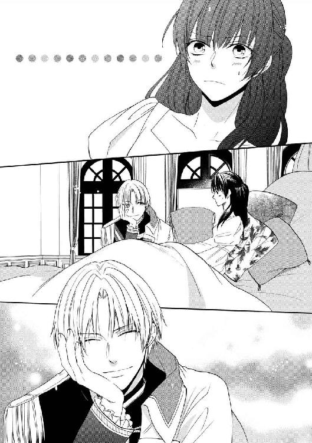
こんにちは。本書『あやつり王妃の花嫁道 偽装生活は貴人のたしなみ』をお手にとってくださってありがとうございます！
今回のお話は、主人公が少年......女装少年です。女装少年が嫁に行く話です。とっても堂々と言っていますが、よく考えなくても若干何言ってるか解らない感ですね！
この本を作るのに、お世話になった方々にお礼を申し上げます。
イラストを描いていただいたキリシマソウ様。お忙しいところ本当にありがとうございます。
細かいところまでご指摘くださった担当様をはじめ編集部の方々、大変お世話になりました。何度も何度もやり直してお手数をおかけして、申し訳ございません。
原稿中、長々と相談に乗ってくれた友人たちにも、ありがとうを。
そして、ここまでご覧くださった読者の皆様に、心から感謝しています！ 最後までお付き合いくださいまして、本当にありがとうございました。
あやつり王妃の花嫁道
偽装生活は貴人のたしなみ
２０１５年７月１日 初版発行
著 者 雨川 恵
発行者 杉野庸介
発行所 株式会社一迅社
〒１６０―００２２
東京都新宿区新宿２―５―10 成信ビル８Ｆ
制 作 大日本印刷株式会社
©雨川恵／一迅社
本書はフィクションです。実際の人物・団体・事件などには関係ありません。
本書の内容を無断で複製、複写、放送、データ配信等することは、堅くお断りいたします。